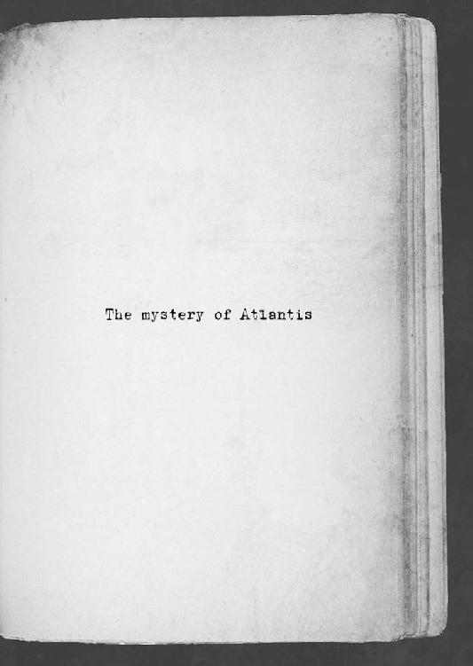

| 桜ノ杜ぶんこ アトランチスの謎 復活のザヴィーラ | |
| 加納京太 | |
| (2013) | |
桜ノ杜ぶんこ
アトランチスの謎
〜復活のザヴィーラ〜
加納京太

★この物語はフィクションであり、実際の事件や 地名、登場する団体や人物などの名称はすべて 架空のものです。
プロローグ
神殿を襲う震動は、今や危険域に達していた。
地の底から突き上げてくる悪魔の呻き声のような衝撃に、若き探検家ウィン・バートンは支えなく立っているのがやっとであった。
彼の頭の中では警鐘が鳴り響いている。すぐにでもこの場を脱出するべきだ。アトランチス島の最深部であるここから地上までは遠い。今から全力で走ったところで崩落する前に脱出できるかどうか。
そう頭では理解はしているのに、ウィンは出口とは反対側へと顔を向けていた。その慧眼が睨みつける視線の先には、神殿の更に奥へと往こうとする男の背があった。
「師匠、どうしてですかっ!? 悪魔ザヴィーラは俺が滅ぼしました！ 石になっていた師匠の体も元に戻ったじゃないですか！ なのに......どうしてっ!?」
「言ったろう？ この島は、海の底へと沈めねばならないのさ。それができるのは、こいつ──〝ボン〟だけなんだよ」
崩落する天井が巻き起こす土煙の向こうで、ウィンより師匠と呼ばれた男は、振り返りもせずに言い開いた。その手にはダイナマイトによく似た形状をした爆発物〝ボン〟が、しっかりと握られている。
「こいつで柱を壊したら、地上まで逃げる時間はもうないのさ。だからお前は今のうちに逃げろ。そしてアトランチスの本当の姿を皆に伝えてやってくれ」
「そんな......どうして、師匠が......」
「すまないなぁ。お前にこんなことを頼んじまってよ」
「すまないと思っているのなら、一緒に逃げましょうよ師匠！ 一旦戻ってから万全の準備をして、改めて沈めにくればいいじゃないですか！」
ウィンの懇願に彼の師は、伸ばしっぱなしにした黒い髪の毛を掻きながら天を仰ぐ。
「ああ、それができれば幸せだなぁ。かみさんの顔も、ハナの顔も、もう長いこと見ちゃいねぇ」
「だったら！ ハナの八歳の誕生日には戻ると、約束したじゃないですか！」
「だがなぁ、ウィンよ。これがわしの一族の宿命なんだよ」
「宿命？ 知りませんよそんなの！ ......っなら、俺が代わりに行きますっ！ 師匠が死んだらみんな悲しむ......探検家協会にも必要な人なんです！」
「......いいや、お前はもう、わしを越えているさ」
師がその言葉を呟いたと同時、ひときわ大きな鳴動が起きた。轟音と、崩れたバランスを戻すのに意識を取られてしまったために、ウィンは彼が何を言ったのか聞き取ることはできなかった。
「師匠、今、なんて？」
「そのダイヤはぁ、お前が大事に持っていろぉっ！」
「ダイヤ......？」
ウィンは自分の手に持ったままであった妖しい輝きを放つ宝石を見た。
悪魔ザヴィーラの心臓ともいえるもの、忌わしい呪いのダイヤだ。
壊すのならばまだしも、それを大切に持っていろなど、師匠の言っていることが彼には理解できなかった。
「そいつは絶望でもあるが、希望でもあるのさっ！」
そう叫ぶや、師匠はボンを持たぬ手で腰に挿された特注のナイフを流れる動作で前へと放った。ブーメランに良く似たＬ字型の刃は、回転により円盤状の凶器と化し、奥に続く通路からゆらりと姿を現した人影の頭と胴体をスパリ！ と切り離す。
ウィンがあっと驚く前に地面へと落ちた頭は、予想外にもカランと軽い音を響かせた。
揺れる床の上で跳ねながら、不気味にカタカタと顎を鳴らし続けているそれは、肉も皮もついていない〝しゃれこうべ〟だ。続けて骨だけの胴体が崩れ落ちる音がした。
人影は人間ではなかった。なんと、ガイコツの悪魔だったのだ。
「そんな!? ザヴィーラを滅ぼしたのに、どうしてガイボーンが......っ!?」
「そういうことだ、ウィン！ 奴の土産が残っているのさ！」
ブーメランのように大きく弧を描き戻ってきた特殊ナイフを見事な手捌きでキャッチした師匠は、忌々しげに叫ぶ。
「お前には、わしが持つ技術の全てを叩きこんだ！ 刃物の扱いだけは及第点ギリギリだが......それでも弟子の中では一番だ！ 体も、心もな！」
「師匠......っ」
振り返った師匠の顔には、寂しげな笑顔が浮かべられていた。
ウィンがこんなにも素直な褒め言葉をもらったのは、これが初めてであった。そして最後になると二人には分かっていた。
（どうして今なんですか......！）
溢れそうになる涙を、ウィンは歯を食いしばり必死になって零さぬように耐える。
今、彼は尊敬する師匠から、ついに認めてもらったのだ。それなのに女々しい姿など見せるわけにはいかない。
「家族のこと、頼むわ。ああ見えて二人とも、結構弱いところがあるんだよ」
「はい......師匠のことは必ず伝えます」
「ありがとうな......」
礼を口にした師匠は、言葉を続けるかで逡巡を見せるも、これは伝えねばならないことであると覚悟を決める。
「......もし、わしがしくじって、アトランチスが蘇るようなことがあれば......その時は......頼んだぞ、ウィン」
丁寧に、緩やかに告げられた言葉から、ウィンは師の苦しみを感じ取った。
彼の決意ある旅立ちに迷いを与えてはなるまい。その気持ちは師から託された誇りと共に、力強い頷きという動きとなる。
「......分かりました。師匠の弟子として、精一杯やらせてもらいます」
「あんま肩肘はるな。いつもの感じでいいんだ。でないと、わしみたいに失敗するからな。ハッハッ！」
一度、呵呵と明るく笑うと、師の表情は穏やかさを取り戻す。
ウィンの見せた精悍な顔つきに、正義感に燃える瞳の輝きに、一人前となった弟子の姿に、もう彼は心残りを見せなかった。
「......良い探検家になれよ」
「......はいっ！」
ウィンは心の内で別れを告げると、踵を返し、激しく揺れる地面を勢いよく蹴る。
地上への道程は、刻一刻と厳酷さを増していた。
最期を迎えつつあるアトランチス島は『逃がすものか』と言わんばかりに、天井を降り注がせ、地面には大きな亀裂を走らせる。
されどウィンの足は止まらない。止められない。
この迷宮を踏破したことが、師より託された想いが、力強い足取りとなり、彼を地上へと進めていく。
もう振り返ることはない。全力で走り抜ける──
──だが、ようやく開けた空の下に辿りついたウィンが目にしたものは、信じられない光景であった。
「そんな......」
ウィン達を待っていてくれるはずの気球が、彼を残して遠く飛び去ろうとしているのだ。
「待て、待ってくれ！」
ウィンの悲痛に満ちた叫び声に、バスケットの中にいる男は明らかに気付いた素振りを見せていた。なのに、彼は気球を戻そうとはしなかった。
「ッ、ルイスゥゥゥゥゥッ！」
ウィンが怨嗟の限りを込めて吠えた時、大地から人の力では抗えぬ強烈な力が溢れだし、彼の矮小な存在はいともたやすく飲みこまれた──
一章 眠れる獅子
「──はっ、はぁ......っ！」
溜めこまれた息を吐き出すと同時、赤い大地の上でウィンの体は跳ね起きていた。
遮光のために目深にかぶっていた探検帽がこぼれ落ち、黄白色の光が目を刺してくる。
痛みを伴う太陽の眩しさに耐えきれず、開きかけた瞼は自衛のために固く閉じられた。
続き、吸い込んだ空気のいがらっぽさに息苦しさを覚える。
一瞬むせかけるも、このにおいと味は、ウィンの体に不思議と馴染んでいた。
鉄臭さの混じった土埃──刹那、思い出す。
（ああ、これは......バーミリオン鉄山の空気だ）
光に慣れ、薄く目を開けた先に広がるのは、赤い土で出来た山だ。これから坑道に向かう坑夫達や、導入されたばかりの土木用建設機械が動き回っている。
次世代の動力として普及しつつあるクリスタル・エナジーを用いたものだと、オーナーは現場に来るたびに自慢をしていたものだ。
天を見てみれば、空は青く澄み渡っており、狂気を孕んだアトランチスの色彩ではない。
落ちついてみれば太陽だって、この時期だけ特別に与えてくれる初夏の柔らかな温もりを降り注がせているにすぎなかった。
それに肉体も、夢の中で十代の自分が持っていた若々しい肉体とは違っている。
二十も後半を迎える、成熟しきった体つきだ。
ウィンは寂しげに微笑すると無意識にシャツの胸元へと手を当てていた。
じっとりと脂汗に濡れた肌に、首から下げた革袋が触れている。
その中には忘れてはならぬ硬い感触が確かに存在していた。
「久しぶりだなぁ。ウィンがうなされるのを見るのも」
不意にかけられた声に顔を向けると、地べたに座って食休みの読書をしていた初老の男が、年下の若者を気遣う微笑を浮かべていた。
彼はビルと呼ばれる古参のひとりで、ウィンの作業班の班長でもある。
「そいつは恥ずかしいところを見られたな」
ウィンが照れ隠しに額を叩いておどけて見せると、ビルはニヤリと笑う。
「今更じゃねーか。なんだ、借金取りに追われる夢でも見たか？ 粉かけた女の親父に銃を向けられる夢か？」
「やめてくれ。夢でもぞっとしないよ」
「なら、また一五年前の夢か？」
ビルの核心をつくその言葉に、ウィンの表情が殺される。
「アトランチスで死にかけたっていう夢、まだ見るのか」
「......そういうことだ。借金取りと同じくらい楽しい夢じゃない」
「そうか......。......ぷっ、くくく」
ビルは神妙そうに頷いたが、すぐに耐えきれなくなり笑いを溢れ出させた。
「ぷはっはははっ！ 〝ホラ吹きウィン〟も久々だな。一五年前って言ったら、お前はまだ一〇やそこいらじゃねぇか。そんな小僧っ子連れて行ったところで、探検隊も足手まといにしかならんだろうに」
にやにやと笑うビルを見て、懐かしい呼ばれ方だとウィンは苦笑した。
からかわれていると分かっているが、奇異や憐憫の目で見られるよりかはずっといい。
「本当なんだけどな」
「探検家協会に手柄ぜんぶ掻っ攫われて、街にいられなくなってここに流れ着いて来たなんて話、誰が信じるかよ」
月日が経つにつれ自然と身についた、わざとらしく肩をすくめる仕草をしてみせると、ビルはガハハとさらに大笑した。
「まぁ、いいじゃねぇか。昔は日を置かずにうなされていたが、今じゃ、前がいつかも思い出せねぇ。お陰で俺らも壊れかけの硬いベッドと朝まで仲良くできるってもんよ」
ウィンも笑いながら相槌を打ちはしたが、本当に良いことなのだろうかとも思ってしまう。
あの頃のことを忘れて安穏とした日常に埋没していることに、抵抗したがる自分もいた。
（しかし、どうして今になってあの夢を？）
今日ほどに明瞭な夢を見るのは希だった。憶えている限り、ここ二、三年では初めてである。
強制的に思い出されたあの日の映像は脳裏にこびりついており、簡単には消えてくれなさそうだった。
「どうした、変な顔をして」
「......いやなに。平和が一番だと思ってたんだよ」
「違いねぇ」
ビルはそれ以上深く追求することなく、笑い飛ばしてくれた。
ノルウェーにイタリア、フィンランド。出自も様々なここの鉱夫たちは他人の過去を気にしない。
アトランチスでの冒険以降、一度に多くのものを失ってしまったウィンにとって、それは居心地が良いものだった。
「あんまり余所事に気を取られているなよ。お前の発破のお陰でここ五年間、うちの班は事故がないんだからよ」
「分かってる。ダイナマイトの扱いだけは信じてくれ」
ウィンがそう言って地面に落とした帽子を拾ってかぶり直した時だった。
「ダイナマイトの扱いだけだなんて、寂しいこと言ってくれないでよ」
唐突に、彼の頭上から人影と共に、落胆がたっぷりと込められた若い女の声が覆いかぶさってきた。
耳慣れた声にウィンも小さくため息を吐き、渋々顔を向ける。
「ごきげんよう、ウィン」
太陽を背に立っていた女は、振り返った彼へと昔から変わらぬ笑顔を見せる。
そこにはどんな宝石すらも色あせてしまいそうな輝きがあった。
逆光が眩しいと言うように、立ち上がったウィンはさり気なく視線を横へとずらした。
「久しぶりだな、ハナ」
埃だらけの場所だというのに、ハナと呼ばれた女性は少しも気にしていない様子で、背中まで真っ直ぐに伸びる美しい黒髪を微風に揺らしていた。
彼女の背はウィンよりも頭半分ほど低いにすぎず、女性の中では長身と言えた。
化粧気の少ない肌理の細やかな肌に、整った目鼻立ちをしている。
特に気品のある猫を彷彿とさせる、力強い意志のこもった瞳は彼女のチャームポイントであった。
優しく細められていたその瞳が、不意に不機嫌そうなものへと変わる。
「元気そう......とは言えないけど、変わらぬ様子で安心したわ」
「君も息災そうで何よりだ」
「ありがとう、ウィン。おかげさまで風邪ひとつひかずに済んでいるわ」
「ならこんな所に来ない方がいい。鉱山の空気は都会の人間には良くないと言うしな」
口でこそ和やかに再会を祝す言葉を交わしているようではあったが、二人ともに腹の底の気持ちをあけすけに言葉に乗せる。
そんなウィン達の間に割り込むように声がかけられた。
「お、おう、ハナちゃんじゃないか。久しぶりだなぁ......二ヶ月......いや、三ヶ月ぶりくらいかなぁ？」
いつの間にか立ち上がっていたビルが、しどろもどろに言葉を口にする。
その瞳は落ちつきなく泳ぎ、手も尻の汚れを払い落したり、頬についた泥を拭おうとして余計に汚れを広げたりと定め無い。
（相変わらず慣れないんだな）
ウィンはそう思いながらも、自分も例外ではないなと自嘲する。
細身ながら発育の良い体躯を包む明るいベージュ色のワンピースは、シンプルなデザインながら品と洒落っ気が感じられた。
一見武骨に見える肩からかけた革鞄ひとつとっても、この辺りでは味わうことの少ない都会的な空気を思い起こさせ、彼女を特別なものに見せてしまう。
そのように見られていることを知ってか知らずか、当人は気さくにビルへと微笑みかけた。
「ビルさんもお久しぶりです。うちのウィンが迷惑かけてないかしら？」
「おい。誰が〝うちの〟だ」
「ウィンはお父さんの弟子でしょう？ だったら家族みたいなものよ」
それは聞き捨てならぬとウィンが不満を見せるも、彼女は生意気そうに鼻を鳴らす。
「......昔の話だろうが」
喉の奥で詰まりかけた反論を無理矢理吐き出すと、ハナは眉間にしわを寄せた。
その反応に、言葉を間違えたことに気付いたウィンは、彼女が癇癪を爆発させる前にと、慌てて話を進める。
「それで、何の用だ？ 記者ってのは存外暇なのか？ バカンスでもなかろうに、わざわざこんな所まで来るなんて」
「......もう、美女が貴重な時間を使って遠路はるばる来ているっていうのに。少しは嬉しそうな顔をできないものかしら」
「〝兄〟として心配しているのさ〝妹〟よ。せっかく一流の新聞社の記者になれたというのに、クビになったりしないものかとな。交通費だって馬鹿にならないだろう？」
丁度、遠くから聞こえてきた蒸気機関車の汽笛に、彼は耳元へと手を当てた。
「あらまあ？ 気にかけてくださって嬉しいですわ、〝お兄様〟。でも、心配はご無用。我が社が契約している高速気球船を使っていますから、一日とかからずニューヨークから来れるのよ。それに、快適な空のクルージングのお陰で移動中にだって仕事もできるしね。ハァイ♪」
だが芝居がかったウィンの皮肉を、ハナはいとも簡単にいなしてしまう。
その上、彼女が来たことに気づいて浮足立った他の男たちへと気さくに手を振って、愛嬌を振り撒く余裕まで持っている。
（したたかに育ったもんだ。さすが記者と言うべきか）
言葉では敵わなかったものの、ハナの得意げな表情にウィンは微笑を漏らす。
容姿こそ、二十代を迎えた女性が放つ眩いほどの美しさと色香を湛えているものの、笑顔は少女時代の面影そのままだ。
（昔は大人びた笑顔だと思っていたものなんだがな）
それが今となっては感想が逆転しているのだから、不思議なものだとウィンは心の内で独りごちる。
けれど郷愁に浸る姿をハナに見せるわけにはいかなかった。
「で、そろそろ本題に入ってくれないか？ 作業が始まる時間なんだ」
ウィンはことさら素っ気なくハナへと水を向ける。そんな彼の態度に周囲の男どもは荒々しい目で見てくるが、ウィンは気付かないフリをした。
「どうせいつもと同じ話だろうがな。何度来られようと俺は探検家には戻れないよ」
「まだそんなことを言っているの？ お父さんは後援者を得られなくても、自分を信じて裸一貫で秘境に向かったって言っていたわよ」
「師匠の時代とは違う。分かっているだろう？ 協会に睨まれたらオシマイなんだ」
「あ～あ、いやだいやだ。たった数年でここまで腐り果てるなんて」
じとりとした目でウィンを睨みつつも、肩掛け鞄の留め金を外そうとするハナの口元には自信に溢れた笑みが浮かんでいた。
（何を持ってきたんだ？）
これまでにない彼女の余裕をウィンは訝しく思いながらも、予測がつけられぬまま、大人しく〝その何か〟が鞄の中から出てくるのを待ってしまう。
「さあ、これを見ても、まだウジウジとしていられる？」
ハナが鞄の中から新聞を一部取りだしたと同時だった。
──ィイィ......ッ！
「っ......!?」
耳鳴りのような音がウィンの脳に響く。そして、じくりとした痺れにも似た感覚が胸元で波打った。
反射的に、異常の源へと彼が手を伸ばそうとした時、次なる異変が、ほど近い岸壁に開けられた坑道の口より噴き出てきた。
ズン、という地鳴りを伴う重たい音。
この鉱山で働く男たちにとっては耳に馴染んだ音。けれど都会に暮らすハナには聞き慣れない音。
それはダイナマイトの爆発によるものだった。
爆発音からわずかな時を置いて、山が咳こんだような細かな粉塵が表へと舞い出てくる。
「......おいおい、何発使ってるんだ？」
「それ以前に、スティーブの班は発破を使う予定あったか？」
普段ならばあり得ないスパンで続けざまに発生した破壊の音は、じきに鳴りやんだが、誰ひとりとして安心する者はいない。
「何、事故？」
ハナは無意識に掴んでいたウィンの腕をさり気なく放すと、記者特有の情報を求める目つきで彼を見上げる。
「まさか......いいや。あるはずがない」
「......ウィン？」
だが、ウィンはハナに気づかぬまま、胸に下げた革袋をぐっと握りしめながら坑道の奥へと意識を向けていた。その手が震えていることに気付けたのは、彼を見るハナだけだ。
「落ちつけ！ 俺が様子を見てくる！ お前らはここで待っていろ！」
浮足立っていた男たちを班長らしく一喝したビルが、入口へと向かって行こうとした。
「ひあっ、ああああぁっ！」
だが、彼が中へと入るよりも先に、甲高い悲鳴を先頭にした男たちが坑道の口より雪崩をうって飛び出してくる。
彼らは太陽の下に出ると、蜘蛛の子を散らすように一目散に逃げ出していった。
「何なんだよ一体......」
山で育った屈強な男達が、ボンレスハムのように太い腕で情けなく空気を掻きながら、子犬のような悲鳴をあげている。
その異常な光景にはさすがのビルも呆気にとられていたが、自分の方へと逃げてくる男の姿に我を取り戻して声をかけた。
「お、おい、クリス。中で何があったって言うんだ？」
足をもつれさせ自分の厚い胸へと倒れ込んできた鉱夫を抱きとめたビルは、彼を起こそうとして表情を強張らせた。
「ひっ......いぃ......」
クリスはこの鉱山にいる誰よりもタフでお調子者だ。
以前に起きた落盤事故で生き埋めになった際にも、取り乱すことなく、いつもの軽い調子で皆を元気づけていた。その男が今、恐怖に顔を歪めている。
「び、ビル、逃げろ......！ バケモノだぁ......！ あの穴にはバケモンがいる......！」
「バケモノ......？」
すがりつきながら訴えかけてくるクリスの言葉に、ビルをはじめとする班の男達が怪訝な顔を見せ合う。
そんな中で、ウィンひとりだけが顔を青ざめさせ、厳しい視線を坑道へと向けた。
「バケモノって......ウィン、まさか......？ あっ！」
ハナはウィンの不審な挙動と〝バケモノ〟という言葉から、あることを連想した。
彼女がそれを確かめるべく問いかけようとした時、ウィンは既に動いていた。
「ロッキーと、ジョニーがやられちまった......スティーブが残った奴らを逃がそうとしたが......きっとダメだ......奴は、奴は......っ、あぐっ!?」
「......どんな化物だ？」
クリスをビルから引き剥がし、その胸ぐらを乱暴に掴み寄せるウィンの姿に、皆は狼狽えてしまう。
「お、おい、ウィン!? どうしちまったんだ!?」
ビルは慌てて彼の狼藉を止めようとしたが、ウィンは引き下がらなかった。
「クリス！ 頼む、大事な話なんだ！ 教えてくれ！ どんな化物だった？」
彼から鬼気迫るものを感じたクリスの瞳が、一瞬冷静な光を取り戻す。
「ば、バケモノとしか言いようがねぇよ......全身鱗におおわれた......二本の足で立つ魚みてぇな......まるで、か、怪奇小説の怪物だよぉ！ そいつが皆を石にしちまったんだ！」
「はぁ？ 石って、何を言っていやがるんだ？」
キツネに抓まれたような話だ。誰しもがクリスが狂ってしまったのだと思った。
「神はいない、か」
しかし彼の証言にウィンだけは、神へと悪態をつく。
胸元の疼きが勘違いであってほしいという願いは、脆くも崩れ去った。
「ビル、ハナを頼む」
ウィンはクリスを離すと、シャツのボタンを上からふたつ外し、内側に吊るしていたホルダーに筒状の道具が収まっていることを確認する。
「は？ 待って私も行くわ！ スクープなのよ？」
「駄目だ。ここにいろ」
「お、おい、ウィン。何をする気だ？ 一人で行くのは危険だ」
「そうだ、や、やめろよ。バカなこと考えるな、行くんじゃねぇ......奴にはマイトは効かねぇんだ。いくらお前でも、無理だ！ 勝てっこねぇ！」
涙声で訴えかけてくるクリスへと、ウィンは静かに、しかしハッキリとした言葉を返す。
「こいつはダイナマイトじゃない......ボンだ」
ウィンは掴んできたビルの手を払いのけて、坑道の口へと駆け込んだ。
斜めに射し込んできた太陽の光が届いたのは入口からわずかの時間だけで、そこから先は頼りなげに揺れる備え付けのランタンの光しか照らすものはない。
速度を緩めぬまま、ウィンはそのうちのひとつを引ったくるように手に取った。
既に彼の中から不安は消えていた。
それに勝る使命感がウィンの体内で燃え上がっている。
彼を形作るもの全てが眠りから覚め、活性化していくのが彼自身理解できた。
しかし、その勢いは唐突に遮られてしまう。
「......っ、誰かが道を塞いだのか」
木材で補強された通路が、大量の土砂によって唐突に終わりを迎えていたのだ。
さっきの連続した爆発が招いたものだろうと結論づけつつ、ウィンはざっと様子を探ってみたが、これを人力で取り除くことは容易ではなさそうだった。
脱出してきた者達の班が作業をしていたのはこの先だった。まだ逃げ出せていないスティーブ達がいるとすれば、これを越えねばならない。
（あれしかないな）
ウィンは迷うことなく道を引き返した。
来る途中、使いこまれたリヤカーが脇に停められているのを目にしている。
普段と変わらないのであれば、その荷台には目的の物があるはずだ。
「良かった、残っている」
記憶どおりの場所に取り残されていたリヤカーの荷台を覗いてみれば、彼が思っていたとおり、そこにはダイナマイトが入った木箱が置いてあった。
蓋が開き、不用心にも数本が転がっている。落盤を引き起こした者が慌ててこぼしたものだろうと考えられた。
ウィンはそれを拾い上げると、踵を返し足早に落盤箇所へと戻る。
セットするべきポイントの目星はついていた。
薄く、脆く、それでいて土砂の支えとなっていない場所。
時限式の点火装置を用意する時間はなかった。手早く導火線へと火を点けるとダイナマイトを仕掛け、急いで距離を取る。
横穴に飛び込んで身を隠した直後、爆発音が坑道を揺らし、余剰の力が風圧となって噴き抜けていった。
パラパラと小石が転がる音が聞こえるが、計算どおり岩盤に大きな疵は入っていない。
ウィンは帽子をかぶり直し、残響を耳の奥に聞きながら崩壊した場所まで戻っていった。
確認してみれば、丁度人ひとりが通れそうな穴がぽっかりと口を開けている。
「よし」
その結果に彼は満足気に頷くと、闇の中へと潜っていった。
「......っ！」
突然身を包みこんだ暗闇の違和感で、全身に怖気が走る。
彼がいるのは、崩落した土砂の一部を吹き飛ばし作った非常用の通り道のはずだ。だがこれは、〝扉〟を潜った時の感覚だった。
別の空間へと通ずる境界を過ぎたのだと、全身が総毛立ち警告を発している。
（......ああ、憶えているさ）
ウィンにだけ分かるように、低く唸りを上げている胸元の革袋を握りしめると、乾いた唇を唾液で濡らした。じゃりっとした土の味を唾と一緒に飲みこみ、ウィンは意識を改め一歩を踏み出した。
完全なる暗黒はその一歩で消滅する。
空間が開け、視界にランタンの淡い明かりが取り戻された。
落盤の先に来たのだと分かったが、充ちる空気は全くの別物だ。
見た目こそ坑道であるが、ここは油断が即座に死を招く場所に相違なかった。
ウィンはぬかりなく前方を注視しながら前に出る。
その背後で、ジャリッという地面を踏む音がした。
（背後を取られた？）
まさかと驚きながらも不意打ちから身を守るために前へと踏み出して距離を取り、右足を軸に一八〇度のターンを決めて相手と向き合う。
手に持ったランタンを向けた先にいたのは、しかし怪物ではなく女性だった。
「ハナ!?」
「さすがね、ウィン。まさか道を作っちゃうなんて思わなかった。長年培ってきた鉱夫としての経験？ それともアトランチスで身についた賜物かしら？」
ハナが壁際に手をつきながら暗闇の中を歩いてきている。
「シット！ 何故君がここにいるんだ！ 戻れ！ イイ子だから表で待っていろ！」
「っ！ 私は記者よ！ いつまでも子供扱いしないで！」
ウィンは表に戻るよう指差したが、ハナは逆に激しく言い返しながらも、すぐに神妙な表情へと変わる。
「......それに、分かってるつもり。ここが他と違うってことくらい......イヤな感じ。じっとりとして、生臭くて息苦しいし......何だか、この世じゃないみたい......」
「分かっているならっ──いや、いい。分かったよ。分かった」
「やった♪」
口論程度でハナという女性記者の行動力を削ぎ落せるとは思えず、時間の無駄にしかならないと、ウィンは諦め深く息をついた。
（昔からこの子はそうだ。一度言い出したら聞かない。そんなところも師匠譲りだ）
ハナは許可を得たことに良い気になって、ウィンの気も知らずに鞄の中から小型の写真機を取りだしている。
「けれど！ いいか、その代わり、俺の前には絶対出るな！ それと、俺が逃げろと言ったら一目散に逃げるんだからな！」
「もう、子供じゃないって言っているのに！ はいはい、分かっています。専門家に従うのも記者の務めですから」
（なら、そもそもここに来ていないだろう）
言い返してやりたいが、今はそのようなことをしている場合ではなかった。
一人の時以上に背後を気にしながら、慎重に、しかし大胆に奥へと進んでいく。
「ねえ、ウィン。これってやっぱり、アトランチスと関係があるの？」
「......顔に出ていたか？」
「それもあるけど......あっ！」
二〇ヤード（約一八・三メートル）ほど先で、赤い火が灯されたのが見えた。
小さくも激しい光に照らされたのは、隆々とした筋肉の腕を持つ男と、相対するうっすらとした人型の影だ。
「こ、これでも喰らえってんだよぉっ、魚野郎っ！」
一瞬遅れて、男の悲鳴にも似た絶叫が届く。
「っ！ やめろスティーブ！ 無駄だ、逃げろっ！」
こめかみに走る鈍い痛み。ウィンは瞬間的に、取り残されていた鉱夫が〝敵〟をダイナマイトで攻撃しようとしているのだと察した。
制止よ届けと叫び、前へと飛び出そうとする。
けれど、男は無謀にも導火線へと火を点けてしまった。
いや、彼にも策はあったのだ。怪物の足元にあるのは、ウィンがリヤカーの荷台で見つけたものと同じ木箱だ。そこに目掛けて点火されたダイナマイトを投げつけていた。
「くそっ！」
それが理解できたからこそ、ウィンは舌を打ち、頭を振って背後を確認する。
ハナは事態を良く理解しないがままに、少し遅れて彼についてきていた。彼女の人並以上の脚力と記者魂に、この時ばかりはウィンも感謝する。
「ハナっ！」
「うわっ!?」
彼は踏み出した足が地面につくや、全身で振り返ると腕を大きく広げ、走り込んでくる彼女の体を驚嘆の声ごと全身で抱きとめた。
間一髪、雷が落ちるにも似た爆発音が轟き、加減のない暴力的な風が彼の背を殴りつける。
「ぐううっ......！」
「きゃあぁっ!?」
ウィンは猛烈な爆風の力にあえて抗わず、押されるままにハナと共に倒れ込むと、弾丸のように降り注ぐ砂礫から彼女の身を守った。
それに対し、まだ満足に補強がなされていない坑道は、爆発をもろに受けて脆い部分から亀裂が入っていく。
天井は轟音を伴いながら無残にも瓦解し、大量の土砂が通路を押し潰した。
「ふひっ、ふへ、へへ......さすがのバケモノもこれでお陀仏だろ......あ......？」
風に煽られて後ろに転がったことで、幸運にも崩落という難から逃れた鉱夫であったが、その目が恐怖に見開かれる。
濃霧のようにけぶる世界が揺らいだのだ。
「ち、ちくしょう、無事かよ......せめて潰されてくれりゃ......ヒッ！」
煙の中でも分かる、巨大でまん丸い眼が爛と輝いた。
「ヒアアアアアァアアァァァッ！」
男は悲鳴を上げ、水を掻くように大地を掴み、這うようにして恐怖から逃げようとした。煙を掻き分け、少しでも遠くに。
その様子は爆発を無事にやりすごしたウィン達の耳にも届いていた。
「スティーブっ！ こっちだ！ こっちに逃げ道があるぞ！」
スティーブが逃げようとしている先、薄れゆく煙の中にぼんやりとした灯りが見える。ウィンが拾い上げたランタンの火だ。
それはスティーブにとって、果たして希望には成りえなかった。
「ウィ、ウィンか!? 来るな、逃げっ......あィっ......？」
ウィンを逃がそうと、伸ばした腕を追いやるように振ったスティーブのその背には、鋭い槍のような物体が突き刺さっている。それは逃れようのない一撃だった。
「......ち、ちくしょう......なんで魚なんか......で......」
背から胸へと貫いていたのは槍ではない。鉱夫の鍛え上げられた腕ほどに太くて巨大な硬骨魚だった。それの鋭い頭が槍先のように見えたのだ。
そのようなものが刺さっているにもかかわらず、不思議なことに傷口から血は出ていない。
それだけでも現実離れした光景だと言うのに、更に不思議な現象が起こった。
貫かれた箇所から豆を炒る時のような乾いた音が立ち始めたのだ。
「......え、あ......な、何よ、これ......本当に......石に......なる、の......？」
悔しさに表情を歪ませるウィンの背に隠れていたハナは、その光景に息を呑んだ。
スティーブの立派な体躯が、瞬く間に灰色の無機物へと変わっていく。
「う、あ......しゃ、写真撮らないと......」
ハナに備わった記者としての本能はかろうじて働き、写真機を向けようとした。
その時だった。突如として石化したスティーブの背後で爆発が起きたのは。
ハナは咄嗟にレンズを石像の後ろへと向けることができたが、シャッターを押すことはできず、写真機は彼女の手からするりと滑り落ちてしまう。
「ひっ」
落ちていく高価な写真機へと手を伸ばすこともできぬままに、彼女は引きつった息を喉から漏らした。
ファインダー越しに見てしまったのだ。
地中から飛び出してきた〝何か〟が、飛び散る砂礫を浴びながら着地すると、ギョロリとした双眸でじいっと見つめてくるのを。
まるで魚類そのものといった頭と水かきのついた手足を持った、全身を鱗に覆われた見るもおぞましい二本足の怪物。その姿は外に逃げ出してきた鉱夫の証言どおりのものだった。
ウィンよりも一回りは大きいであろう体躯は、強力な酸をかけられたかのようにただれ、腐臭のする粘液を留まることなく流し続けている。
だらしなく半開きとなった唇の中からは、博物館で見たセイヴァートゥースタイガーのように長大な犬歯が不揃いに生えていた。南米に棲息するという人食い魚など比べ物にならないほどの脅威を感じさせられる。
「ザバーン......」
『あヴぉヴァアアァヴァヴァァァァッ！』
思わずハナがその名を口にした時、怪物は頭が上下ふたつに割れてしまうかと思うほどに顎を大きく開き、耳にするだけで精神が病んでしまいそうなほどに醜悪な声を上げた。
あまりに現実離れをしたその声に、恐怖した彼女の身はすくんでしまう。
『ミどゥ......げダァ......！ ッだィ......ャヴぁヴぁヴァヴァァァッッ！』
「喜んで......いるの？」
『ダぃイャアあパアァッ......ァダイャヤヤァヴぅオルルゥァ......！』
その声は濁りすぎていて、言葉として聞き取れたわけがない。そもそも言葉を発したのかすら怪しい。それでもハナはそこに意味があるように思えた。
空気の震動が不快な余韻を残して消えていく。
残されたのは大きく開かれた顎。
焦点を失いかけたハナの視界に、一瞬おかしなものが映った。
ザバーンの口腔に、人間の舌のようなものが見えたのだ。
だがすぐに、彼女はそれが舌ではないことに気付いた。
ランタンの弱い光がかろうじて届いた喉の奥で舌の代わりに頭を見せているのは、スティーブの体を貫いたのと同じ、硬骨魚の頭だ。
それが自分を......いいや、ウィンを狙っている！
「ウィン、危ない！」
『ヂェるヴォッ！』
ハナの警告と同時、気味の悪いずるりとした粘液質の音と共に、ザバーンの口からバズーカのように硬骨魚が撃ち出される！
──だが、その時にはもう、ウィンの行動は終わっていた。
「あ......」
いつの間にか彼が手にしていたボン。その導火線には火が点けられていた。
ハナを片腕で庇いつつも、怪物の撃ち出した砲弾を限りなく小さな動きで避けながら、流れるような動作で筒状の爆発物を投擲していた。
それは寸分の違いなくザバーンの足元に転がり落ちる。
足元に転がってきたものを眼球だけを動かして確認したザバーンは、不思議そうに首を捻った。
その視線の先で、導火線を伝わった火炎が雷管へと到達し、消える。
全ては一瞬の出来事だった。
刹那の空白の時間を跨ぎ爆発したボンは、赤き炎へと変転する。
ダイナマイトではありえない反応。それは全身を包まれたザバーンにも起きていた。
『ぃヴィグェぉーーッ？』
泥の泡が弾けるような音を発しながら、怪物の体は炎に焼かれて塵となり......跡形もなく消滅した。
それに合わせて彼らを取り巻いていた空気が変わっていく。
肌に感じていた、べっとりとまとわりついてくる不快感は消え、洞窟の中は冷んやりとした静寂が戻ってくる。
「......終わったん、だよね？」
「そのようだ」
「はああぁあぁ～」
ハナはへなへなとその場にへたりこんでしまう。
ウィンは彼女のことを一瞥だけして目を細めると、倒れたスティーブの傍らへと近付き、石と化した肌に触れた。
冷たく硬い感触は彼から体温を奪っていったが、じきに弾力と熱を取り戻していく。
「アトランチスとは違うか、それともザヴィーラの影響はまだ弱いと見るべきか......しかし、何故ここに？」
自分にだけ聞こえる声で呟いたウィンの背に、しゃがみこんだままのハナが声をかけた。
「ミスター・スティーブ、だったよね。大丈夫なの？」
「ああ。恐らく他の犠牲者も元に戻っているはずだ」
「そっか。良かった」
ウィンはスティーブの息が落ちついたのを確認すると、そのまま横にしておき、ザバーンのいた場所を見やる。
火薬により焦げた地面の他に、うっすらと濡れたような跡が残っていた。姿形こそ消え去ったが、そこに怪物がいた証拠だ。
「ねえ。今のって、ザバーン......だよね？」
「......ああ、そうだ。アトランチスの怪奇モンスター、ザバーンだよ」
時間をかけてゆっくりと立ち上がると、ウィンは重々しく頷いた。
「やっぱりそうなんだ......Ｏｏｐｓ、しまった、あの姿を思い出しちゃった。これじゃあしばらくの間、魚が美味しく食べられなさそう」
答えを聞いたハナは不快そうに顔をしかめて、口元をハンカチで押さえる。
「本当に〝ボン〟でないと倒せないのね。まるで狼男と銀の弾丸みたい。記事にしても......通らないだろうなぁ」
「実際、オカルトめいた話だよ。しかし、ハナこそよく落ちついていられたな」
「もっと泣きわめくかと思った？ 残念でした......と言いたいところだけど、まだ心臓バクバクいってる。写真機も落としちゃったし。あー、壊れてないといいけど」
ハナは地面に転がっていた写真機を手に取ると、丁寧に埃を払った。
そしてレンズが傷ついていないかを確かめるために写真機を覗きこみながら、小さな声で続けた。
「......ただ、ウィンから聞いていたとおりだったから。心の準備はできていた......かな」
「そうか」
「でも！ こういうことなら、やっぱりあなたを迎えに来て良かった！」
すくっと力強く立ち上がったハナは、洞窟の外でしたのと同じように肩かけ鞄の中へと手を突っ込んだ。
そして取り出された新聞をばさりと広げ、一面をウィンへと突き付ける。
『アトランチス島復活!?』
見出しに刷られた文字を見ても、荒れた海の中に浮かぶ島の姿を捉えた写真を見ても、ウィンに驚きはなかった。それは既に彼が覚悟していたとおりのものだ。
目を瞑り、静かにその事実を受け止める。
（......ついにこの日が来たんですね、師匠）
悔しさ、悲しみ、憤り......幾つもの負の感情がウィンの中で渦を巻く。
なのに不思議と彼は落ちついていた。
心の中心にともった静かなる炎が、正邪全てを呑み込んで力強く燃え上がっているのだ。
（師匠の無念、必ず俺が晴らします）
溜めこまれた息を吐き出して、瞼を開いた。
その瞳には何物にも屈することのない強い意志の光が宿っているようにハナには思えた。
「行くのよね、ウィン」
「ああ、カムバックだ。俺が、今度こそアトランチスを海の藻屑に変えてやる」
その言葉を聞いたハナは居てもたってもいられなくなり、ウィンの胸へと飛び込んでいた。
二章 出立 〜ＮＹ〜
「窮屈だな」
会場に溢れる嘘臭い談笑の声を避けて壁際に寄りかかっていたウィンは、蝶ネクタイを弄りたい気持ちを堪えつつ、うんざりとした声を漏らす。
（タキシードパークのクラブに集まったという紳士達も、モーニングコートの代わりというのならば、もっと息がしやすいものにしてくれれば良いものを）
彼は溜息をついたが、何も窮屈なのはこれまでの人生で初めて礼服を着たからというだけではなかった。
米国最大の都市ニューヨークにある高級ホテルのホールで開かれているこのパーティも、社交界などとは無縁のウィンからすれば息苦しくて敵わない。
無駄と思えるほどに煌々と照らされたシャンデリアに目がチカチカし、広いホールを埋め尽くしている着飾った人々の熱と濃い香水の匂いに頭はクラクラとしていた。
（アマゾンの密林でもこんなにはならなかったんだが）
高い湿度がもたらす不快さ。むせるほどに濃厚な緑の匂い。下水のような腐臭をまき散らすグロテスクな花々。辺りを徘徊する猛獣に毒虫。気付けば服の下に潜り込む吸血蛭。
苦しかった思い出が可愛く思えるほどに、この場の空気はウィンを圧迫してくる。
「酸欠になりそうな顔してる」
「ん」
突然、頬に当たった冷やりとした感触にウィンが驚くと、シャンパングラスを二つ持った美しい女性が楽しそうな微笑を浮かべた。
真っ赤なドレスを着たその女性に一瞬目を奪われてしまったが、よくよく見ればそれは見知った顔である。
「......ハナか。イタズラはやめてくれ」
わずかな間とはいえ見惚れてしまったことを深く後悔しつつ、ウィンは苦言を口にした。
けれどハナは悪びれた顔ひとつ見せずに、二つ持ったうち右手に持ったグラスをウィンへと掲げてみせる。
「一杯どう？ それとも、大事な話をする前には飲みたくない？」
「いや、もらおうか」
グラスを受け取ると、よく冷えたシャンパンをひとくち口に含んで喉を濡らした。鉱山で口にしていた雑味あるアルコールとは違う、後味の良い透き通るような甘酸っぱさが乾いた身体を潤していく。
ようやく一息つけたウィンは、彼の隣に位置どったハナをさり気なく盗み見た。
ドレスは肩口から背中にかけて大きく開かれ剥き出しとなっていた。髪の毛がアップにされているために露わとなった項は、吸血鬼でなくとも食いつきたくなる。
その上、身体にフィットするようデザインされているために、ただでさえ張りのある胸の谷間はより強調され、くびれた腰から引き締まった臀部にかけての女性的なラインもありありと見せつけられる。
踝まである長いスカートも、太股までスリットが大きく開いており、彼女の脚線美を惜し気もなくさらしていた。赤い生地も情熱的なハナによく似合っており、彼女の滑らかな白い肌は一際魅力的に輝いていた。
普段のハナもとてもチャーミングではあるが、どちらかと言えば野に咲く花のような自然の美しさだ。それに対し今日のハナは、この会場の中心にいる誰よりも艶やかで華やいでいるようにウィンの目には映った。
（ハナに見たててもらったくせに、馬子にも衣装な自分とは大違いだな）
「なあに、イヤらしい目で見て。もしかして私の美しさに興奮しちゃった？」
彼は素直に感心していたのだが、シャンパンで唇を濡らしたハナは悪戯っぽく笑う。
こんな表情はまだまだ大人とは言えないなと、ウィンはどこか安心した気持ちになった。
「あんなに小さかったハナの成長を嬉しく思っていたのさ」
「照れなくてもいいのに」
「馬鹿を言え」
得意気な顔をしたハナに呆れつつ、ウィンはもうひと口シャンパンを口にした。
「もう、少しは褒めなさいよ。私がデスクに頼んで入場証を用意しなければ、一介の鉱夫でしかないウィンはこのパーティに参加できなかったんだから」
「分かっている、感謝しているさ」
「......全然誠意がこもってない」
ハナの不満気な声は聞こえないふりをしてウィンがパーティ会場の正面を見やった時、前触れなく会場の照明が消えた。
「レディィィィィッス、エンドゥジェントルマァン！」
にわかにざわついた会場に響く男の声に、人々はあっと気づき正面演壇へと向きを変える。
「皆さま！ ようこそおいでくださいました！ 本日は、第二次アトランチス調査隊の壮行会にお集まりいただきまして、まことにありがとうございまァす！」
マイクもなしに、広いホール全体にまで届く通った男性司会者の声を聞くや、会場内に大きな拍手が沸き起こり、控えていた楽団による軽やかで景気の良い演奏が始まった。
「それでは早速、皆様お待ちかねの人物、第二次アトランチス島調査隊の隊長を務められます、この方をお呼びいたしましょう！」
人々が期待を込めて視線を壇上へと送る。
それを十分に聞いてから、さらに一拍の静寂の後、司会者が大きく酸素を吸い込んだ。
「忌わしき一五年前のアトランチス探索では多くの貴重な財宝を持ち帰り！ 怪物に襲われ石と化してしまった前探検家協会会長であるミスター・リチャードソンを救出！ そしてアトランチスの技術を応用して開発された未来のエネルギー、クリスタル・エナジー社の総帥でもあります、我らアメリカが誇る探検家協会会長っ！ その名はぁ......ミィストゥァァァ......ッ、ルイスッ・エドワァァァァァドッ・スミィィィィィィィス！」
耳障りなほどに巻き舌でアピールされた名前が司会の口から発せられたと同時、クラッカーのような弾けた音が管楽器より鳴らされ、舞台袖から一人の男が壇上へと姿を現した。
ルイスと紹介された男は、汚れひとつない下ろし立ての探検服に身を包み、降り注ぐスポットライトの中心で自信に満ちた笑顔を浮かべていた。
その人物を会場の人々はさらに割れんばかりの拍手で迎える。
彼は会場の人々へと手を振って応えながら、中央に用意されたマイクまで力強く歩いていった。
「やあやあやあやあやあ！ ありがとう！ 皆様、ありがとう！ でも、もう拍手は結構です、やめてください。やめるんだっ！」
愛想の良い笑顔から一転、厳しい剣幕に代わったことで会場の人々が息を呑む。
何事かと非難めいた視線を浴びたが、彼はたじろいだりしなかった。
怒りさえ感じられる真剣な表情で来賓を見渡していた彼は、突然ニヤリと笑う。
「だってそんなに強く叩いては、手が真っ赤に腫れてしまって、我々がアトランチスから凱旋した時、財宝を手にするのをお医者様に止められてしまいますよ？」
ルイスがしてやったりといった表情を浮かべると、彼の見せたユーモアに会場はどっと沸き立ち、更に大きな拍手と歓声が巻き起こった。
「上手いこと言ったつもりなのかしら」
そんな中、ハナは残酷なまでに冷めた目で、このパーティの主役を眺めている。
ウィンは横目でちらりと彼女を見たが、何も言わないまま壇上で続くスピーチに耳を傾け続けた。
（もっと苛立つと思っていたんだがな）
ぼうっと眺めながら、ウィンはそのようなことを思う。
憤りがないわけではない。ただ、理性を失うほどのものではなかった。
長い時が恨みを薄れさせたのか。それとも別の要因なのか。ウィンには解らない。
「こんなパーティが催されるなんて、探検家の地位も高くなったもんだな」
ただ、ルイスが壇上に大統領を招いた時、そんなどうでも良いことが口から出た。
一五年前に自分達が出立した時は、大統領はおろか町の名士すら顔は見せなかった。
後援してくれた商家の小さな庭に参加者とその家族で集まって、ささやかな食事会が催されただけだ。
「そういうことは巧いのよ」
大統領と硬く手を握り合いながら白々しい笑顔を浮かべるルイスの姿に、ハナは面白くなさそうに吐き捨てる。
ウィンは相槌でも打つべきかと考えたが、正直どうでも良いように思え、代わりに気になっていたことが口をついた。
「記事になりそうなことを言ってると思うんだが、メモは取らなくてもいいのか？」
写真は専門のカメラマンが別に来ているそうなので必要ないとはいえ、記者は記事になりそうな話をメモに取ることくらいは素人のウィンでも知っている。なのにハナは荷物をポーターに預けたままだった。
「大丈夫。こんなつまらない部分は別の先輩がちゃんとした記事にするだろうし。もし書けと言われても、大抵はここに入っているから」
そう言ってハナは自分の頭を指差した。
「そうか」
それが本当か冗談かはさておくとして、彼女がそう言うのならば気にすることもないかと、ウィンは今度こそ短く相槌を打つ。
大統領をはじめ著名な財界人や教授、芸術家といった錚々たる人物たちによるルイスへの美辞麗句は長々と続き、さすがのウィンも欠伸を噛み殺しかけた頃、ようやくスピーチが終了した。
人々のざわめきが湧き始め自由な空気が会場に戻ったことに、ウィンはあからさまにほっとしてしまう。
「それじゃあ、行きましょう」
ハナに腕を取られたことにウィンは顔をしかめたが、こんな場所で強く出て口論に発展させるわけにもいかず、渋々引かれるままに会場の中央へと入り込んでいく。
坑夫の立場では、まずお目にかかれないようなお歴々の間を縫うように歩きながら、二人は特に人が多く集まっている場所を探した。そこに目当ての男がいるはずだった。
「あ、多分あそこ」
その姿は間もなく見つけられた。
「まあ、ルイス様。またアトランチスのお話を聞かせてくださいな」
「はっはっは、いいですとも......今度、二人きりで食事をしながらでも」
「まあ......」
黒い礼服に身を包む来場者の中で一際目立つ、白い探検服を着込んだ、年の頃にして四〇ほどの白人男性。
女優かモデルか、スタイルの良い美人をはべらせて、周囲に愛想を振りまいているのは、先ほどまで壇上でスピーチをしていた探検家協会会長のルイス・エドワード・スミスだ。
ウィン達が気付いたのと時を同じくして、ルイスもまたハナの存在に気付いていた。
「ハナ！ ハナじゃないか！ ああっ、よく来たね、ハナ！」
ルイスは両手を広げると、露骨な親愛を表現しながらハナへと近づいてくる。
彼女はそれを迷惑と言わんばかりにしかめっ面になったが、この場の空気を考えて頬を引きつらせながらも笑顔を作る。
「ご無沙汰しております。今日はご招待いただきまして有難うございました」
借りてきた猫というほどではないにしても、ハナはうやうやしく頭を下げたことで、ルイスからのハグをどうにか回避した。
「何を言うんだね、ハナならばいつでもフリーパスさ！ そうそう、君の記事はいつも読ませてもらっているよ！ 先月から始まった、ワディ・タルタル砂漠に関する連載は特に素晴らしいね！ あれに好奇心をくすぐられて協会の戸を叩く若人がいたくらいさ！ きっと天国の師匠も御喜びだろう！」
「それはどうも」
仰々しいまでに褒めちぎられても、ハナは素っ気なく返事をするだけだった。
その話を横で聞いていて、驚いたのはウィンだ。
「へえ、そんな記事を書いていたのか」
「ちょっと！ 読んでなかったのっ？ 毎回、行くたびに持って行ってたのに！」
彼の口にした無礼な言葉には、周りを気にしていたハナもさすがにカチンときて、思わず強い口調で問い返してしまう。
そこで初めて、ルイスはハナが男と一緒にいることに気付いた。
「......貴様は」
「ご無沙汰しています、ルイス先輩」
ここにいるはずのない人物を見つけ、ルイスは飾ることも忘れて目を丸くする。
驚きを隠さぬルイスへとウィンは向き直り、丁寧に頭を下げた。
「ウィン！ どうして貴様がここにいるんだ！ 協会への立ち入りは禁じたはずだぞ！」
声を荒げたルイスの姿に、周囲がざわめき出す。
その険難な様子に、彼らを取り巻くいていた人々は距離を取り、彼らを中心として丸くスペースが作られた。
「ルイス様」
警備の人間らしい屈強な体格の男が前に出て来ようとしたが、それよりも早くハナが前に出る。
「私がアシスタントとして連れてきましたの」
ウィンへと向けられた敵意を受け止める盾となった彼女に、ルイスは苦々しそうに顔をしかめ、警備の人間を手で後ろに下げた。
「ハナ。いくら君でも勝手は困るよ。社に迷惑がかかっても良いのかい？」
「もしご迷惑と思われましたら、遠慮なく抗議していただいて結構です。その代わり、何故抗議をされたのか記事にさせてもらいますが」
どうにか穏やかな口調を作って諭そうとするも、ハナも性格上ただ黙って聞き流すことはできず、強気で言い返す。
「記事にできるとお思いですか？ 知らないとは言わせませんよ。その男はペテン師だ。そんな人物を招き入れたとあっては、読者がどう思うか想像に難くないでしょう！」
「ちょっと！ ペテン師はどっち──」
「ハナ、もういい。ありがとう」
自分を庇ってくれていることは嬉しくあったが、これ以上はハナに決定的な不利益を与えることになるだろう。そう考えたウィンは、ルイスへと噛みつこうとした彼女の前に進み出ると、もう一度深々と頭を下げた。
「彼女は何も悪くない。先輩が迷惑に思われることは重々承知していながら、無理を言ってハナに連れてきてもらったんです。全ては俺の責任です」
自分の非を詫びるウィンの姿に、ルイスもハナも呆気に取られてしまう。
それでも自分が優位な立場にあると理解したルイスは、探検服の襟を直すと横柄な態度へと戻した。
「やはりそうか。彼女の情に付け込むとは卑しい男だ」
ウィンはその暴言を無言で受け止めた後、静かに言葉を発する。
「今日はお願いがあってやってきました」
「お願い、だと？」
「はい。どうか俺も探検隊の一員に加えてください」
「は、ははははは！ どうせそんなことだろうと思ったよ！」
その言葉を聞いたルイスは、前髪を掻き上げながら大きく笑い出した。
「だが、残念ながら席は余っていないんだ！ 可哀想だが帰りたまえ！」
「待って、記者用の席があるはずよ。満席だと言うなら、うちの社の席を譲るようかけあうわ」
「ハナ、そのようなことを君の上司が許可すると思っているのかい？」
「それは......な、何とかするわよ」
「無理を言うものではないよ。これは選ばれた精鋭のみが参加を許された国家規模のプロジェクトなんだ。おいそれと参加者の交代を認めるわけにはいかない。ましてや、名も知れぬ人間を加えるなどもっての他だ！ ああ勿論、ハナのためなら席は用意するがね」
「いらないわよ！ それより名も知れぬって、本当に活躍したの──って、何するのよ、ウィン！」
「いいんだ」
突然顔の前にウィンの大きな手が出てきて、ハナの気勢は遮られてしまう。
ムカムカは治まらなかったが、ウィンが前に進み出たのを見て、彼女は口を噤んだ。
「頼む、雑用だろうが荷物持ちだろうが何でもする。財宝も名誉も何もいらない。もう一度、アトランチスに行きたいだけなんだ」
ルイスへと向き直ったウィンは、三度頭を垂れる。
「雑用でも荷物持ちでもねぇ」
ウィンに頭を下げられて、ルイスは傲慢な笑みを浮かべた。
「あの小生意気な利かん坊がこうして頭を下げるようになるとはな。お前も大人になったってことかな？ ん？」
下げられた頭に手をやったルイスは、気が置けない間柄でするように、ぐしゃぐしゃとウィンの髪の毛をかき混ぜる。
「ああ、そうだ」
「ああ？ そうだぁ？」
掻き混ぜていた手が止まり、爪がウィンの皮膚へと食い込んできた。
その痛みからウィンは自分の失態に気付き、慌てて言葉を直す。
「......いいえ。はい、そうです。もう五年前のように先輩に迷惑はかけません」
「ＨＡＨＡＨＡッ！ そうだ、そうだよウィン！ かつては同じ師の下で琢磨した間柄とはいえ、今のお前は何も持たざる者なんだ。立場というものを弁えたまえよ」
ウィンの見せる殊勝な態度にルイスは満足気に笑いながら、頭をもっと下げろと言わんばかりに彼の後頭部を力任せに押してくる。
それにも耐えながら、ウィンは大人しく嘆願を続けた。
「はい、分かっています。だからこそ、探検家協会の会長であるルイス先輩の力を貸してほしいんです」
「そうだ、もっと頭を下げろ！ 諂え！ 媚びを売れ！ お前が出せるものはその程度のものなのだからな！」
（いい加減にしろっての......！）
ウィンの後ろに控えていたハナは、手のひらに爪が食い込むほど強く拳を握っていた。
けれど、この場にハナと同じように考えられる人物は他にいなかった。
「ホホホ。滑稽ねえ。プライドはお持ちじゃないのかしら？」
「ハハハ。大方、おこぼれにありつこうとする野良犬のようなものでしょうよ」
（何がおかしいって言うのよ！）
騒ぎを聞きつけ周囲に集まっていた人々は、ウィンの無様な姿をまるで喜劇を見るがごとくの目で見つめ、おかしそうに肩を揺らしている。
そのことがハナの憤りをさらに増させた。
（ウィンもウィンよ！）
彼がアトランチスに行くためには、これが最も合理的なやり方であろうことはハナにも理解ができている。だからこそパーティに潜りこむことにも協力したのだ。
けれども、こんなにも情けない姿を見せられては、我慢するにも限界があった。
「......お願いします、席を用意してもらえるのならば、俺は何でもします。先輩のために尽くします。だからどうか、俺の同行を許可してください」
「そうかそうか。そこまでの覚悟を持っているのか」
さすがのルイスも切実なるウィンの気持ちに心を打たれたか、深く頷いて見せる。そして顎に手を当てて熟考を始めた。
（そうよ。ウィンがここまでしているんだから......）
だが、ハナの期待を余所に、ルイスは頬の端を大きく釣り上げる。
「いいや、やはり駄目だ」
いやらしいねっとりとした口調でウィンの願いを無碍にした。
「......っ！」
その惨い仕打ちには、ついにハナの我慢も限界に達してしまう。
下卑た薄ら笑いを浮かべるルイスの頬に一撃をくらわせようと、彼女が飛び出そうとした、その時だ。
「ルイス殿。お戯れはその程度に」
美しい声だった。
中性的で、そよ風のように柔らかく、聞く人の心を慰撫するような優しい声音は、この場を一瞬で支配してしまう。あれほど怒りにとらわれていたハナでさえ、激昂を忘れてその声に耳を傾けてしまうほど。
（なんだ......？）
頭を下げたままのウィンには何が起きているのか分からなかった。だが、辺りの空気が変わったことは分かる。
事態を把握しようと頭は上げぬまま、眼球だけを動かして声がした方を見た。
彼らを囲んでいた人の群れが二つに割れていく。
そしてできた道を、ゆっくりと歩み進んでくるその人物に、その場にいた者全てが意識を向けていることが分かった。
「知己との再会にお喜びとはいえ、少々触れ合いも過ぎますかと」
「エディ」
呆けたような声でルイスはその人物の名を口にすると、ウィンの髪の毛が絡んだ指を引き抜いた。
抑えつけていたものがなくなり、ウィンが顔を上げる。
「あ......」
その男は美しかった。
月光を編んだ糸のように美しい銀の長髪と、純白の雪を塗ったかのように透明な肌を持ち、幻想譚の魔術師が着ているようなローブを身に纏った青年の口元には、神秘的な微笑が浮かんでいる。
これほどまでにウェヌス（ローマ神話の愛と美の女神・ヴィーナスのこと）に愛された人間がいるのだろうか？ そう思うほどの美を携えたその男性は、ウィンを見るとその目を細めさせた。
（......っ？）
瞬間、ウィンの頭に刺したような痛みが走る。
突然のその刺激にウィンが惑っているのを見て、エディと呼ばれた男はふっと笑う。
「ケイシー、エドガー・ケイシーだわ」
「エドガー・ケイシー？」
背後でハナが呟いた名を、ウィンは聞いた覚えがなかった。
聞き返してきた彼をハナは呆れた顔で見返す。
「リーディングっていう、未来が見える力を持った著名な占い師よ。的中率は百発百中。政府ですらアドバイスをもらっているというのがもっぱらの噂。株式市場の大暴落を彼が予見しなければ、世界的な恐慌が訪れていたとも言われているんだけど......本当に知らない？ 奇跡の木曜日って騒がれたんだけど？」
「ああ、全く知らないな」
「......私の記事を読めとは言わないけど、少しは新聞も読みなさいよ。世事に疎い人間は都会じゃ馬鹿にされるわよ」
彼の答えにハナは呆れるどころか憐れみを含んだ表情へと変わったが、ウィンはそれを無視して問い返した。
「で、その占い師がどうしてここにいるんだ？」
「彼は、もうひとつの顔を持っているの。アトランチス研究家としての顔をね」
「アトランチス研究家？」
占い師と聞いて、ウィンはエドガーがあのような外見をしている理由は合点がいった。
しかし、アトランチス研究家という点はピンとはこない。
「アトランチスはオカルティズム的にも注目されてるのよ。まあ、あんな怪物がいるくらいなんだから、当然よね。それもあって、例のクリスタル･エナジーの完成にも協力したって話。アンダスタン？」
「なるほど。オカルティズム、ね」
「ご納得いただけましたか？」
ひそひそとしていたウィン達の会話に、不意にエドガーが入りこんできた。
聞こえていないと思っていたハナは気が動転してしまい口をパクパクとさせてしまう。
その姿を見てはしたないと思いつつ、ウィンは占い師へと向き直った。
「はい。はじめましてミスター・ケイシー。お名前を存じあげておらず失礼しました。普段は片田舎で暮らしておりますゆえ、お許しください」
ルイスの知人であるならば礼を失するわけにはいかないと、ウィンは丁寧な挨拶を心がけるも、エドガーに優しく正されてしまう。
「おやめください。許すも許さぬもありませんよ、ミスター・ウィン・ブーン・バートン」
「俺の名前を......？」
ルイスから聞いたのだろうか？ いいや、彼はウィンのことを蛇蝎のごとく嫌っている。話題に出すようなことはないだろう。だとすると何故か？
驚きを顔に出してしまったウィンに対し、エドガーは神秘的な微笑を浮かべた。
「そちらのご婦人が紹介してくださったとおり、私は占い師。名前を〝読む〟するくらい、容易いことです」
その返事に、ウィンは反応を返せずにまごついてしまう。
見習いとして師の助手を務めていた頃には、隙を見せれば財宝を横取りしようとするペテン師や、密林の奥地に暮らし失われた神を崇める人食い部族といった得体のしれない連中とやり合ったことはあった。
しかしエドガーと名乗る得体のしれぬ占い師はそのどれとも違っており、ウィンはどう接するのが正しいのか判らぬまま、主導権を握られてしまう。
「確かに占い師など得体のしれぬ存在でしょう。気味が悪いと思われるのも当然なこと。ですが、私はあなたとは親しくしたいと思っているのですよ。何せ、同じアトランチスと深い縁を持つ者なのですから」
「......？ それはどういう」
暗に繋がりがあることを強調されて、ウィンが訝しげにエドガーを見た。
けれど、その答えが返ってくるよりも先に二人の間を遮る者がいた。ルイスだ。
「エディ。君の人当たりの良さは知っているが、程々にしておきたまえよ。その者は招かれざる客だ。あまり相手にしていては君の神性も下がってしまう」
「これは失礼......ですが、ルイス殿」
業を煮やし介入してきたルイスにエドガーは恭しく謝罪をするも、再びウィンへと向き直った。
そして彼はローブの袂から、チェーンに繋がれたクリスタルを取り出すと、それをウィンへと向けた。
「..................」
突然目の前に突きつけられたクリスタルをエドガーは左右に揺らしながら、じっとウィンの瞳を見つめてくる。
（な、なんだ......？）
金縛りにあったかのように、体が動かなくなっていた。
目をそらしたいが、そらせない。海の底を思わせる深い藍色の瞳に覗きこまれていると、まるで全てを握られているような錯覚に陥ってしまう。
エドガーの視線はウィンが動かぬことを良いことに、彼の瞳から鼻筋、口元を通り過ぎて、喉元へと下りていき、そして厚い胸板の上で止まる。
よく見れば、その部分のシャツがわずかに盛り上がっていることに、誰でも気付けるだろう。
しかし、エドガーはそれに気付いたから目を止めたのではない。
元々「それを探していた」かのようにウィンには思えてしまった。
それはウィンがこじらせた関係妄想による思いすごしかもしれなかったが、彼は咄嗟に視線から隠すように手を胸元へとやってしまう。
エドガーは彼の行動を見て、意味深長に目を細めた。
「......やはり、バートン氏は数奇な運命の下で生きる者の様子。アトランチスへと同行させれば、何かしらルイス殿の利となるやもしれません」
思わせぶりなエドガーの言にルイスは眉をひそめる。
「本当か？」
エドガーは恭しく頷くと、その身を引かせた。
場所を明け渡される形となったルイスはその場でううむと唸る。
（これはチャンスかもしれない）
ウィンは思わぬ助け舟が入ったのだと判断すると、すぐに行動へと移した。
「先輩、今一度お願い致します。どうか、俺を連れていってください」
「......そうだな」
先ほどまで見せていたにべも無い態度とは違いルイスは真剣に悩んでいる。
そして悩んだ結果、彼は頷いた。
「いいだろう。その代わり......」
ここまで漕ぎつけたのだ。何を言われようとウィンにはやり抜く覚悟はあった。
そんな彼の意志ある眼光を受けたルイスは、そこに面白みを見つけたかのように唇の端を釣り上げると、人差し指の先を床へと向ける。
「跪け。師匠の国の文化にあるドゲザをしろ。そして俺の靴を舐めて忠誠を誓えば、お前用の席を作ってやらんこともない。ただし、便所の床だがな。ハーッハッハ！」
「なっ......！ ルイス、あなた！」
（まあ、そんなところか）
ハナは怒りに顔を紅潮させたが、ウィンからすればその程度は考えの内だった。迷うことなどありはしない。
「分かりました」
周りの人々の嘲笑を浴びながらも、表情ひとつ変えずにウィンは膝を折り曲げていく。
その姿を、信じられぬものを見る目でハナは見つめていた。
（どうしてそこまでするの......）
ハナもドゲザは知っている。海の向こうの国に伝わる、犬にも劣る恭順のポーズだ。
そんなことをさせた上で靴を舐めろと言う。これ以上の屈辱はありはしない。
かつてのウィンならばこのようなことは絶対にしないはずだった。
彼は人格を攻撃するような人間を激しく憎み、強い意志の力で勝利してきた。そんな人間だからこそ、ハナの父親は弟子にとることを決め、ハナもまたウィンに憧れたのだ。
その彼が、今まさに地べたに手をつこうとしている。
これ以上、そんな姿を見たくはない。そう思った時には既に体が動いていた。
「いい加減にしろっ！」
ウィンの襟を手でひっ掴む。上半身は想像以上に重たかったが構わず力任せに引き上げた。不意をつかれ、首が締まってしまったウィンは「ぐえ」と蛙が潰れたような声を発する。
そして上がってきた顔へと、ハナは思い切り張り手を食らわせてやった。
頬に広がっていく熱にウィンが呆けている内に、彼女は何が起きたのか理解しきれていない周囲を、そしてルイスをキッと睨みつける。
「あんたみたいな人間の屑に頼らなくったってね、ウィンならどうにかしてみせるわ！」
「......っ、お、おい、ハナ！」
「行くわよウィン！」
「待て、俺は......！」
ルイスへと啖呵をきったハナはウィンの腕を引っ張ろうとしてくる。
ウィンがそれを解こうとすると、彼女は触れてしまいそうなほどに距離を詰めてきた。
「......これ以上この場に留まるって言うなら、今度はルイスの頬をひっぱたく」
ドスの利いた声で脅迫してくるハナに、ウィンはそれ以上何も言えなくなってしまう。
（諦めるしかないか）
彼は肩を落とすと、まだ動揺収まらぬ参列者の合間を縫って会場を後にした。
「フフ......」
ようやく冷静さを取り戻したルイスが警備に対し喚く横で、エドガーはひとり口元に笑みを浮かべる。
その藍色の瞳が人ならざる赤い光を発していたことに気付く者は、この会場には誰ひとりとしていなかった。
「くそ......ああ、くそっ......」
「やめてよ。下品な言葉は使わないで」
「......誰のせいで使っていると思ってるんだ」
「私だって荷物ホテルに預けっぱなしなんだから」
ホテルを後にしたウィン達は、灰色のビルに囲まれた夜の街路を歩いていた。
街の中心部から離れていくが、ウィンが泊まる安宿がこちらにあるのだから仕方がない。
その道すがら、ウィンは天を仰いではぼやき声を漏らしていた。
彼が見上げる空は、星を隠すほどに明るかった。ルイスの会社が手掛けているクリスタル・エナジーを用いた街灯が、まるで昼のような明るさを路上にもたらしているからだ。
（アトランチスから持ち帰った光......か）
ウィンはまたひとつ溜息をつく。
「......はぁ、もう少しでルイスも同行を許してくれるところだったのに。ああ全く、なんてことをしてくれたんだ」
「何よ！ あんなこと言われて情けないとは思わないわけ？」
まだむかっ腹が治まらずにいるハナは、怒気のこめられた瞳でウィンを睨みつけた。
「情けなくても何でも良かったんだ！ アトランチスに行くための最善の方法が、ルイスと共に行くことだったんだからな！」
先ほどまでの彼ならば、何を言われても耐えられたのだろうが、寄辺を失った今それも限界を迎え、彼はハナへと噛みつき返す。
「せっかくケイシーとやらの助け船があったというのに！ 全てが台無しだ！」
「っ！ いつからそんなに情けなくなったの！ 昔のウィンは人を殴ってでも言うことを聞かせるような男だったじゃない！」
「......おい、そんなことをした覚えはないぞ！ 少なくとも会話ができる相手に対し、暴力で物事を解決させたことはない！ デタラメを言うな！」
「イメージの話よ！ 父さんにもルイスにもよく喧嘩吹っ掛けて朝まで言い争ってた！」
「あれは喧嘩でなく議論だ！ 勝手なイメージで人を語るな、君は記者だろう！ 真実を語れ！」
「何さ、多少の誇張は誤差の範囲じゃない！ 大体あってるでしょ！」
「大違いだ！」
獣のように鼻息荒く数秒睨みあった後、二人は「ふん！」と顔を背けると、無言のまま歩き続けた。
中心街の明かりは遠く、街灯も疎らになっていく。人通りは彼らを除きほとんどなくなり、立ち並ぶ建物も夜の気配に呑みこまれ寝静まっていた。
自然と寒々しくなった街路を吹きぬけていくのは、冷え込んだ夜の風。
「くしゅん！」
ハナが小さなくしゃみをし、大きく露出した肩を寒そうにさすっていた。
ウィンは何も言わぬままジャケットを脱ぐと、それをハナの背へとかける。
「......ありがと」
「悪かった、気が利かなくて」
きっかけを得られたことで、ウィンは自然と謝罪の言葉を出すことができた。それを聞いたハナも素直に首を横に振って返す。
「ううん、私こそ。ごめん。ウィンの気持ち、誰よりも分かってるつもりだったのに」
「だからこそ怒ってくれたんだろ」
「あ......」
しゅんとしてしまったハナの背へと、ウィンはそっと手を当てた。
それは子供の頃、今日と同じくウィンの味方になろうとしたつもりが逆効果になってしまい落ち込んだ時に、彼がやってくれたのと同じ仕草だ。
（頭を撫でられるのは子供扱いされるようでイヤだって言ったら、こうしてくれるようになったんだっけ）
やはりウィンはウィンだ。もう長いことしてもらったことのなかった懐かしい感覚に、ようやくハナは彼を傍に感じられたような気がした。
だが、自分がほっとできたところで、ウィンの問題は何も解決していない。
「でも、どうしよっか。社の高速気球船の性能ならアトランチスまで行けるけど、多分、協定があるから飛行許可は出ないと思う」
「気にするな。これ以上、ハナに迷惑はかけられないさ。それに手がないわけじゃない」
「どうする気？」
「アトランチスに興味を持っているのは政府や探検家協会だけじゃないってことさ。表向きは声に出してなくても、ルイスの後釜を狙う教授や企業はある。そこに紛れこむ」
「待ってよ、それって危ない橋を渡るってことじゃないの？」
「最終的にはそうなるかもしれない。まあ、その話は置いておくとして、だ」
ウィンは急に立ち止まると、半身で背後を見た。
「そろそろ出てきたらどうだ？ ずっと後をつけてきているんだろう？」
「え？」
慌ててハナも振り返ると、ビルとビルの間にある路地からひょっこりと影が姿を現した。
「ヘヘッ、バレてたのか」
この時間帯には相応しくない若々しい声に、ウィン達は驚いた。
まだ声変わりを迎えていない少年だけが持つハスキーな響き。
行商のように大きなリュックサックを背負っているのは、年の頃にして一四、五歳くらいの少年だ。
「旦那達さ、アトランチスに行きたいんだろ？ 犯罪組織なんかの手は借りなくったって、オイラのところにゃ最新型にも負けねぇ気球があるぜ？」
彼は機械油に黒く汚れたツナギを着て、頭にはハンチング帽をかぶっていた。くせの強い赤毛はざんばらに切られ、頬にはそばかすが吹いている。
鉱山でも良く見た姿に、一目で肉体労働者だと分かるが、一番印象的に映ったのはその瞳だ。
若いながらに苦境を乗り越えてきた者だけが持つ、したたかさが感じられる。
（少し、昔のウィンに似ているかな）
ハナがそのように思っている横で、当の本人はやれやれと肩をすくめていた。
「少年。大変興味深い話を有難う。だが、残念ながら俺は冗談に付き合っているほどに暇ではないんだ。それほど素晴らしい気球があるのなら、もっと別の金を持っていそうなところに売り込んでくれ」
「待ってくれよ！ 冗談なんかじゃないって！ それに金だってそんなにはいらない！ 他と同じくらいでいい！ 操船の腕も気球の性能もすぐに証明できるからさ！」
からかわれていると決めつけて、ウィンが適当にあしらおうとすると、少年はあからさまな怒りを見せる。
その必死さは、ハナの目には演技には見えなかった。人を騙して仲間のところへと連れて行き、金品を強奪するような者が持つ狡猾さとも違う。プライドを傷つけられた者が見せる純然たる怒りだ。
それに、すぐにでも証明できるという少年の言葉が引っかかっていた。
少なくともこの近くで、気球のような巨大なものを飛ばせる場所は、球場か公園くらいしかないし、ましてや気球なんてすぐに用意できるようなものでもない。
彼がどうやって証明してみせるのか、彼女の父親譲りの好奇心はくすぐられていた。
「まあまあ、ウィン。そうつっけんどんにしなくてもいいじゃない」
和やかな雰囲気を作ろうと、彼女は二人の間に入っていく。
「話くらい聞いてあげる余裕はあるんじゃないのぉ！ わあっ!?」
その矢先だ。ウィンの大きな手がハナの頭を強く抑えつけてきた。突然のことに彼女は抗えず転びそうになってしまう。
何をするのよウィン──と言う声は出せなかった。
頭の上を何か凶悪なものが過ぎ去っていく風を感じたからだ。
鋭利さを伴った〝それ〟は、沈んだ体について来れず、宙に浮いていた髪の毛の数本を通りざまにスパリと切り落としていた。
ハラハラと落ちて行く自分の髪の毛を見て、ハナはぞっとしてしまう。
それを目の当たりにしてしまった少年もしかりだ。
背が低かったからこそ彼に害はなかったが、鈍く輝く円状の刃物が数発、頭上を通り過ぎて行き、ウィン達のことを切り刻もうとしたのだ。
「......ひっ」
彼の真っ白になっていた頭もようやく何が起きたのかを理解して、喉の奥で少女のような悲鳴を上げて尻もちをついていた。
「ちょ、ちょっと何？ 何なの、ウィン」
「ハナ、少し黙ってろ。どうやらこっちが本当の客だったようだ」
「黙れって、何なのその言い草──あっ」
ウィンの高圧的な態度にムカっときたハナだったが、唐突に辺りの照明が消えたことに言葉をなくす。間の悪いことに月は雲により姿を隠し、暗闇が彼らを包み込むまでそう時間は必要としなかった。
これまで街灯の眩い光の恩恵を受けていたハナの目は、夜闇に何も像を映してはくれない。耳をそばだてて周囲の様子を探るも物音ひとつせず。得体のしれぬ恐怖が湧きあがる中、ハナにとってすぐ隣にあるウィンの体温だけが唯一すがれるものだった。
「少年、立てるか？」
ウィンは少年へと聞こえるギリギリの小声で呼びかける。
「あ、ああ。走って逃げるくらい朝飯前さ！」
「そうか。いいか、合図をする。そうしたら目を瞑って、奴らが怯んでいる間に俺達とは反対の方へと逃げろ......っ！」
少年の返事を聞く前にウィンは動いていた。いや、動かざるを得なかった。
闇の中、突然白刃が煌めいた。先ほど投じられたものとは違う薄く細長い凶器は、音もなくウィンの首を確実に狙っていた。
わずかな光を頼りにその姿を捉えたウィンは、それを後ろに退いてかわすのではなく、前へと踏み込み敵との距離を縮め、刃を振るおうとした腕を体で受け止めることを選ぶ。
異変に気がついた時点から、神経を尖らせていたウィンだからこそできた芸当だった。
「っ......！」
まさか受けられるとは思っていなかった襲撃者は、追撃を恐れてか慌てて大きく後ろに飛びのいた。
それに合わせるように月を隠していた雲が風に流され、ハナ達も視界を取り戻す。
薄闇の中に浮かびあがったのは、黒い布に身を包んだ人間達だった。
しかも一人ではない。彼らを取り囲むように立つその数、およそ十はいそうだった。
「ニンジャ......？」
子供の頃に父親から聞いた、影の戦士の話をハナは思い浮かべていた。
全身黒づくめで、主君に忠義を尽くし、闇に生き、闇に死んだという隠密の戦士。
カタナと呼ばれる剣と、シュリケンと呼ばれる投げナイフで敵と戦ったと語りながら描いてくれた、父の絵にそっくりの外見をしている。
けれど、その姿に目を奪われている場合ではなかった。
「某の金剛石、貰い受ける」
「は？ え、なに......？」
「Ｎｉｎッ！」
低い声で発せられた、聞き慣れぬ異国の言葉をハナ達が聞いた直後、闇と同化した怪人達はウィンへと向けて一斉に躍りかかる！
「駆けろよ、少年！」
それがウィンによる合図だと知った。
何をする気なのかと少年は疑問に思いながらも、言われたとおりとにかく目を硬く瞑る。
ウィンは魔術師のような動きで袖の中に隠していたボンをするりと取り出すや否や、火も点けずに地面へと叩きつけた。
「──Ｊａッ？」
そこから弾けたのはザバーンを焼いた炎ではなく、閃光だ。
夜の街を一瞬で白く染めきるほどの強い光が、小さな筒状の道具から溢れだした。
「走れ！」
ウィンは少年とハナ、二人へと言葉をかけるや、自分に身を寄せていたハナの腕を取り走り出した。
一瞬まごついたハナだったが、事態をすぐに呑みこみウィンに合わせ強く地を蹴る。
進路を塞ぐように二人の襲撃者が立っていた。
しかし、まだ閃光のショックから立ち直れておらず、動きは鈍い。
隙があると見るやウィンは一旦ハナの腕を離すと、鍛えあげられた拳と蹴りで障害を打ち倒し、力任せに道を切り拓いてその場を突っ切る。
「ほら、やっぱり暴力で解決する」
「まだその話を引っ張るのか！ そもそも対話が通じるような相手じゃないだろう！」
繋ぎ直した手の先で、ハナはこんな時でも勝ち誇った顔をする。
ウィンはそれに呆れつつも、彼女が気をしっかり持っていることに安堵する。
しかし、ニンジャの視力はウィンが考えていたよりも早くに回復した。
離した距離は三〇ヤード（約二七・四メートル）もなく、黒装束軍団は上半身を微塵も動かさぬ気持ちの悪い走り方にもかかわらず、そのアドバンテージをあっという間に縮めてしまう。
「もっと早く走れないのか！」
「無理！ ああもう、だからハイヒールは嫌いっ！ ......あっ！」
急ぎすぎた足は地を踏み込むことができず、ハナのバランスが崩れた。
つられてウィンがたたらを踏んだその隙をニンジャは見逃さない。
「Ｓｈｕｒッ！」
地と水平にした掌を擦り合わせるという奇妙なモーションで放たれたシュリケンが、一斉にウィン達へと襲いかかる。
「ちいっ！」
「ひゃあぁっ？」
ウィンは倒れかけていたハナの体を力任せに引っ張った。社交ダンスをするように彼女を引き寄せてそのまま回転する。
刃は彼の背や腕を掠めシャツごと皮を切り裂いたが、痛みは意識を支配するほどではなかった。
ウィンは体を回しながら、ハナの肩にかけられていたジャケットを奪う。そしてそれを振るうことで、二撃目三撃目のシュリケンを叩き落とした。
「そんな靴は脱いでしまえ！」
「もう脱いでる！」
ハナを背に隠しながらウィンが叫ぶ頃には、ハナは既にしゃがみこんで靴を脱ぎにかかっていた。
「脱げたっ！ ......あっ、ていっ！」
左右共に脱げたと顔を上げた時、ウィンに迫る一人の黒装束を視界に捉え、彼女は手に持っていたハイヒールを思い切り投げつける。
ハナからの反撃は予期していなかったか、尖った踵はニンジャの額に見事突き刺さり、そのままどさりと地に倒れ伏した。
「し、死んでないよね？」
「大丈夫だろう......多分。それより......囲まれたな」
「うわ、いつの間に」
正面だけを意識していたハナは気付いていなかったが、言われてみれば前後左右、彼らを中心に円を描くように黒装束が広がっている。
「ねえ、ボンで蹴散らしたりできないの？」
「数が多すぎるし、そもそも人間を傷つけるようなものは持ってきちゃいない」
そう口にはしたが、ウィンは残りのボンの数と効能を頭に浮かべ状況と照らし合わせた。
（考えろ、考えるんだウィン）
前後の通りは完全に封じられている。ならば左右に建つ背の高いビルに挟まれた細い路地しかないが、もしその先が袋小路だった場合は追い詰められてしまう。そしてそれを確認している余裕はなかった。
ジリジリと距離を詰めてくるニンジャに決断を迫られる。
（......やるしかないか？）
ウィンがボンを引き出そうと手に力を込めた時だった。
「旦那、こっちだ！」
路地に張り出したビルの外付け階段の二階踊り場から声がした。
その真下にいるニンジャがハッと顔を上げる。それを見計らっていたかのように、植木鉢が降ってきて、直撃を食らったニンジャはその場に沈み込んだ。
それをしたのは、さっき別れたはずの少年だ。
「ほら、早く！」
「なんでここに......！ っ、ハナ、行くぞ！」
選択肢を失ったウィンは仕方なくハナに行くよう促した。
倒れたニンジャをあえて踏み越え階段へと走り込んだ。悲鳴が上がらなかったところを見ると完全に意識は失っているようだった。
「少年、どうしてついてきた！」
「ジャック！」
「え？」
「オイラの名前だよ！ さあ、早く上ってきて！」
ジャックと名乗った少年はウィン達が階段に差し掛かったのを見て、急げと手で煽る。
「ジャック、上に逃げ場はあるのか！」
古びたビルは、高さではこの辺りのビルの中でひとつ頭が抜けているように見える。だが、それだけだ。
「大丈夫！ オイラだってあんなのに殺されたくはないさ！」
「分かった、信じるぞ！」
ニンジャ達が追ってきているため、うかうかしている余裕はない。
ウィン達は階段へと踏み込んだ。古びて赤さびの浮いた金属製の階段は駆け上がるとギシギシと危なっかしい音を立てる。
その鉄柱に、カカッ！ と音を立てて、何かが突き刺さる。
見れば十字をした刃、シュリケンだ。
「ひあっ......あっぶないなぁ！」
「頭を下げてできるだけ内側を上れ！ 柵もあるから滅多なことじゃ当たらん！」
シュリケンは次々と飛んできたが、下からの攻撃ということもあり、ウィンの言ったとおり遮蔽物がガードをしてくれる。
とはいえ数発に一発は柵をすり抜け、危うく彼らの体は傷つきそうになった。
「旦那、さっきの目眩ましみたいなのは使えないのっ？」
「ああいったものはな、二度目は通用しないのさ！」
「じゃあ、銃は？ 威嚇でもいいから撃ち返そうよ！」
「銃は好きじゃない！ いいから後ろは任せて、さっさと上を目指せ！」
「マジかよ！ 銃も持ってないなんてありえねぇっ！」
三階の踊り場でウィンが体を反転させようとした時、いつの間にかすぐ背後までニンジャが迫っていることに偶然気付けた。
「金剛石、頂く！」
「くっ、音も立てないなんて非常識な！」
ニンジャは無音の跳躍でウィンへと襲いかかる。
階段は狭い。カタナによる攻撃はこないと踏んでいた。
思っていたとおり、距離を詰めてきたニンジャは掌底でウィンの顔面を狙ってくる。
その攻撃をウィンは頭を振って回避したはずだった。
「痛っ......！」
なのに、鋭い痛みが残っている。彼の頬には三本の赤い筋が浮いていた。
（掌に何か仕込んでいるな！）
瞬時にそう断じると、二撃目を放とうとするニンジャの顔に向けて手に持っていたジャケットを放る。
ニンジャは突然、視界が奪われてまごついてしまった。
その腹部へとウィンは蹴りを放つ。
「食らえ！」
「ぐぶっ？」
それを腹部にまともに食らったニンジャの体は後ろによろけたが、階段を強く踏み込んでバランスを保とうとした。しかし、老朽化していた段板はその力を受け止めきれず踏みぬかれてしまい、ニンジャの足を取ろうとする。
「何の！」
それでも脚の筋肉を総動員し堪えることができたのは、ニンジャの厳しい修行の賜物と言えよう。だが、ウィンに向き直ろうとしたそこにもう一発、非情なるケンカキックによる追い打ちが加えられた。
「うわああぁっ？」
ニンジャは悲鳴を上げながら、後ろにいた仲間を巻き込み転がり落ちていく。
「人間らしい声も出せるんじゃないか」
階下の踊り場でのびてしまったニンジャへと一瞥をくれた時だ。
「きゃあああっ！」
「ハナっ？」
階上で絹を裂くような悲鳴が響いた。
（くそ、どうやって俺を追い抜かしたっ？）
慌ててウィンはハナの元へと急ぐ。
「ああもう、ドレスが台無し！ 高かったのに！」
二段飛ばしで駆け上がった先で目にしたのは、裂かれたハナの体......ではなく、スカートの裾だった。
「今さらそんなことを言ってる場合か！」
彼女の柔肌が傷つけられるよりも早く追いつけたウィンは、ハナへと追撃しようとしていたニンジャの腰に体当たりをしかける。そのまま体を引っこ抜いて、下り階段へと放り投げた。
「くそ、何で俺より上にいるんだ！」
吐き捨てるウィンの背後、柵の外に突然人影が浮かんだ。次なるニンジャだ。
「こんのぉっ、ドレスの恨みっ！」
だが踊りこんで来ようとしたその顔面へと、ハナは手に持っていたハイヒールを叩きつけた。ニンジャは悲鳴を上げることもできず、地面へと落下していく。
「......さすがに死んだんじゃないか？」
「だ、大丈夫よ。今度は横で叩いたんだから！」
（......落ちたことに対してのつもりだったんだが）
「旦那、ロープだ！ ロープが垂れてる！」
ジャックの声に階段の外側を見れば、いつ用意されたのかロープが垂れ下がっていた。
「いつの間にこんなものを！」
ウィンはベルトに仕込んだナイフを抜くとそのロープを切断する。
今まさに上ろうとしていたニンジャは突然ロープの張りが失われたことに戸惑い、落ちてくるロープを必死に引き寄せながら地上へと落ちて行った。
それを確認して階段を上ると、上の階の手すりにフォークのようなものが引っかかっているのを見つける。よくみればそこにはロープが結びつけられていた。
「なるほど、こいつを引っ掛けて......俺も鞭の先につけてみようか」
「もう、何してるの！ 感心している場合じゃないって」
「分かってる」
二人はこれ以上追いつかれる前にと屋上まで走り抜けた。
「はあっ、はあっ......やっとついた......」
「ジャックは......おい、何をしているんだ？」
次の逃げ道はどこにあるのかと訊ねようとしたが、当のジャックはリュックサックを下ろして、中から何やら機械を取り出していた。
「早かったね。でも、もう少し時間を稼いでおくれよ」
「何を悠長な......」
「すぐ逃げられるようにするからさ！ ほら、ぼさっとしてたら上ってきちゃうよ！」
「～～～っ、分かったよ！」
そう言いつつも、狭い階段で奇襲めいた戦い方をしたからこそ追い払えていたということもある。この屋上という広い空間で複数人を相手に戦えとなると、勝てるという自信を彼は持てなかった。
（......とすると、やりたくないがこれしかないか）
「ねえ、ウィン。階段を落としちゃおう」
「ハナ、君な......」
「でも、それが一番だと思う」
「......ああ。俺も同じことを考えていたよ」
ウィンは袖をひとつ振って、仕込んでいたボンを取り出し火を点ける。
「一本しかないんだが、これだけボロいんだ。どうにかなるだろ」
その時、ニンジャがひとり屋上へと辿りつこうとしていた。
「残念だが、ちょっと遅かったな」
そう言ってウィンは最上階のリベット打ちされている付根へ向けてボンを放る。
「Ｎｉッ！」
その形状から爆発物と察したニンジャは導火線の火を消そうと脚を伸ばしたが、一歩遅かった。爆発がおこり階段がぐらぐらと揺れ出す。
「あっちに倒れろ！」
ウィンが柱に蹴りを入れると、ベキベキと危なっかしい音を立てながら階段は隣のビルディング側へと倒れ、上ろうとしていたニンジャ達を巻き込みながら崩れ落ちた。轟音と震動に寝静まっていた人々が起き出す気配が感じられる。
「ヒューッ！ 派手だねぇ、旦那！」
「茶化すな。それよりそっち......は......」
「もうちょっとだ!!」
一体どこから出現したのだろうか？ なんとそこには気球があった。
一般的に知られているものに比べれば小型であるが、立派な気球だ。
「おい、ジャック、こいつは......」
「へへっ。言ったろ。最新鋭の奴にも負けない気球があるってさ。っつっても、こいつは小型版だけどね」
「何故こんなものが......形は若干違うようだが、最新型の機構をしている。第一、このように小型化されたものは、まだクリスタル・エナジー社ですら実用化したという話は聞かないぞ......！」
「分かってくれるかい！ いやぁ、旦那も通だね！」
ガスを使った通常のバーナーとは違う、組み込まれたクリスタルにより発せられる膨大な熱量により、見る見る間に膨らんでいく球皮の前で、ジャックは得意気に鼻の下を擦る。
「はいはい、二人とも子供みたいな顔して喜んでるんじゃないわよ。でも、確かにこれなら逃げられそうね」
「基本バスケットは一人乗りなんだけど、無理すりゃ二人はいける。ただ、三人は無茶だから、悪いが旦那は、ロープを垂らすからそれに掴まってくれ」
「......仕方ないな」
「ごめんね、ウィン」
「気にするな。ハナをロープにしがみつかせるわけにはいかない」
バーナーの操作をしているジャックに続いて、ハナが洗濯桶程度の大きさしかないバスケットに乗り込んだ。狭いために立ったままでなくてはいけなかったが、掴まる場所もあるのでウィンの目には問題はなさそうに見える。
実際に浮くかどうかの心配だが、ジャックの自信に満ち溢れた様子を見れば大丈夫だろう。
「これが浮くのか。ちょっと怖いかも」
「ちゃんと掴まってりゃ平気さ。旦那もロープに掴まっておいてよ！」
「ああ......いや、先に飛び始めてくれ。すぐに追いかける」
「は？ 旦那、何を言って......あっ！」
ウィンは垂れさがるロープへと手を伸ばしかけたが、その動きを止めて背後を見る。
そこには何と、壁を這い上がってきたニンジャの姿があった。
まるで吸盤でもついているかのように、壁にへばりついている。
「なるほど。手に仕込んだ武器にはそういった使い道もあるのか。まるでヤモリだな」
嘯くウィンへと、ニンジャは不自然な姿勢からそのまま飛びかかってきた。
その手にはいつ抜かれたのかカタナが握られており、それが上段から襲い来る。
しかし、何を思ったかウィンはその場から一歩も動こうとはしない。
「ウィン、避けて！」
「ＫＹｅｅｅｅｅｅッ！」
「っふ！」
裂帛の気合と共に振り下ろされる凶刃。しかしそれはウィンの額の薄皮一枚すら傷つけることはできない。
「......白刃取りっ？ お主、何故......！」
「昔、師匠に叩きこまれてね......ッ！」
鋭い刀身は、ウィンの両掌によって挟みこまれていた。
何を喋っているのか理解はできなかったが、狼狽していることから推測した答えを口にしつつ、ウィンはニンジャの股間を爪先で思い切り蹴りあげていた。
「ぎぐ......ぅひ......」
ニンジャは言葉も上げられないまま、もんどり打って倒れこむ。
けれどもそれで一息つけられるわけではない。二人目三人目とニンジャは屋上に上ってきていた。その二人は、額にヒールが刺さった痕と、腹部に踏みつけられた痕がついている。
「やれやれ、随分とタフな連中だな」
ウィンは手で挟んでいたカタナを持ち直すと、切りつけてくる白刃をそれで受け止めた。二合、三合と打ち合う度、夜の闇に赤い火花が散る。
一人が下がると同時、二人目が来る。それを受け止めようとすれば退いたはずの一人目が追撃をしかけてきた。
めまぐるしい攻撃。しかしウィンは身軽にそれらをかわし、避けきれぬものは弾き返す。
「すげぇ......旦那ってあんなに強かったんだ......」
ようやく球皮の中の空気は温まりきり、浮き始めたバスケットの中でジャックが感嘆の声を上げた。
「そりゃそうよ。何せアトランチスを一人で踏破した男よ？」
「は？ アトランチスを踏破って......何言ってるんだよ」
「......ま、信じられないだろうけどね」
「何だよそれ。でも、オイラの目に狂いはなかった！ 旦那となら本当にアトランチスまで行ける気がしてきたぜ！」
ジャックはガッツポーズを見せるが、すぐにその表情は凍りついてしまう。
「ああけど、相手も増えてきたよ......」
階段の崩壊を切り抜けたニンジャ達も屋上へと辿りついてきた。
いくらウィンがアトランチス・モンスターと死闘を繰り広げてきた猛者といえど、鍛えられしニンジャを、しかも同時に三人も四人も相手にすることは不可能と言える。
「旦那、限界だよ！ ロープだってもう......！」
距離を取ろうとする気球に引っ張られ、屋上に垂れたロープはわずかとなっていた。
しかも増援の放った鎖がウィンの持つカタナに絡みつき、自由を奪ってしまっている。
「......潮時だな」
武器を奪われぬように競り合っていたウィンだったが、だしぬけに相手の力に任せてカタナを投げつけた。
自ら武器を手放したことに血迷ったかという雰囲気がニンジャの中に湧いたが、当のウィンの手にはその時既にボンが握られている。
「土産だ。取っておきな」
そう言って彼が火の点いたボンを放り投げる。
それがウィンからほど近い場所に落ちたことから、ニンジャ達は爆発ではないと踏んだ。となると最初に不意を食らった閃光に違いないと硬く瞼を下ろす。
しかし、ボンの内側より産まれたものは爆発でも閃光でもなく、白煙だった。
閃光だと思い込んでいたニンジャ達は目を開いた時、視界いっぱいに広がっているのが煙幕だということに面を食らってしまう。
その頃には既に、ウィンは気球の飛んでいく方へと駈け出していた。
「ウィン、こっち！」
声を導に、一直線に拡がる白煙を追い抜かす。
煙幕を抜け視界の広がった先、そこはもう屋上の端だった。
気球は既に屋上から一〇フィート（約三メートル）ほど離れてしまっており、伸ばされていたロープもウィンの手が届く場所にはない。
ウィンは迷わなかった。
屋上の縁石を全体重で持って踏み込むと、そのまま空に向かって大きく跳躍した。
だが、伸ばした手は後一歩ロープに届かない。
「ええいっ、届けっ！」
バスケットの中、身を低くしたハナがロープを振っていた。
その先端が、落ちようとするウィンの指先に触れる。
「くううっ！」
ウィンは限界まで関節を伸ばし、どうにかロープを握り締めることができた。
彼の体重を突然受け止めてバスケットが大きく沈み込むも、ジャックが巧みに気球を操作したことにより、誰ひとり振り落とされることなく事無きを得る。
ウィンはビルへと目を戻すと、屋上全体を覆い隠す白煙の中から数発のシュリケンが空に向けて飛んでいくのが見えた。
「ね、ねえ、あんなのが気球に刺さったらさ......その、落ちるんじゃない？」
「どうせこっちは見えていない。当たりゃしないさ」
「それに、この球皮は特別性だからね。鳥が突いたくらいじゃ破れないから安心しなよ」
「鳥と同じにしてもいいのか分からないけど......分かった。信じるわ」
二人にそう言われ、ハナの中の不安は小さくなっていった。
「それより旦那、大丈夫かい？ 一旦近場で降ろそうか？」
「いいや、大丈夫だ。このまま距離を取ってしまいたい」
「オーケー。でも、無理そうだったら言ってくれよ」
闇に紛れた気球は、夜のニューヨークの街から少しずつ遠ざかっていった。
気球が降りたのは郊外のうらぶれた工場地帯だった。
朽ちて放り出された大型機械や閉鎖された建物が目につく。
普段ならば足を踏み入れたいなどとは到底思えない場所だが、身を隠すには丁度良さそうな場所だ。
「大丈夫？ ぶら下がりっぱなしだったけど」
「探検をしていればアレくらいざらにある。それに、ツルハシで鍛えていたからな」
もう大丈夫だということを示すように、ウィンはハナへと手を開閉して見せた。
開いた掌には痛々しい擦り傷があり血を滲ませていたが、彼は痛みをおくびにも出さず、しゃがみこんで作業をしているジャックに目をやった。
「見事なもんだな」
ジャックは手際よく気球を折り畳むと、リュックサックへとしまいこむ。
「こいつを探検家協会に売り込めば、たんまり儲けられるぞ」
「ケッ！ 協会なんてクソくらえさ！ それよりさ、気球だけじゃなくオイラの操縦技術はどうだった？ 中々のもんだったろ？」
協会に見せる敵意に眉をひそめつつも、ウィンは頷いた。
「ああ。姿勢を立て直す技術に風を読む目も一流だ。その若さで大したものだよ」
「ならさ、雇ってくれよ！ オイラがアトランチスまで連れて行ってやるって！」
「そうだな、と言いたいところだが......どれだけ性能が良かろうと、その気球じゃアトランチスまで行くのは無理だ」
それを聞いたジャックはニヤっと笑った。
「へへ、最初に言ったろ。最新型に負けない気球があるってさ。ほら、ついてきなよ」
ジャックはよいしょと荷物を背負うと、先へと歩き出してしまう。
どうする？ という目で見てくるハナにウィンは小さく頷いて、その後を追った。
ぺたん、ぺたん、ぺたん、ぺたん。
「ぶかぶか、歩きにくい」
ハナは口で文句をつけつつも、ウィンから借りた靴での徒歩を楽しんでいた。
歩きにくいことの何が楽しいのかウィンには分からなかったが、彼女を裸足でいさせたくはない。それ以上に、おんぶや抱いて運ぶようなことをねだられたくはなかったという本音もある。
「はー、寒」
歩きながらハナは肩を抱く。ニンジャとの追跡劇で汗をかいた上、夜空の散歩をしたのだ。体が冷え切っているのだろう。
靴は貸せたが、ウィンのジャケットはさっきのニンジャとの戦いの中で手放してしまっていた。少しでも彼女が寒い思いをしないように、風除けになるくらいしかない。
「ジャック、まだ遠いのか？」
「いいや、もう見えてる。ここさ」
距離があるのならば何かしらの手段を講じようとしたが、ジャックはすぐ前を指差した。
高い金属性のフェンスに囲まれた、屋根の高い大きな工場。
だが閉鎖が決まってから年月が経過しているらしく、重そうな鉄扉は傾き、フェンスも所々に裂け目がある。
「さ、お入りよ」
ジャックはフェンスの隙間からひょいと中へ入ってしまった。
「......大丈夫なの？ ならず者でも潜んでいそうなんだけど」
「ジャックが入れって言ってるんだ。大丈夫だろ」
ウィンは不安そうにしているハナの肩を叩くと、さっさと中に入ってしまう。ハナは眉を吊り上げたが、二人に続いて工場へと入っていった。
「こいつは......たまげたな」
建物の中へと足を踏み入れたウィンは驚きの声を漏らす。
工場の廃れた外見とは違い、そこには大型の気球があった。
正確にいえば球皮は畳まれており、バーナーとゴンドラがあるだけであったが、幾度も気球と接して来たウィンは、それを見ただけでも性能を推測することができる。
「へへ、オイラ自慢のリュシオル号さ。じっくりと見ておくれよ」
「リュシオル号......フランス語で蛍か」
ジャックに促され、ウィンは品定めを始める。
（......凄いぞ、バーナーはクリスタル・エナジーを応用した最新のルイス型......球皮やフレームに使っている素材も、軽量かつ丈夫な素材が選ばれている......）
整備は行き届いており、杜撰な個所は少しも見当たらない。
（気球を愛する者が、丁寧に仕事をしてきた証拠だ）
機関を積んだ高速気球船と同等に考えることはできないとはいえ、気球として見れば探検家協会が保有する最新鋭機に引けを取るものではない。
目を輝かせながらウィンはそのひとつひとつを確認し、その度に感嘆の声を漏らしていった。
「どうだい、旦那？」
「疑って悪かった。こいつならアトランチスどころか世界一周だってできるだろう」
「それじゃ、うちで決めてくれるかい？」
「勿論だ。それで、ここの責任者はどこにいるんだ？ きちんとした契約の話がしたい」
「ここだよ」
自分自身を指でさしたジャックが、胸を反らしてニッと笑う。
「だからどこに......おい、まさか」
「ああ、そうさ。オイラがこの工房の責任者で、技術者で、操縦士だ」
「冗談はよしてくれ。君が......責任者？」
「疑っているところ悪いけど、本当なんだなこれが」
頭の後ろで手を組むジャックの姿に、ウィンはこめかみを押さえた。
「おい、まさかここに来て契約するのをやめるとか言わないでくれよ。リュシオル号にはお墨付きを出してくれたし、オイラの腕も認めてくれただろう」
「それはジャックに技術を教え込んだ大人がいると考えてだよ。まさか子供の君がとは思っていなかった」
「何だよ、オイラはもう子供じゃねーぞ！」
どうしたものかとウィンは頭を掻く。
「そうは言うがな、アトランチスに行くには危険が伴う。それに、あ～そうそう、気球に乗る全員の命を預けるということになる。きつい言い方になるが、俺は君をそこまで信じることができない」
「さっきは預けてくれたじゃん！ 墜ちないって信じてくれたから、あんなジャンプをしてくれたんだろう？」
「あれは緊急時だったからやむなしだ」
「そんなこと言うなよ！ アトランチス周辺の気流について勉強してるし、アドバイスももらった！ 万が一が起きないように整備は欠かさずやってるし、他の気球乗りのアシスタントをやって腕も磨いている！」
「いや、だが......」
「競技会にだって出場してるんだぜ！ エルボーだって、テクレアドゴールだって、大人に交じって良い成績を残してるんだ！ ウサギ狩りじゃ入賞もしたことあるんだよ！ トロフィーがあるから、ほら、アレだよ！」
ジャックの必死な懇願に、ウィンは返答に窮してしまった。
「認めてあげなさいよ」
「ハナ......」
奥にある部屋からハナが姿を現した。
ウィン達がリュシオル号を見ている間に、工場に残されていた古臭い作業用の上着と、木製のサンダルを探しだして身に着けていたのだ。
「上着があって助かったわ。これで風邪をひかずにすみそう。ちょっとカビ臭いけどね」
自分がその前に何を言ったのかも忘れたように、ハナは緊張感なくファッションの感想を口にしていたが、ウィン達の所まで来るとジャックの肩に手を置いた。
「で、ジャックのことだけど。お願いすればいいじゃない」
「......君は軽々しくそう言うがな、本当に危険なんだ」
「分かってる。でも、ウィンがお父さんに弟子入りした時はどうだった？」
「それは......ずるいな。人の昔話を持ち出すのは」
困った顔をするウィンにハナはウィンクをする。
「腕も気球も度胸も認めてる。なら、後は危険な目に遭わないよう気をつけてあげればいい。それが大人の役割だ......なんて、お父さんの受け売りだけどね」
昔、師匠から言われた言葉を持ち出され、ウィンは仕方なさそうに息をついた。
「......分かったよ。確かに今ある選択肢の中では最善かもしれない」
「それじゃあ！」
「ああ。アトランチス行き、ジャックにお願いしよう」
「よっしゃ！ ハナ、ありがとう！」
「いえいえ、どういたしまして」
ジャックとハナはハイタッチをして、無邪気にはしゃいだ。
「その代わり、あくまで俺をアトランチスに運ぶことが仕事だ。ジャックがアトランチスに降りる必要はないし、約束の刻限までに戻らない場合は先に戻ること。いいな」
「おう、分かった分かった！ 任しとけ！」
念には念を押したつもりだが、浮かれているジャックがどこまで聞いているか分からず、ウィンはやれやれと肩をすくめた。
「それは絶対に守ってもらうからな......それと、ひとつ確認させてくれ」
「なんだい？ なんでも答えるよ！」
「この気球だが、どうやって手に入れた？ 気を悪くしないでほしいんだが、とてもじゃないがジャックひとりで作れたとは思えないんだ。飛ばしても大丈夫なのか？」
「それは......うん。オイラが作ったものじゃない。でも、後ろ暗いところは何もないよ。リュシオル号は気球技師だった兄さんが設計して作ったんだ。オイラは手伝っただけさ」
わずかに声を潜めて、ジャックは呟くように答えた。
「そのお兄さんは？」
「こいつを完成させたところで死んじまったよ。だから、オイラは遺されたこいつで、でっかいことをしてやりたいのさ。兄さんの供養のためにもね」
ウィンが問うと、ジャックは遠くを見つめる。それはまるでリュシオル号越しに兄の面影を見ているようだった。
「......そうだったんだ」
「あー、しんみりした話はこの辺にしておくれよ。同情で腹が膨れるのは最初だけだからね。それで、他には何かあるかい？」
「いや、そういう話ならば問題はない。契約しよう」
「よーし、今度こそ決まりだね！」
ジャックは嬉しそうに指を鳴らした。
「それでいつ出発するんだい？ どうせならルイスの野郎が行くより先にしようぜ！ こいつなら今晩でも飛ばせるからさ！」
「ああ、早ければ早い方がいい......が、こんな恰好じゃアトランチスにはいけないな」
ウィンは自分のボロボロの姿を見て自嘲する。
「準備に二～三日は必要となるし、その間にジャックに頼みたいこともある」
「オーケー、何なりと申しつけてくれ」
「ああ、頼りにさせてもらう。よろしく頼むぞ」
「おうともさ！ 任しとけ！」
ウィンの差し出した手を、ジャックは力強く握り締めた。
夕暮れ時の廃工場の中には二人の男女がいた。ウィンとハナだ。
ウィンは床に布のシートを広げ、その上に座りながら多種多様な物質を配合している。
その彼へと、ハナは立ったまま短く何度目かの要求を述べた。
「私もつれていって」
「駄目だ」
しかし、配合した粉末を筒に詰め込みながら、ウィンはハナの願いをすげなく断る。
筒に導火線の繋がった雷管を挿し入れ、厳重に封をすればボンの完成だった。
彼が師から教わったやり方では、ニトログリセリンは使わない。どちらかと言えば花火に近い作りだ。とはいえボンの種類によっては人に害のある秘伝の薬品類も扱うため、細心の注意が必要なことに変わりはない。
そのことは重々承知であろうのに、ハナは気にせずウィンに詰め寄ってきた。
「どうしてよ！ ジャックはよくて私はダメなの？」
準備は万端と言いたいのか、探検家が着るような丈夫でポケットの多い服を着ている。
市販され一般に流通されている汎用品であるが、それでもハナが着るだけでサマになるのだから、美人は得だ。ただ、胸元のボタンを外しているのが目には毒ではあった。
「仕事はどうする気だ？」
ウィンは機械的に乳鉢へと乾燥した草と昆虫の死骸を入れ、すりこぎで潰していく。
「休暇を取ったわ」
「バカンスのつもりか？」
「そんなはずないじゃない。この目で見てきたことはちゃんと記事に残すつもり」
「記事にするなら探検家協会の船に乗ればいいだろう。上司がノーと言っても、ルイスに直接頼めば席を用意してもらえるはずだ。わざわざ危ない橋を渡らずとも、向こうなら快適な旅が楽しめると思うぞ？」
「アイツの船に乗るなんて絶対にイヤ。前に取材で一緒になった時、隙を見ては人の体に触ろうとしてくるし。周りから取り巻き女と思われるのも癪に障る。それに、私はパーティであんなことをしたのよ？ 今さらおめおめと顔を出せると思う？」
ハナは両手を広げながら色々と理由を立てて、だから連れて行けとアピールする。
「自業自得だろう」
「何よそれ！ 誰のために怒ったと思ってるのよ！」
しかしウィンはちらりとも見ずに短く言い捨てたので、その態度に、ハナは頬を膨らませてぶんむくれてしまう。
「まーた言い争ってるのかよ、お二人さん。外まで響いてるぞ」
錆びついた重たい音と共に工場の鉄扉が開き、ジャックが入って来た。いつも背負っているリュックサックの他に、両腕を使って大きな紙袋を抱えている。
「ふい～、疲れたぁ。こんなに買い物させられたのは生まれて初めてだよ」
バスケットの傍まで荷物を運び、どさりと置いた。その拍子に紙袋は倒れて、中から缶詰が転がり落ちる。
「助かったよ。使いの分は支払いに上乗せするから許してくれ」
「そうしておくれよ。まさか出発前からこんなに疲れるなんて思っちゃいなかった」
「悪かったって。でも、これで今晩中に発つことができる」
「うへえ、マジで今晩出るの？ そりゃ早い方がいいとは言ったけどさ、この二日間、最終調整と買い物で、オイラヘトヘトなんだけど？」
「無理か？」
「ちぇっ。旦那には敵わないなぁ。ま、リュシオル号はいつでも飛べる状態だからいいけどさ」
缶詰を拾って紙袋の脇に置いたジャックは、ウィン達の元へとやってきて、どっかりと胡坐をかくと、脱いだ帽子でパタパタと顔を扇ぎだす。
「しっかし、一般人でも買い物ができる店から出禁食らうなんて、どんだけ協会から嫌われてるんだって話さ」
「......ま、色々とあったんだよ」
「素直にルイスのせいだって言えばいいじゃない。ウィン達の手柄を横取りしておいて、自分の都合が悪くならないように話を捻じ曲げてさ。そのせいでウィンは......！」
「そのことはもう言うな。仕方のないことさ」
達観しているウィンへと、敵意を向けるハナを見て、ジャックは頬杖をついた。
「てかさぁ、その話ってマジなわけ？ ウィンが一五年前の第一次アトランチス探検隊に参加したって話はさ」
「アトランチスに行ったのは本当だ。ただ、第一次探検隊って言い方はしっくりこないな」
ウィンはまたひとつボンを作り終えると、作業している手を止めてジャックの方へと体を向ける。ハナも二人に向かうよう腰をかけ、自然と車座の形となった。
「今では、あの時期にアトランチスに向かった探検家をまとめて第一次探検隊と呼んでるみたいだが、実際に〝大鷲の庇護の下〟で行けたのなんて一握りさ。師匠も俺も、足を棒にして後援者を探したくらいだよ」
その頃の苦労を思い出し、ウィンは懐かしそうに微笑を浮かべる。
（そんな顔をするくらいなら、もっと怒ればいいのに）
ハナはジト目で彼を睨みつつ、彼が口にしない鬱憤を付け加える。
「ま、国としてもさ。税金使って送りだした探検隊が全滅しました～なんて情けないこと発表できないでしょう？ 生きて帰ってきたルイスはそこにつけこんで、元々自分達が別働隊だったって設定にしたワケ」
「へぇ、そういう噂を聞いたこともあったけど、本当なんだな。ったく、ふてぇ野郎だ」
「えらく素直に信じるんだな」
「ルイスならそんくらいやりかねないし」
ジャックが鵜呑みにしたことに、ウィンは軽く驚きを覚えたが、それ以上に感じたルイスへの憎しみが気になった。
「そういえば、前にも探検家協会を憎むようなことを言っていたが。何かあったのか？」
「べ、別に何かってほどじゃねーよ。オイラのことよりさ、ウィンがアトランチスに行った時の話を教えておくれよ！」
「......そうだな。休憩がてら、少し話そうか」
ウィンがふむと頷くと、ジャックはあからさまにほっとした表情を見せる。彼に隠し事があると察したが、ウィンは気付かないふりをして話を始めた。
「探検家になるため、俺がハナの父親に弟子入りしたのは、確か一五の時だったよ。そこで修業を始めて二年目の春......突如としてアトランチス島が大西洋上に浮上した。
そりゃ、世界中大騒ぎさ。伝説上の存在だと思われていたプラトンの記した宝を求め、探検家だけじゃなく、国に歴史家、商人や技術者、さらには盗掘屋まで、こぞってアトランチス島を目指した」
「世に言うアトランチス・ラッシュだよね」
「ああ。第二のゴールド・ラッシュ、第二のシュリーマンは君だ、そんな風に騒がれていたな。勿論、俺の師匠もご多分に洩れず仲間を連れてすぐに向かった」
「だけど、ウィンは半人前って言われて置いてきぼりを食らったのよね」
ハナに茶々を入れられ、ウィンは苦笑する。
「もう一人前のつもりだったし、あの時は悔しかったな。センセーショナルな出来事に参加できないことを恨んだものさ......だが、じきにその理由は分かった。アトランチスに降り立った者は、誰ひとりとして帰って来なかったんだ」
重々しい言葉に、ジャックが唾を呑みこむ。
「その危険性を、師匠は知っていたんだな。軍が派遣した救出隊すらも連絡を絶ち、人々はアトランチスを呪われた島と呼ぶようになって、探検に反対するようになった。関係者の心が病んだりしてな〝アトランチスの呪い〟だなんて騒ぎだす人間がいたくらいだよ」
「変な宗教が流行ったりね。とにかく何でもかんでも悪いことはアトランチスのせいにされてた。学校に行くとね『お前の父さんがアトランチスに行ったせいだ！』って、石を投げられたりもしたのよ。ひどい話でしょ？」
「その割に、楽しそうに話すんだね」
「辛い思い出を引きずっていても楽しくないでしょう？ それに......支えてくれた人もいるしね」
ハナは膝を抱えながらちらりとウィンを見る。目が合い、ウィンは微笑を漏らした。
「でも、それならウィンはどうやってアトランチスに行ったんだよ。師匠には連れていってもらえなくて、国だって諦めムードだったんだろう？」
「そうだな、世間の風は冷たかったよ。だけど、俺は師匠が死んだなんて信じなかった。師匠はこれまでに何度も危険な冒険を乗り越えて生還してきた、英雄だったんだ。だからきっと、何かしら事故が発生したんだろうと考えた。それで俺達......俺とルイスは、どうにか資金と道具を用立てて、アトランチスへと向かったんだ」
「そこまではいいんだけど、アトランチスに着いたところでルイスがビビってね。地面に墜落している気球を見て、降りたくないって言い出した挙句、ウィンを空の上から叩き落としたのよ」
「マジで!?」
「嘘だよ」
「嘘かよ！」
あっさりとウィンが否定するので、ジャックは反射的にツッコんでしまう。
「あら？ 誰かさんが最初に話を聞かせてくれた時は、蹴落とされたって言ってたけど？」
「あの頃は頭にきてたからな。誇張して話した部分もある。若気の至りだ。もう許してくれって」
ハナにジト目で見られて、ウィンは珍しくバツが悪そうに頬を掻く。
「実際には、慎重を期するべきだというルイスの意見を聞かなかった俺が勝手に飛び降りたのさ。でも、あの判断が正しかったと思っているのも事実だ。事態は俺が思っている以上に急を要していたんだ......アトランチスの中がどうなっていたか、知っているか？」
「ルイスが言いふらしてた話なら知ってるよ。まるで迷路みたいだったんだろう？」
ウィンは頷く。
「あの話は、大まかに言えば正しいんだよ」
「間違っているのは、ルイスが自分の目で確かめたってところ。あいつの話は、助けた人から聞いた情報を繋ぎ合わせただけのものなんだから」
「それも本当のところは分からん。俺は結局ルイスと一緒に行動したわけじゃないからな。実際に、ある程度は迷宮に潜っているかもしれない」
「ってことは、何かい。自分がどこにいるのかも分からない。今来たばかりの道がなくなっているなんて当たり前。古代の遺跡にいたと思ったら、次は氷の世界だったっていうのも......」
「本当だ。それどころか、昼だと思ったら夜になってたり。扉をくぐったら突然、空中に投げだされたり......迷路どころじゃない、時間も場所も分からなくなる、恐ろしい場所だったよ」
「じゃ、じゃあ、アトランチス・モンスターっていうのも本当なのかい？ 銃もナイフも効かない、襲われると石になっちゃうっていうさ」
ニンジャに追われた時だって平然としていたジャックが、珍しく青い顔をした。
「怖くなったか？ 今ならアトランチス行きを考え直してもいいんだぞ？」
「そそそそんなことあるかい！ それより早く続きを話してくれよ！」
ウィンは小さく笑うと、話を続ける。
「そんなモンスターがいたのも、アトランチスが迷宮だったのも、その全ての元凶は最深部の神殿にいた悪魔、ザヴィーラにあったんだ。そのザヴィーラは沈んでいたアトランチス島を復活させて、そこから世界を混乱させようと企てていた」
「悪魔......ザヴィーラ？ そんな話、ルイスの話にゃ出てこなかったぜ？」
「そりゃそうよ。それを知っているのは神殿まで辿りつけた人間......お父さんとウィンだけなんだから」
まるで自分のことのように、ハナは鼻を高くする。
「で、でも悪魔だなんて......そんなの有り得ないだろ？ この科学の時代に非常識だ」
「そうでもないでしょ。アトランチスから持って帰ってきたクリスタル・エナジーの技術だって、科学じゃ解明しきれていないんじゃなかった？」
「それは、まあ......そうかもしれないけど......」
「信じる信じないは自由。だけど、ウィンは戦って......そして勝ったの。そのお陰で石になった人々は元に戻れたんだから」
ウィンはハナに任せ、何も言わないまま首から下げた革袋に触れていた。
「その話が本当ならウィンが世界を救ったってことになるじゃん。何でそのことを言わないんだよ......って、そうか。ルイスか」
「そういうこと。ザヴィーラを倒したけど、アトランチス島は再び海の底へと沈み始めてね。ウィンはどうにか地上まで辿りつけたんだけど、ルイスは待っていてはくれなかった。石化が解けた偉い学者さんとかを気球に乗せて、先に逃げ出したの」
「あれも、仕方のないことさ。俺が戻るという保証はなかったし、あれ以上留まっていたらルイス達も巻き込まれていただろうからな」
「どうしてそう庇うのよ。憎くはないの？」
「こうして生きている。それだけで十分さ」
そんなウィンの態度に、ハナは納得のいかない顔をする。
「待ってくれよ。そしたら、どうやってウィンは助かったんだ？」
「バミューダ諸島の付近で漂流していたところを助けられたの。五年くらい前の、今頃だったっけ」
「へええ......って、え？ 五年......？ ちょ、ちょっと待ってくれよ。アトランチスが沈んだのは一五年は昔だぜ？ 一〇年間何してたんだよ！」
「分からん」
「分からんって......」
肩すかしを食らったジャックは、あんぐりと口を開けてしまった。
「本当に分からないんだ。俺はあの時、白い光に包まれて......気付いたら船の上だった」
「しかも、一〇年前の姿のままでね。再会した時は腰が抜けるかと思った」
「......もしかして、それもアトランチスの不思議な力のせいなのかい？」
「さてね」
ウィンは軽く肩をすくめる。
「だが、これだけは確かだ。アトランチスが再び浮上したということは、ザヴィーラが何かしら関係しているはずだ。もし奴が復活したというなら俺は......今度こそ息の根を止める必要がある」
力強い意志をジャックは感じていた。
名誉や財宝を目的としているのではない、ウィンを突き動かしているのは、若いジャックには計り知ることのできない使命感だ。
けれど、だからこそジャックは、ウィンを選んで良かったと心より思っていた。
「ん、何か嬉しそうだな」
「いや、別に。そういうことなら、何としてもアトランチスに行かないとな！」
「そういうことだ、頼むぞジャック」
「任しとけ！」
ジャックは胸を叩いて重大な責任を請け負う。
「そういうことだから、私もついていくからね」
「......どういうことだ？」
全く話が繋がらないハナの言い分に、ウィンはうんざりとした顔をする。
「いいわよね、ジャック？」
「え、でも......」
「......私が助けてあげなかったら、ウィンはジャックに仕事を頼んでいたかしら？」
にこりとしたハナにすごまれて、ジャックは表情を引きつらせた。
「おい、それは卑怯な言い方だろう」
「卑怯でも何でもいいの。私だって、何としてもアトランチスに行きたいんだから！ 行って、父さんの──」
「......静かにっ！」
突然、ウィンがハナの口を手で封じた。
そして自分の口元に人差し指を当てると、足音を立てずに壁際へと向かい、そっと割れた窓から顔を出して外の様子を窺う。
「どうしたの？」
ウィンの様子から危険を感じたハナが、潜めた声で問うた。
「誰か近づいている......それも、複数だ」
太陽は沈み、夜の闇が辺りを覆っていたが、気配を感じることはできる。
（何者だ？ 一昨日のニンジャか、それともまたアトランチス・モンスターが？）
しかし、そのどちらとも違っていた。
淡い月明りの下に見せたその姿は、かっちりとした黒いスーツを着こみ、夜だというのにサングラスをして目元を隠した男たちだ。それが工場を囲むように広がりを見せている。
その中の一人、人に指示を与えている体格の良い男へと目がいった。
（あれは壮行会の時、ルイスの後ろにいた......）
「ねえ、何なのよ！」
忍び足で詰め寄ろうとしていたハナに、それ以上近づくなと手で制止する。
「ジャック！ リュシオル号の離陸準備を！」
「えっ、ど、どういうことだい？」
「ルイスにバレたようだ。俺が時間を稼ぐから、その間に荷物を積み込んで、いつでも発てるようにしてくれ！」
そう言うや、ウィンは完成したばかりのボンを手にし、正面の扉から表へと出た。
「おかしな買物をする客がいると聞いて網を張ってみれば、やはりお前が糸を引いていたんだな。ウィン」
ウィンの姿を確認しても、リーダーらしき男は驚いた様子を見せなかった。
「まさか、あの小娘がまだ街に残っていたとはな。調べが足りなかったようだ」
（小娘？ ハナのことか......？）
男の発言が気になったが、今は推測立てている場合ではない。
丁度、背後で機関の音が唸り出した。
「ん......何を企んでいる？」
その音に当然のように気付いた黒服達へと、ウィンは愛想の良い笑みを浮かべる。
「この間は失礼した！ パーティでは邪魔をして悪かったと思っている！ 本当だ！ 騒ぎにするつもりはなかったんだ！」
わざと大げさに手を広げ、友好的な声を張り上げ、二歩、三歩と前へ出て、自分の存在を黒服達へと誇示した。まだ彼らにその機械音の正体がバレる訳にはいかなかった。
「話に聞いていたとおり、ふてぶてしい男だなお前は」
「褒めてくれるのかい？ そいつは恐悦至極」
ウィンは夜でも目立つように、大きな身振りで礼をして見せる。
その挑発にまんまと乗ってしまった男達は、ジャケットの内側に隠していた拳銃を取り出し彼へと向けた。
「それで、あー、夜分遅くに何の用かな？ その手に持っている物騒なものを見る限り......季節外れのクリスマスパーティではないようだが」
「いいや、楽しいパーティの始まりだよ」
男の声に合わせ、クラッカーの代わりとばかりに一斉に銃声が鳴り響く。
それに対しウィンは、全開にした瞬発力で横に跳躍し、積まれていた木箱の影へと身を隠した。黒服達の向ける銃口はウィンを追い続け、新たなる銃弾を吐き出し、腐りかけの木箱を削る。
「反撃してきたらどうだ？ ああ、そうか。お前は銃を使えないのだったな」
「銃でなくても！」
ウィンは落ちていた礫を拾うと、隙を見て男たちへと放った。しかしそれは誰にも当たらない。
「は、ははははは！ 何だそれは！ 銃に対して石ころとはなぁ！」
一瞬どのような反撃をされたのかと男は身をすくめたが、それが原始的な攻撃と知ると黒服達はおかしそうに笑いながら、ウィンとの距離を縮めてくる。
「さて、そろそろお遊びは終いにしようか。今更許してくれと泣いて謝ったところで、許しはしないぞ。銃など使わず、俺がこの手でくびり殺してやる」
男は獰猛な笑みを浮かべた。
「......やれやれ、殺すなんて野蛮だな。昔のルイスならそこまでは言わなかった」
寂しそうに独り言ちたウィンは、手にしたボンの導火線へと火を点ける。
木箱を貫通した銃弾が体を掠めたが、気を焦らせずに一秒、二秒、三秒......そこで男たちへと向けて投擲した。
「また何を......っくぁ？ ボンだ！」
油断していた男は、それがボンだと気付くのに一瞬遅れた。
男は慌てて仲間へと注意を叫ぶ。
「だが、もう遅い」
ボンが弾ける。
夜闇でも目立つ、赤い噴煙が一気に辺りに拡散した。
「うぐああっ！ 目があぁ！ 染みるうぅっ！」
「鼻がもげるぅっ！ ひいいああぁあっ！ 痛いっ、痛いぃいいいっ！」
ウィンにトドメを刺そうと集まっていた黒服達は、強烈な刺激臭の猛襲にその場で悶え、ウィンを狙うどころではなくなってしまう。
（今の内に......！）
ウィンは自分の方へもやって来ようとする煙から逃れるために、目を固く瞑り鼻を手で塞いで木箱の影から飛び出した。しかし──
「うがああああああっ！」
猛牛のような体当たりがウィンを襲う！
「ぐふっ......！」
視界を失っていたせいで彼の反応は遅れ、それを避けることはできなかった。
分厚く盛りあがった肩を肋骨に受け、肺の中に溜まっていた息が強制的に排出される。
続き、ガンッという衝撃が背中を叩いた。
「がはっ！」
「うおおおおおおっ！ このまま潰れてしまえっ！」
そのまま壁へと押しつけられてしまう。けれどそれで終わりではない。
脆くなっていた壁が轟音と共に破砕し、二人は工場の内側へと転がりこんだ。
「ウィン!?」
ハナの声に遠のきかけた意識が取り戻される。仰向けになっている視界が広い。空が広がっていた。
「気球はまだか！」
「もう少しだよ！」
ジャックが叫ぶ。ウィンの目には見えないが、きっと球皮の中の空気は温められ、大きく膨らみ出していることだろう。
「さっきの機関の音......そうか、屋根を開けていたのか！」
「そういうこと......だ......」
「行かせんぞ......！ ルイス様の障害となる者は、この俺が排除してやる！」
「ぐ......はっ......！」
男はウィンを力ずくで立たせると熊のように抱きしめ、彼の胸骨と背骨を折りにかかってきた。ウィンの体も鍛えられている方ではあったが、純然たる筋肉の量では男に太刀打ちできず、逃げることができない。
「ふははは！ このまま背骨を真っ二つにしてやる......！」
「させるかってのぉっ！」
男が更に力を入れようとした時、ゴズッという重たく鈍い音がし、男の腕力が緩んだ。
その隙にウィンは男の股間を蹴り上げ、脱出する。彼の口から音にならぬ苦悶が漏れ出たが、同情している余裕はなかった。
「ウィンっ、大丈夫！」
見れば、ハナが重そうな工具箱を手に「ぜえはあ」と息を切らしている。それで男を殴ったということは、言わずとも分かることだ。
「ああ、助かった......けど、ハナ。お前はやりすぎだ」
「頑丈そうだから、このくらいじゃ死なないわよ！」
「そういうことじゃなくてな......いや、今はそんな場合じゃないな」
ウィンはリュシオル号へと向かい走る。ハナもその後を追った。
「こっちはもう、いつでも行けるぜ！」
係留索を解いたジャックが、浮き始めたバスケットに乗り込み叫ぶ。ウィンの期待どおり球皮は大きく膨らんでいた。
ウィンは走る勢いをそのまま助走にして、バスケットへと飛び乗る。
「手を貸して！」
バスケットの外で腕を伸ばすハナへとウィンは腕を伸ばそうとしたが、それを途中で引っ込めてしまった。
「ちょっと、ウィン！」
「ハナ、君はここに残るんだ！ やはり連れて行くなんてできない！ ジャック、飛ばしてくれ！」
「えっ、いいのかい？」
「ああ、構わん！」
「構うわよ！ 私、アイツの頭を殴ったんだからね！ ここで残ったら、何をされるか分からないっての！ それでもいいの！」
「......っ、くそ！ それも計算だったんじゃないだろうな！」
ウィンが仕方なく腕を伸ばすと、ハナはその手をガッチリと掴んだ。その体を力ずくで地面から引っこ抜いて、ゴンドラの中へと入れる。
「お、重くなったな」
「レディに言うことじゃない！」
ゴンドラに転がりこんだハナが、きぃっとウィンへ歯を剥いた。
「ああもう、うっさいなぁ！ 飛ぶよ、ウィン！」
「ああ、やってくれ！」
「よーし、リュシオル号、離陸だ！」
ジャックがバーナーを操作すると、火口にセットされたクリスタルが一段と大きな輝きを放つ。そして、一気に熱量を上げた。
「わあっ！」
ウィン達三人を乗せたリュシオル号が急上昇を始める。
しかし、その直前でガクンとゴンドラが激しく揺れた。
「うわっ......な、何だ？」
係留索の解き忘れでもあったのかと慌てて眼下を覗いたジャックは驚いてしまう。
「ぐぐう、飛ばせん......飛ばせんぞぉぉぉっ！」
ハナに殴られた男がロープを掴み引き寄せようとしていたのだ。
「この、バカ力め！ このまま出力上げて、叩き落としてやるからな！」
「やらせるかよぉ！」
あろうことか、男は腕の力だけでロープを昇っていく。
猿のようにするすると伝い、あっという間にゴンドラの淵へと手をかけた。
「はっはっは！ どうだ恐れ入ったか！ ......あ？」
「頑張ったところ悪いんだが、このゴンドラは三人乗りなんだ」
そこで待っていたウィンが手に持っていたのは、刀身が赤くなるほどバーナーで熱されたナイフだった。それを徐々に男の手へと近づけてくる。
「うわっ、よせっ──ぐあっ、ああああああああっ？」
触れられることを拒んだ男は、拍子で手をゴンドラから離してしまった。
後に待っているのは重力に任せた墜落、だ。
地面に衝突した男が腰を押さえて転がっているのを見て、大事はなさそうだとウィンはホッとする。
「ウィンだってエグいこと考えるじゃない」
「この高さから落ちた程度じゃ、探検家は死にはしないさ」
ハナに肘で突かれたが、ウィンは涼しい顔のままゴンドラの中に腰を下ろした。
錘が落ちたことで、リュシオル号はぐんと推力を上げていく。
開放された屋根を追い越して、そのまま、自由なる空へ──！
「うわあっ！ 空がどんどん近くなってく！」
ハナはゴンドラの縁から頭を出して、純粋な夜の色をした空を眺めていた。
まるで子供に戻ったように目をキラキラと輝かせているその姿を見て、ウィンは疲れた顔をする。
「危ないから頭を出すな。落ちるぞ」
「そんなミスはしませんよ～だっあわっ、あわああぁっ！」
突然の強風に煽られてグラついた気球に、ハナが危なっかしく体のバランスを崩した。
そうなることを予期していたか、ウィンは慌てず騒がずハナの腕を引っ張って、自分の方へと引き寄せることで彼女を救出する。
「あ、ありがとウィン」
「全く、子供か君は。今は間に合ったが、いつでも助けられるとは限らないんだ。頼むから気をつけてくれ」
「......もう、分かってるわよそれくらい」
「それと何度も言うが、アトランチスに着いたら、君はジャックと一緒に気球で留守を守っていてくれよ」
「はいはい、耳にタコですよ。小姑か」
気球が立て直されるのを待って、ウィンはぶつくさ言い続けているハナの体を放した。
「ゴメンゴメン。大丈夫だったかい？」
バーナーの操作をしていたジャックがようやくウィン達の方を向く。
「ああ、こっちは大丈夫だ」
「そっか、良かった。出発早々事故なんてシャレになんないからね」
二人の無事を見てヒヒッと笑うと、ジャックは進行方向の空を見た。
「ドタバタしたけど、どうにか無事に出発することができたね、旦那！」
「ジャックにはいくら感謝してもし足りないよ。あの短い時間で、よく飛ばしてくれた」
「へへへ、リュシオル号が凄いのさ！」
ジャックは鼻の下を指でこすると、気持ち良さそうに風をその身に受けた。
（本当に空が好きなんだな）
地上にいた時も元気は有り余っているようだったが、今のジャックの方がより活き活きとしているようにウィンには見える。
「わあ......ねえ、見てよウィン。ニューヨークの街があんなに小さい......」
ハナは、今度はしっかりとゴンドラの縁を掴み、頭を出さないよう注意しつつ──進行方向と反対の方に広がるクリスタル・エナジーによりライトアップされた自由の女神像と、並び立つビルディングの姿に感動していた。
「......今のニューヨークの街は、こんななんだな」
ウィンは感慨深げに小さく呟くと、ゴンドラの中にしゃがみこむ。そして急な出立にとりあえず放り込まれられ雑多となってしまった荷物をまとめ始めた。
夜が、明けようとしている。
毛布を肩にかけたウィンは、アトランチスへと向かう風の流れに乗るためにバーナーの火力を微調整しながら、太陽が昇り始めた水平線を眺めていた。
夜と朝のコントラストがはっきりとした空。一五年前に見たのと同じ光景。
このまま良い風に乗っていられれば、次第にアトランチス島が見えてくるはずだ。
「変わらないな」
「ふわぁ......何が変わらないって？」
毛布をかぶって丸くなっていたジャックが、もそもそと起き出す。
固くなった体を伸ばそうとしているものの、狭いゴンドラの中ではやり辛そうだった。
「いや、何でもないさ。おはよう、ジャック」
「おはよう、旦那。なんだ、上手いこと操縦できてるんじゃん。てっきり泣きついてくると思ってたのに」
「お陰でよく眠れただろう？」
まあねとジャックは苦笑する。
「君から簡単な操縦法は学べたし、隠遁している間も知識は仕入れていたからな。幸い風を読む勘も生きているようだ......とはいえ、やはり実際に扱うとなると違うな。ジャックには敵わないよ」
（......なんて言いつつ、ちゃんと気流に合わせて操ってるんだもんなぁ。ちぇっ）
風の変化を読み切って気球の高度を上げたウィンへと、ジャックは軽い嫉妬を覚えてしまう。
「しかし、お前の兄さんは本当に凄いな。ピーキーと言われているアトランチスの技術を、ここまで扱いやすいものにするなんて」
クリスタル･エナジーはガスに頼らず火力を生み出すだけではない。
この遺失技術は、わずかではあるが推力さえ作りだすという。
そんな既知の科学では解明できぬ事象を、素人でも制御できるようにしたのだ。
ジャックの兄の才能は並はずれたものではないと、門外漢ながら理解できた。
「へへ、だろう？ ま、兄さんも大分てこずってたけどね。さあ、操縦を代わるよ。ウィンも体を休めないと、昼前にはアトランチスにつくんだ」
そうだな、と口にしかけ、ウィンは一拍置いた。そして静かな瞳でジャックを見る。
「......なあ、ひとつ聞いてもいいか？」
「なんだい？」
「どうしてアトランチスに行きたいんだ、ジャクリーン」
「どうしてって、そりゃあ箔がつくし......って、え、なんで名前......？」
愕然としたジャックを見て、ウィンは心の中でやはりと呟いた。
「リュシオル号に触っていて懐かしさを感じたんだ。前にアトランチスに行った時に乗った気球と癖が似ている、とな」
ジャックは何も言わず、ウィンを見つめていた。
「モンゴルフィエ気球工房。それが俺達に気球を提供してくれた工房の名だ。偉大なる気球の父の名を冠するだけあって、評判の良い工房だった。そこで助手をしていた息子さんの名前がジョセフ。そして一歳にも満たなかった娘の名前が、ジャクリーンだった」
「......いつ、気付いたんだい？」
かろうじて聞こえる声で、ジャックが呟いた。
その瞳が闇に沈み込んでいく。
「気付いたのはついさっきだ。ただ、ずっと気にはなっていた。最初に声をかけてきた時、どうして俺を追いかけてきたのか、とかな。その時はただの違和感にすぎなかったが」
ジャックが時折見せる協会への憎悪から、何かしらの因縁があるのだろうと、ただその程度に考えていた。
「だが、工場を襲った男が言っていたんだよ。君のことを〝あの小娘〟とね。その時は脱出に必死だったから忘れていたが、リュシオル号を操りながらふと思い出して、それで直感したんだ。君は、あの時の娘さんじゃないか？ と」
「あいつ、そんな余計なこと言ってたのかよ」
ジャックは肩から力を抜き、ゴンドラの縁を掴んだ。
「そう考えると色々と辻褄が合うんだ。高価なクリスタル・エナジーを、ルイス式が発明されるよりも早く、少量とはいえ入手できたのは何故か？ それはルイスからの恩賞だったんじゃないか？」
「はんっ......あんた、探偵になれるぜ」
「探検家も探偵も、追ってるものが違うだけでやってることは似たようなものさ」
ウィンの言葉にハハッと乾いた笑い声を漏らしたジャックは、ウィンに背を向けるように空の向こうへと目をやる。
「アトランチスから唯一帰還した気球を作った工房ってことでさ、うちはそりゃあ繁盛したんだって兄さんは言ってたよ」
「なら、どうして今はあんな工場に？」
「評判が地に落ちたからさ」
決まっているだろう？ 茶化すようにジャックは肩をすくめる。
「どっかの政治家が開いたパーティで、そこのボンボンが操縦したうちの気球が事故を起こしてね......そりゃあ大惨事だったそうさ」
「まさか、工房は生贄の羊にされたのか？」
「ご明察。奇跡的に生き残ったソイツは、こう言ったんだ。『気球に欠陥があった。僕は悪くない』ってね」
「嘘だ、ありえない」
ウィンは工房の主の性格を知っている。
「気球は人の命を運ぶものだ」が口癖の、頑固な親父だった。
それを軽視する人間は、客であろうが息子であろうがぶん殴る。そんな人間が、欠陥製品を誰かに売るなど考えられない。
「だけど、世間は信じちゃくれなかったみたいだね」
「何せ、ルイスが口添えしたからね」
いつの間にか目を覚ましていたハナが、毛布を抜け出して面白くなさそうに呟く。
「彼は言ったわ。アトランチスの行き帰りも不具合に悩まされたとね」
「あの野郎」
思わず、若い頃のように汚い言葉が口をついていた。
「後はお決まりのコースさ。工房は潰れ、父さんと母さんも早死にした。兄さんは小さかったオイラを連れてスラムに流れついたんだそうだよ」
幼すぎて記憶に残っていないのだろう。ジャックはまるで他人事のように語る。
「それでも不思議なことにね、兄さんはルイスを恨まなかったんだ。ただ、工房の再建だけを願って、唯一持ち出せたクリスタルを使って研究を続けた。そして完成させたのが、こいつの試作機だよ」
「それを売りこんだんだな、協会に」
「ああ、そうさ。他に持ち込めそうなところはなかった。それに、これが一番皆のためになるって言って......そのまま功績を掻っ攫われたのさ。バカな話だろう？」
まるで自分のことのようにジャックは自嘲した。
涙は流さない。きっともう、流し尽くしたのだ。
「バカな話なんて言うな。ジャックにとっては大切な人だったんだろう？ だからアトランチス行きを決心した。違うか？」
「そりゃそうさ！」
ウィンの言葉にジャックは激昂で応えた。
「苦しい生活だったってのに、兄さんはオイラにゃ三食無理矢理でも食べるようにしてくれた！ 体に鞭打って働いて、夜は寝ないで研究して！ それでやっとできたのがコイツなんだ！」
向けどころのない怒りを拳に乗せようとしたが、自分がいるのが空の上だと気づき、ジャックは震えながら振り上げかけた腕を下ろす。
「......最初はルイスも優しかったよ！ 契約金って言って大金もくれた！ けど、発表の段階になって兄さんはメンバーから外されたんだ！ 兄さんは全部奪われて......その挙句、過労で死んじまったのさ！」
怒りを押し殺しながら、一言ずつ吐き捨てるように口にした。
過去とは言え、大きな事故を起こした工房の関係者が開発に携わったとなれば、世間の見方が変わる。大方、理由づけとしてはそんなところだろう。
恐らくそうしなければジャックの兄、ジョセフの生み出したものは歴史に残らなかった。
ウィンは頭でそう理解しようとしたが、兄妹を思えば憤りは消えようもない。
「裏切られたってのにさ......それでも兄さんは、諦めなかったんだ。どん底に落とされても、また一からやり直すっていって......そして、作ったんだ。リュシオル号をさ......なのに、飛ばすことなく倒れてよぅ......バカ野郎だよ......」
「だからジャックは、アトランチスに行って見返したかったのね」
「......そんなところさ」
「なら、話は早いわ。私が手伝ってあげる！」
ジャックが頷いたのを見て、ハナは手を叩いた。
「は？ 手伝うって、何を......？」
突然何を言い出すのかと、ジャックはぽかんと口を開ける。
ハナは人差し指を立てると、ちっちっちと舌を軽快に打った。
「私はこれでもニューヨーク一番の新聞社の記者よ？ ジャックの気球でアトランチスに辿り着いたってこと、紙面で証明してみせるわ！」
その言葉にジャックは目を輝かせかけたが、すぐに暗い影を落としてしまう。
「......無駄だよ。どうせ握り潰される」
「されないわ！ だって、今度はジャックと一緒に凱旋するのよ！ アトランチスの謎を解いた証拠を持って！ ルイスに負けない成果と一緒に！」
そうよねと、力強く同意を求めてくるハナに対し、ウィンは逡巡したがすぐに首肯してみせた。
「ああ。今度は俺が、アトランチスの謎と一緒に証明してやる。ジャックの兄が作った気球が、どれだけ素晴らしかったかをな」
「ウィン、ハナ......」
そんなことができる保障なんてどこにもない。
それでもジャックのことを思えば、彼はそう言うしかなかった。
「口にした以上、守らないとね」
「......分かっているさ」
「っ......ありがとう、ウィン、ハナ......っ」
ジャックは顔をくしゃくしゃにはしたが、歯を食い縛って涙が出るのを必死で耐える。
そんな彼女の頭を、ハナがそっと抱きしめた。
「私達は、何があろうとジャックの味方だからね」
「......うっ、くうっ......うううっ......！」
ハナの胸に顔を埋めながら、ジャックは咽ぶ。
泣き声と涙を見せようとしないのは、彼女なりの意地なのかもしれない。
（本当に強い子だ）
ウィンは懸念していた問題が解消されたことに安堵する。
そして、ジャックならばきっと立派に操縦士の務めを果たし、自分たちを本土へ帰還させてくれるだろうという、確信を得られた気がした。
顔を上げたジャックは、目を赤く腫らしていた。
けれどもう、その瞳に暗い影は落ちていない。
「さ、そうと決まればアトランチスを無事に攻略できるように万全の準備をしないと！ ジャック......ジャクリーン、どっちで呼んだ方がいいかしら？」
「ジャックでいいよ。今さら女扱いされてもこっちも困っちまう」
「それじゃジャック、まずは腹ごしらえをしましょう！」
ジャックを解放したハナは、荷物を漁って食料を探そうとする。
「あ、そこじゃなくて」
「ジャック」
場所が分からないハナを助けようとしたジャックを、ウィンが呼び止めた。
彼はジャックの横に立つと一緒にゴンドラの外を向くよう仕向ける。
「なんだい、旦那......そいつは！」
ハナには見えぬようにウィンは懐から何かを引き抜くと、訝しそうに見てくるジャックへとそれを見せた。
それは、黒くて無骨な鉄の塊。回転式拳銃だった。
どうしてそれを持っているんだという表情を見せるジャックへ、ウィンは微笑を見せる。
「汚名は必ずハナがそそいでくれる。だからこれはもう必要ないよな？」
「......ああ。オイラにゃもう無用の長物さ」
「そうか。なら、こいつは俺が預かっておこう」
そう言って、再び上着の内側へとしまい込んだ。
「おいおい、普通、こういう時は海に投げ捨てたりするもんじゃないのかよ？」
「君との約束を忘れないようにするためさ」
そう言って胸を叩くウィンを見て、ジャックは苦笑してしまう。
「旦那、無茶はしないでくれよ。生きて帰ってくれないと、何にもならないんだからな。前みたいに漂流するのもなしだ」
ウィンは小さく頷くと、白く輝く夜明けの太陽の光に目を細めた。
空の青に、暗い赤が混じり出していた。
夜が近いわけではない。太陽の位置はまだ高かった。
「不気味な色」
紫を高貴な色だという者もいるが、ハナがこの空に感じるイメージは不穏だけだ。
まるで死を連想させる。
「......そろそろだな」
「あ、起きたのね」
毛布から抜け出たウィンは首を回した。
冒険用のリュックサックに括りつけておいた水筒を手に取ると、中の水で乾いた喉を潤し、立ち上がる。
「ジャック、風はどうだ？」
「荒れてきたけど、任せときな。こう言う時こそオイラの腕の見せどころさ！」
軽口を叩きつつも、その声は震えていた。
緊張がこちらまで伝わってくる。
「迷った時は気球乗りとしての勘を信じろ。君なら何が起ころうと乗り切れるさ」
それがアドバイスとして的確でないとはウィンにも分かっている。
けれどもまだ十代半ばの、しかも少女に全てを背負わせるのは酷であると、何かを言わずにはいられなかった。
「う、うん」
その言葉が彼女を支える力になったのか、正解の風を探り当てようと五感を研ぎ澄ませるジャックの目に力が戻る。
ウィンはひとまず安心し、双眼鏡を取り出し前方を見た。
嵐のように高い波に荒れた海。
その空に浮いた雲は、蛇がとぐろを巻くように渦巻いている。
「......見えてきたぞ」
渦の中心の真下に、巨大な岩の塊のようなものが目に入る。
あれこそウィンが一五年前に踏み入れた島、アトランチスに違いなかった。
「あれが、アトランチス......」
隣で自分の双眼鏡を覗いていたハナもその名を口にする。
感動はない。
感情のない、ただ機械的に事実を述べただけのような声だった。
「ジャック、行けるか？」
「大丈夫だよ！ 行くよ！」
バーナーの火力が上げられ、ぐんと気球が高度を増す。その直後、真下を突風が突き抜けた。ゴンドラが激しく揺れて、ハナは悲鳴にならない悲鳴を上げる。
「いい判断だ」
「だろう？」
ジャックはバーナーの熱で浮いた額の汗を手の甲で拭うと、じっと前を見た。
気負いは薄く、適度な昂揚が彼女の全力を導き出している。
この分ならばアトランチスに無事に辿り着けそうだ。ウィンがそう判じた時だった。
首筋にゾクリとした寒気が走る。
イヤな予感、それは背後から迫ってくる何か......轟音。
それを彼の耳は聞き逃さなかった。
振り向き、そして舌を打つ。
「追いつかれたか！」
「ルイス隊長！ 発見しました！ 距離、およそ三千！」
「ふっ、所詮風任せの気球だな」
探検家協会が所有する最新鋭高速気球船〝勇猛なる疾風号〟の艦橋に立ったルイスは、豆粒のような気球の姿を嘲り笑う。
「艦長、ちょいと脅かしてやれ。なんなら撃ち落としても構わん」
「いいんですか？」
「奴は我らの妨害をする可能性がある。我が国は他国に先んじて、次なる力を手に入れなければならないのだよ。それは大統領の願いでもある」
その言葉に艦長は頷き、部下へと命令を発した。
「撃ってきた！」
「くそうっ！ このままじゃ本当に蛍になっちまう！」
「ちょっと！ 縁起が悪いこと言わないでよ！」
尻を掠める銃弾からジャックは慌てて逃げようとする。
下に避けて球皮が撃ち抜かれては元も子もないと、ジャックは火力を高めて上へと逃げようとしたが、その手はウィンにより止められた。
「脅しだ！ この距離じゃ当たらない！ 推進力が下がって距離を詰められる方がまずい。今は前だ！」
「って言ってもさぁ！ あっちは機関積んでるんだぜ？ すぐに追いつかれちまうよ！」
「射程距離に入りそうになったら、合図する。そうしたらアレをやれ」
「アレって......え、おい、まさか！」
頬を引きつらせた少女の肩を、ウィンが軽く叩く。
「お前の兄さんの設計と、お前の腕を信じてる」
「くそっ、兄さんの名前出されたらやるしかないじゃん！」
表情を青ざめさせつつ、少女は腹を括った。
「な、何なの、アレって？」
「ハナは頭を下げてゴンドラに掴まってろ。命綱を巻くことを忘れるな」
ハナは蚊帳の外に置かれていることに腹を立てたが、彼らの口ぶりから、アクロバティックなことをされるのだろうという予測はついたようだ。邪魔しないよう、言われたとおりに頭を下げる。
彼らが対処に追われるその間も〝勇猛なる疾風号〟は銃弾を雨霰と撃ち出し続けた。
さっきよりも弾丸は気球に近いところを掠めるようになっている。
「くっそ、税金の無駄遣いしやがって！」
「ルイスにとっては有意義な使い方なんだろうよ」
ウィンは仕掛けの準備をしながら、敵との距離を目測する。
この分ならば数分もかからずに敵は〝的〟を撃ち抜くだろう。
だが、その前にウィンは準備を終える。
「そろそろだぞ、ジャック」
「お、オッケー！ どんとこいだ！ やってやるぜオラァッ！」
ジャックは片手でバルブを握ったまま、もう片方の手で上から垂れさがる紐を掴んだ。
ウィンは彼女の準備ができたのを見て、手にしていたボンの束をバーナーへと近づけると、おもむろに導火線へと火を点けた。
「３、２、１で行くぞ！ ３......２......１......今！」
ウィンは１のタイミングで、背後に迫る〝勇猛なる疾風号〟に向けてボンを投擲する。
その一拍後、今の声に合わせてジャックは紐を引き、バーナーのバルブを閉じた。
ボンの塊が爆発するのと、膨れ上がっていた球皮が縮むのはほぼ同時だ。
連鎖して爆発したボンから黒い煙幕が膨れ上がる。
その前で気球の排気弁が開き、球皮に溜めこまれていた温まった空気が、一気に排出される。
浮力を失った気球は、煙に包まれながら一気に下降した。
「やったのか！」
目の前で起きた爆発と、萎んだ球皮、そして墜ちていく気球の姿にルイスは膝を叩く。
思わず腰が席から浮いていた。
「有効射程範囲に入ったところでしたので、恐らくは」
「ふふふ、そうかそうか」
黒い煙の中へと〝勇猛なる疾風号〟が頭を入れ、そして勢いのままに散らした。
そこにウィン達が乗る気球の姿はない。
自分たちの前にもう何もないのを確認したルイスは、ひとつ頷くと腕をまっすぐ前に伸ばし、眼前の島を指差す。
「諸君、ついに来たぞ！ さあっ、国の未来のためにも、アトランチスへと降り立とうじゃないか！」
艦橋に満ちる、応！ という声に、彼は満足気に笑うのだった。
「──っぃひ！」
必死にゴンドラにしがみついていたハナの悲鳴が、重力に追いつかず天へと伸びていく。
海までの距離がどれほどあるのか分からない、ただ恐怖が彼女を包みこんでいた。
「大丈夫だ！」
その不安をかき消すウィンの声。
「ジャック、頼む！」
「アイアイサー！」
排気弁が閉じ、バルブが解放される。
クリスタルの輝きと共に、猛烈に吹きあげた炎は一気呵成とばかりに球皮の中の空気を温める。急降下から浮上への変化。ぐんと上に押される力が気球を襲うが、丈夫に設計されたリュシオル号は小さな悲鳴を上げただけで全てを受け止めきった。
「助かった......の......？」
ハナは恐る恐る頭を上げてゴンドラの外を見てみれば、そこは海面まで一〇フィート（約三メートル）もない距離だ。
「ギリギリだったんじゃないの......」
脚から力が抜け、その場にへたりこんでしまう。
「はー、寿命が縮むかと思ったぜ......てか、縮んだ。確実に五年は縮んだ」
「さすがリュシオル号だ。よく耐えてくれた」
さすがのウィンも肝を冷やしたようで気の抜けた表情をしながら、帽子をかぶり直している。
「しっかし、本当にウィンは煙幕が好きだね」
「視覚に頼る人間相手には有効なんだ。荷物は......何とか大丈夫のようだな」
あらかじめロープに括りつけておいたお陰で、荷物が撒き散らされることはなかった。
「......ちぇっ、あいつらに先を越されちまったよ」
上空を飛んでいく高速気球船の姿に、ジャックが舌打ちをする。
「気にするな。早く着けば良いというものでもないさ」
「実際、前はお父さんよりも半年遅れで乗りこんだウィンが一等だったわけだしね」
「そういうことだ。さあ、気を引き締め直すぞ。アトランチスはすぐそこだ」
緩やかに上昇を始めたゴンドラの中、三人は頷き合った。
かつて、ヘラクレスの柱の外側にあるアトラスの海には、大陸にも匹敵する島があり、そこには理想郷があったのだと、ソロンはサイスの神官より教えられたという。
それは伝説上の島と言われ続けていたが、一五年前に真実であったことが証明された。
人々を迎えたのは理想郷ではなく、地獄であったが。
かつて、アトランチスは神の怒りに触れたため、激しい地震と津波に見舞われてしまい、一昼夜の内に海の底に沈んだと、ソロンはサイスの神官より教えられたという。
その伝説と同じように、一五年前のあの日、アトランチスは再び海の底へと沈められた。
ウィンが師と呼び尊敬する、一人の男の手によって。
しかし、アトランチスは再び蘇ってしまった。
かつてと同じように、島全体は禍々しい瘴気を発している。
悪魔的な力は顕在であった。
三章 上陸 〜次元迷宮行〜
海岸を抜けた先は、見渡す限り緑の平原が広がっていた。
やや湿度は高めに思うが、海の上に比べれば暑すぎず寒すぎず快適だ。
特にこの辺りは雲もなく風も穏やかで、空も美しい青色をしている。不自然なほどに。
事実、それは人を油断させるための罠だと言うように、肥沃であるはずの大地に立ち並ぶ木々に花や実はおろか葉すらついておらず、まるで冬の落葉樹のようだ。
さらには、一度足を滑らせれば奈落の底へと一直線に落ちていく亀裂が幾筋も走っていた。
「名残は感じられるけど、あまり理想郷っぽくはないかな」
「そうだな。有り余るほどの食物なんかも期待しない方がいい」
「伝説は伝説か」
ぽつりと呟き、ハナはそれらの言葉をメモに記していく。
海の底に沈んでいたはずなのに、一五年前から代わり映えのしないその光景を眼下に眺めながら、リュシオル号は緩やかに浮遊していた。知らぬ者が見れば遊覧しているようにも見えるかもしれなかった。
けれど、ウィン達は何も好き好んで呑気に空の散歩を楽しんでいるわけではない。
「バタバットめ、いつから集団行動を取るようになったんだ」
下方で蠢き、彼らの降下を邪魔している黒い巨大なエイのようなものを見下ろして、ウィンは唇を噛んだ。
彼の横から軽く身を乗り出したハナが、一枚パシャリと写真を撮影する。
それはあたかも一匹の生物に見えるが、よく見れば赤い光がチカチカと明滅しているのが分かる。瞳だ。血に飢えた無数の赤い眼が気球を見上げているのだ。蝙蝠にも似たこの獣達は、鋭利な牙を剥き、時折高域の啼き声を出して威嚇してきていた。
高度を下げようとすれば、特に殺気立ったモノが、大きく羽ばたいてはゴンドラへと牙を突き立てようとしてくるため、気球は否応なく一定以上の高さを保つしかない。
「場所を変えても追ってくるし。ちぇっ、やんなっちゃうよ」
「でも、これじゃあどうやって降りればいいんだろ」
「パラシュートとか持ってきてねーの？」
「そんなので降りたら、あっという間に石にされる。ほら、見てみろ」
差し出された双眼鏡を借りて覗いたジャックは、背筋を凍らせた。
地上にくしゃくしゃになって落ちている大きな布。そしてその脇には紐に絡まった石像が転がっている。
よく見てみれば、所々に同じようなパラシュートで降下したと思わしき探検家の成れの果てを見つけることができた。恐らくは彼らよりも先に上陸した探検家、もしくは盗掘屋であろう。
「あ、ああ。こりゃあ、パラシュートはダメだ。ってか、本当に石になっちまうんだな」
「こういう時、気球船なら直接降りれそうだけど......あ、ごめん」
「いいって。オイラも同じこと考えてたからさ」
さてどうするべきかと、腕組みしてアイデアをひねり出そうとしている二人を尻目に、ウィンは双眼鏡で四方の地形をぐるりと見て回っていた。
代わり映えのない光景が続く中、北東の方角を見て彼は双眼鏡を下ろす。
「ジャック、向こうに行けるか？」
「ん......大丈夫、行けると思う」
ジャックは空を見て、バーナーの炎の量を増やし、気球を運んでくれそうな風が吹くポイントまで気球の高度を上げた。
「この辺りでいいかい？」
「もう少し先......アレだ。あの木の上まで頼む」
指で示した先にあるのは、三、四階建てのビルほどの高さがありそうな大木だった。
「アレを伝って降りようってのかい？ でも、無理じゃねぇ？」
耳を澄ませば、風を打つ細かな音が無尽に聞こえてくる。
ゴンドラから下を覗きこめば、案の定バタバットの群れが絨毯のように広がっていた。
あの中に飛び降りて無事で済む保障など考えられなかった。
「いや、大丈夫だ。手はある」
ジャックは不安そうな眼差しを向けたが、ウィンの言葉に迷いはない。
彼はゴンドラの中に屈みこむと、まとめておいた荷物を身につけていった。
必要最低限のものを入れておいたサックを背ではなく腹側に負い、ボンの詰まった鞄を肩からかけると、腰にも数本のボンと鞭を装備し、そして帽子をかぶり直す。
最後に胸に下げた革袋の中身を外から確認し、よしとひとつ口の中で呟いた。
「このままギリギリまで下げてくれ。そして俺が飛び降りたら、迷わず急浮上しろ」
「ほ、本当に大丈夫なんだな？」
ウィンは無言で頷き、ハナを見る。
「ハナ、ジャックを頼んだぞ」
「......うん」
二人と視線を交わすと、ゴンドラの縁へと足をかけ、三本で一束としたボンを肩かけ鞄より引き抜いた。そして導火線へとオイルライターを近づける。
降りてくる気球に気がついたバタバットは、合図とばかりに耳障りな甲高い音を発した。そして、最初に気付いた一匹を先頭に一斉に上昇してくる。まるで大蛇が顎門を広げて食らいついてくるかのようだ。
しかしウィンは焦らず、目で距離を測る。そして今というタイミングで導火線へと火を点け、バタバットの先頭へと投げ落とした。そして、
「行ってくる」
一言だけ残し、帽子が脱げぬよう手で押さえながら、ボンの後を追って飛び降りる。
「絶対生きて帰って来いよっ！ ......って、ハナ！」
「ごめん、ジャック！」
ジャックが気づいた時には、もう止められなかった。
荷物を背負ったハナは身軽にゴンドラの縁を乗り越え、宙へと身を躍らせる。
追って気球を降ろすべきかと一瞬判断に迷いが生じたが、ジャックは未練を振り切りバルブを緩めた。
「......信じてるからな！ 約束したから......一緒に帰るんだからな！」
ウィンよりも先に落ちていったボンを、バタバットの集団が呑みこんでいく。
次はお前だと言わんばかりに黒い獣が牙を剥いた──瞬間、爆音と共に集団が弾け飛んだ。
「ぐうっ！」
下から体を持ち上げるような爆風とバタバットの残骸を、腕で顔を覆ってやり過ごす。
飛んできた塵を腕を振って払いのけ下を見れば、彼の通り道だけぽっかりと空間ができており、大木がすぐそこまで迫っていた。
彼は慌てずに腕を使って姿勢を制御し、足から枝の中へと体を突っ込ませる。
「うっ、くっ......うっ......！」
バチバチと小枝が体を打ち、太い枝は骨まで響くような痛みを与えてきたが構わない。目を傷つけないように庇いつつ、体をわざと枝に当てることで、わずかなりとて勢いを殺していった。
（次が最後か......！）
迫る地上に直撃だけはせぬよう、足が地面に触れた瞬間、全ての関節を柔らかく丸め、そのまま柔らかな青草の上へと転がりこむ。そして勢いが尽きるまでごろごろと横転を繰り返すことで衝撃を散らしていった。
やがて勢いが尽きて体の回転は止まる。
「......ふぅ、何とかなったみたいだな」
自分の体に致命的な痛みは感じていない。
しばらくぶりのアクロバティックな着地が成功したことに安堵のため息をついた時だ。
「......きゃあああぁっ！」
上空から聞こえてきた悲鳴にハッとさせられる。
無意識に体が反応し、自分と同じように落ちてきたその〝塊〟を受け止めるため、全身のバネを使って飛び起きると腕を伸ばした。
「ぐっ......！」
「ひあっ！」
ズンという重さが腕を引き千切ろうとするが、どうにか自分の方へと引き寄せる。そのまま尻をついて、彼女が食らうはずだった衝撃を代わりに受けとめた。
その際にサックの中で何かが壊れる音がしたが、被害としてはその程度で済んだようだ。
ウィンは改めて大きく息を吐き出すと、腕の中で身を固くしているハナの姿を睨みつけた。目が合った彼女は、イタズラがバレた子供のようにバツが悪そうに笑う。
「......来ちゃった」
「君ってやつは......」
「だ、だって、ここまで来てさ、空で留守番はないじゃない？」
ハナならば十分にやり得るだろうことを読み切れなかった自分の浅はかさに、ウィンは嫌気がさす。
「だからって飛び降りる奴があるか」
感情を押し殺しながら、彼女に体の上から降りるよう目で促した。
「あ、ごめん」
ハナが自分の足で立つと、ウィンは無言で立ち上がり装備を整え直していく。
「えっと、あの......さ。勝手についてきたのは悪かったと思ってる。だから、その、機嫌を直してほしいんだけど......」
彼が何も言わないのを怒っているからだと考えたのだろう。ハナが下手に出る。
無論、機嫌を悪くしたこともある。ただ、それ以上に彼女と対話をする余裕がなかった。
帽子をかぶり直すと、おもむろにウィンはハナの手首を掴む。
「な、何？」
「走るぞ」
突然のことに警戒を見せる彼女へと、一言だけ告げるやウィンは走り出した。
「へっ？ やっ、ちょっと......待っ！」
突然のことに足を空転させつつも、ハナもどうにか地面を蹴る。
文句を言いたげな様子を見せかけたが、強要された理由に彼女も気づいたようだ。
背後から、風を打つ無数の羽音と、甲高い不協和音を奏でる鳴き声が迫ってきていた。
「やだ、追ってきてる！」
「いいから走れ！ っと、その前にジャンプだ！」
「へ？ ひゃあっ！？」
目の前に現れた一ヤード（約〇・九メートル）ほどの亀裂を前にしてウィンは跳躍する。
後に続くハナは一瞬遅れながらも足を滑らせることなく、どうにかジャンプすることができていた。
しかし、彼女の跳躍はわずかに足りないように見えたため、先に着地したウィンは繋いだままだった手首を引っ張って体を抱き止める。
「......うっ、あ、ありがと」
「礼は後だ」
一歩間違えれば奈落の底だっただろうが、恐怖の余韻に浸らせている余裕はなかった。今も距離を詰めてくるバタバットから逃げるために、再び走り出す。
「ど、どこまで、行けば、いいのっ......！」
ハナの不安も当然だ。見渡す限り平原が続く。身を隠せそうな場所はなかった。
けれど、ウィンには確信に近い予感がある。
それは、以前の冒険で培った、隠されたルートを見つける勘であり、そして、
（こいつめ。アトランチスに来て急に騒ぎ出しやがって）
常に身につけてきた革袋の中身が、行くべき途を教えてくれるようだった。
「もう少しだ......今度は横！」
「......っうえあ！」
ほぼ真横へと、ハナごと飛び退く。その直後、自分らが走っていたコースをバタバットが暴走列車のように駆け抜けていく。
「奴らが落としてくる糞にも気をつけろよ」
「......もしかして？」
「ああはなりたくないだろう？ 走るぞ！」
起き上がりながら目で示した先には、石像と化した人間の姿があった。それを見たハナは顔を蒼白にさせ、慌てて立ち上がる。ザバーンの吐き出す魚もだが、バタバットの排泄物で石化するなど、人生の終わり方としては最悪の部類に入るであろう。
「ねえ、ウィン！ もう少しって......まだなの！」
一度はやり過ごしたバタバットであるが、食らえてないことに気付いたか、大きくＵの字を描いて再び二人に狙いを定めようとしている。その気配に、ハナは不安を感じずにはいられない。
「恐らく、この辺りだ！」
「恐らくって......っ？」
──〝変〟だ。
違和感に、ハナも気が付いていた。
つい今しがたまで走ってきた場所とは明らかに空気が違う。
具体的にどうとは説明できない。
匂いが違うとか、色が変とか、そういうことではない。
ただ、〝何か〟が決定的に違う。
「手を放すぞ」
「あっ、うん」
ウィンの言葉にハナは我に返り、繋いでいた手を放した。
彼は自由になった手でベルトのホルスターからボンを一本引き抜くと、導火線へと火を点け、そして前方の何もない空間へと放り投げる。
「ちょっと、投げるなら後ろじゃ！」
「いいんだ」
追い越しかけてたたらを踏んだハナの体を腕で制しつつ、地面へと転がったボンをウィンは見守った。
「いいって......ああ、もう来ちゃうのに......！」
その間にもバタバットは距離を詰めてきている。
迫りくる恐怖に、ハナは一秒が一分にも一時間にも感じられてしまっていた。
摩耗した冷静さは言葉にできない非難となってウィンへと向けられたが、彼は一向に気にせず信管へと火が達するのを待ち続ける。
そして、ボンは何も巻き込まないままに爆発し、赤い炎を噴き上がらせた。
もしかすると、逃げ道になりそうな穴でもできているのかもしれない。
ハナはそんな淡い期待を抱いていたが、それは意外な形で裏切られることとなった。
「......え？」
爆発により立ち上った薄い白煙の中に、影が浮かび上がっていた。
一枚の壁。いいや、それは扉だ。
晴れた煙の中より現れたのは、よく磨かれた真鍮にも似た黄色の輝きを放ち、縁には幾何学的な意匠が施されている。博物館にでも飾ってありそうな重厚な扉だった。
（何......だろう、イヤな感じ）
それを見た瞬間、驚きよりも先に、ハナの背筋には怖気が走っていた。無意識に自分の体を抱きしめてしまう。
背中に隠れた彼女がそのように感じているなど気付かぬまま、ウィンは二発目のボンを流れ作業的に放っていた。
この爆発は、頑丈な枠を残して扉だけを破壊する。
枠だけとなった扉は、裏板のない額縁とも、世界の一部を絵画として切り抜いているようにも見えた。
しかし、それだけだ。
目で見る限り、他に変わったところは何もない。
なのに、ウィンは戸惑う彼女の手首を掴み直すと、迷わず扉の内側へと飛び込んだ。
「入るぞ！」
「へ......ひゃあ！」
次の瞬間、バタバットの群れが彼らがいた場所を猛烈な勢いで埋め尽くした。
だが、そこにウィンとハナの姿はおろか、扉の姿も既に存在していない。
不可視の膜を潜った刹那、直前まで目にしていた青空や緑の草は消え去り、暗い闇に取って代わっていた。
（ああ、そうか。これが〝別の場所に跳ぶ〟感覚なんだ......）
ハナは全く異質の空気の層に踏み入れたことを肌で感じていた。
それは、ウィンを追って坑道に入っていった時のことを思い出させる。
ただ、あの時よりも鮮明に境界を越えたということが意識できたのは、ここがアトランチスだからなのか？
その答えは、今のハナに導き出せるものではなかった。
二人が闇の時間にいたのは、ほんのわずかな時間だけだった。
闇を通ったと認識した時には、もう既に新たな風景の中にいる。
「あれが、見えない......〝隠し扉〟なのね」
地面にへたりこんだハナは、不可思議な体験の余韻に浸っていた。
ウィンは二人とも無事に越えられたことに安堵しつつ、懐かしいものを見るように彼女を見ると、周囲の様子を確認する。
まず理解できたことは、ここが広い空間を持った洞窟であるということだ。
しかし、自然にできた洞窟のようにも見えなかった。
灯りらしい灯りも見当たらないのに何故か洞窟全体は昼間のように明るい。
さらに、丸みを帯びた灰褐色をしたブロックが不規則に詰まれ、並べられていた。
小山を作っているものもあれば、上の方にある横穴への階段を作っているものもあり、他にも天井で逆さまの山を築いているものもある。
「......そういえばあの時も、二番目に辿りついたのはこんな感じの場所だったな」
そう呟いたウィンは、複雑な表情を見せた。
胸をよぎったのは郷愁か、憎しみか、或いは恐怖か、彼自身も理解できてはいない。
「おダンゴみたい」
「ダンゴ？」
唐突にハナが口走った場違いな言葉に、ウィンは思わず聞き返していた。
ダンゴとは、彼が弟子入りをした頃に師匠が作ってくれた東洋のお菓子だったはずだ。
しかし、何がダンゴなのかウィンには分からない。
「岩の形が似てない？ あ、結構すべすべしてるんだ」
ハナは階段状に積まれた自分の背丈ほどもある岩を撫でながら頷いた。
言われてみればとウィンは思う。縦や横に一列に並んでいるものなどが、串に刺さったダンゴと言われれば納得はできるし、汚れのつき方も、ものによっては焦げ目に見えないことはない。
だが、これを見て、ノーヒントでダンゴを連想させるようなセンスを彼は持ち合わせてはおらず、苦笑を漏らしてしまう。
「ハナは、面白いことを考えるな」
「そう？ 昔のウィンなら同じことを言ったと思うけど」
「そう......か？」
そうよと、ハナは岩を拳で軽く叩きながら言った。
「これってさ、古代アトランチス人が作ったのかな。それともザヴィーラのしわざ？」
「さてな」
常識と照らし合わせれば、ここは巨大な建造物の一部、各ゾーンに通ずる広場のような意味合いをもつのではないか？ などと考えることもできるが、ここはアトランチス、人の常識が通用しないところ。
もっと驚くような意図があるのかもしれないし、全く無意味、ザヴィーラの力が気まぐれに作った場所なのかもしれない。
「もうっ、少しは真面目に答えてくれてもいいのに」
本当に分からないのでそう答えたのだが、素っ気なく聞こえてしまったらしく、ハナは唇を尖らせた。
やれやれと、ウィンは見えないように肩をすくめつつ、軽くフォローを入れる。
「それより大丈夫か？ バタバットに咬まれたりはしてないだろうな？」
「大丈夫。お陰さまでかすり傷一つ負ってないわ」
「そうか。なら、そろそろ行くぞ」
ハナにはつっけんどんに返されてしまったが、気を使うよりも優先すべき事態が発生していた。
ウィンの視線に気付いたハナも同じ方を見れば、そこには巨大な巻貝が転がっている。
「何、あれ......小さなクリスマスツリーくらいありそうなんだけど」
つい先ほどまではなかったはずの巻貝は、ひとつ、ふたつ......数えている内にまたひとつと増えていく。岩陰から這い出てきているのだ。
ずり......ずり......と。重たそうに巻貝を揺らしながらゆっくりと、しかし地を這って着実にウィン達の方へと近づいてきている。
と、巻貝の前方が持ち上がり、一対の黒い塊が表に飛び出てきた。それは、拳大はありそうな黒い眼球だ。
続いて右と左から一本ずつ、大きく発達した前脚が前へと突き出された。頑丈そうな地面が軽々と踏み砕かれ、尖端の鋭さと力強さにハナが息を呑む。
そう、これは巻貝ではない。
「ヤドカリみたいなモンスター......あれってヴォンチャー、だよね」
ハナが小型写真機で写真を撮影しながら正誤を求める。
「よく覚えているな」
「ウィンから何度も聞いてるからね」
見直した？ とばかりに褒めることを要求するハナの肩を叩くと、ウィンは腰に装着していた鞭を取る。
「だったら対処法も分かっているな？ 何、落ち着いていれば脅威にはならない」
「うん、分かってる。それでどっちに行くの？ コンパスは......やっぱり利かないみたいだから、方角も分からないんだけど」
ポケットからコンパスを取り出したが、所在なくくるくると回り続ける針を見て溜息をつき、ハナはウィンへと訊ねる。
「恐らく、向こうだな」
恐らくという割に、彼の目に迷いはなかった。
「また恐らくなんだ......でも、いいと思う。何となくだけど」
「何となくか」
「そ、何となく。でも、女の勘を甘くみないこと。あと、これでも私はウィンのお師匠様の血を継いでいるんだからね？」
「そうだったな」
ウィンは口元にだけ微笑を浮かべると、小さく丸めていた鞭を扱いて伸ばし、高々と振り上げる。
「ハァッ！」
そして、カウボーイのように腹から掛け声を上げ、地面を叩いた。
パァンという爆発にも似た音が弾けるや、接近してきていたヴォンチャー達が泡を食った様子で貝の中に隠れてしまう。
「よし、行くぞ！」
ハナは頷きを返す。
二人は動きを止めたヴォンチャーを尻目に、洞窟を駆け抜けた。
ヴォンチャーを避けながら辿りついた扉をくぐると、今度は薄暗い場所に出た。光がないわけではなく、うっすらと輪郭が分かりはするが、歩く助けとするには心許ない。
ウィンは訓練された手つきで携帯用ライトを鞄から取り出した。
これはクリスタル・エナジーが使われている小型なもので、油も使わないのに長持ちする。これ一つで給料の三カ月分もしたが、それだけの価値はあると判断しジャックに買ってきてもらった。
そしてそれは期待どおりの効果を発揮してくれた。
カンテラの炎とは違い、まるで太陽に照らされているかのように周りを照らしてくれている。
「......迷路のようだな」
天井までは高く、一〇フィート（約三メートル）ほどありそうだが、幅は大人が二、三人も横に並べば塞げてしまいそうな、狭い通路だった。地面のところどころについている、黄土色の染みが気になる。
そのような道がただ真っ直ぐに伸びているのではなく、上下左右にうねっていた。その上、横に進む通路や、階段もないのに上や下へと伸びる隘路までも見える。
「こんなので正解の道は分かるの？」
「しかも、扉は目に見えているとは限らないときた」
答えにならぬ答えを面白くもなさそうにウィンは口にしたが、躊躇せずに歩き出した。
周囲に目を配りつつ、手がかりもないままに先を進んでいく。と、胸元が疼いた。
「ウィン、危ないっ！」
彼の直感が危険を告げるのと、背後から声がかかるのは同時だった。
判断は一瞬。ウィンは頭を大きく後方に振って、前に進みかけた慣性を強引に背後へと引きもどす。直後、横の通路から何か蛇のように細長いものが飛びかかってきた。
間一髪、避けることができたウィンは、そのまま後方に二歩三歩とステップを踏み、地面の上でぐねぐねと身をくねらせる体長五フィート（約一・五メートル）ほどもある緑色の物体から距離を取った。
「こいつがビストンね」
ハナは最新鋭の小型写真機を胸元から取り出すや、スナップショットをパシャリ。
自動的にモードを変えた写真機の焚いた高性能のフラッシュが、異次元的な毒々しい色をした芋虫状の怪物の姿を鮮やかに見せる。
「フラッシュはやめろ、刺激することになる」
牙を剥き威嚇する狼のように、口元から生えた触手を自分らへと伸ばすビストンの姿に一歩退きつつも、好奇心に瞳を輝かせながら観察するハナの姿は、さすがにジャーナリストというところか。
「こいつはヴォンチャーよりも動きが素早いし、威嚇しても委縮はしてくれない。倒すのも厄介だ」
「......つまり、まともに相手にするなってことよね？」
「そういうことだ！」
ウィンは鞭を一撃振るい、飛びかかろうとしていたビストンの鼻先を激しく叩く。柔らかな皮が弾け、中から黄色い体液が飛び散った。
「毒だぞ、触るなよ！」
「誰が触りたいものですか！」
悶えるビストンの姿に顔をしかめるハナと共に、ウィンはビストンの横をすり抜けていく。
それにしても──と、ウィンは思う。
ハナはもっと足手まといになると考えていたのだが、彼女は並みの探検家志望の若者よりも余程しっかりとした足取りでウィンの後をついてきていた。
その彼女が唐突に足を止め、横を下る坂道を見つめている。
「どうした？」
「何となくだけど......こっちじゃない、かな？」
自信はないようだが、わざわざ口にしたということは、それなりに気になるところがあるということだろう。ウィンは引き返し、ハナが示す脇道を覗いてみた。
彼にはピンと来るものはなかったが、胸元の革袋が主張したのをわずかにだが感じる。
「そうだな、行ってみようか」
どうせウィンにも確信があってルートを選択しているわけではない。
思い付いたことは何でも挑戦し、その内の九割九分九厘が徒労に終ろうとも、一厘の正解に辿りつけば目的を達せられると信じ行動してきた。
そしてそれは一五年前にザヴィーラの討伐という結果に結びついたのだ。
「何もなくても怒らないでよ？」
「何かある方が少ないんだ。怒らないさ」
ハナはウィンが迷うことなく決断したことに多少の驚きを見せたが、自分の意見が通ったことに機嫌を良くしたようで声の調子が軽い。
彼らは慎重に坂を下り、どうしても倒さねばならぬビストンをボンで始末し、そして辿りついたのは、断崖絶壁の崖であった。
「ごめん、やっぱり何もなかったみたい」
「いや、そうとは限らないぞ」
沈み込んだハナの肩を叩いて、ウィンは崖下を覗き込む。
およそ八フィート（約二・五メートル）下、そこには、かろうじて人が一人立てるほどの足場があった。彼はライトを腰に括りつけるとボンを取り出し、着火して崖から落とす。
「えっ？」
ハナが小さく声を上げたが、これまでのように理由を訊ねようとはせず、ボンが爆発するのをウィンの隣で見守った。
爆炎が上がる。その中から、思ったとおり扉が姿を現した。
（師匠の血か、女の勘かは分からないが、バカにできないな）
それを口にして、あまり調子に乗られても困る。
「やれやれ、厄介な場所にあるものだ」
「あんな所の扉、どうやって入れって言うのよ」
ここからでは扉の真上しか見えず、通ろうにも足場は扉に占拠されてしまっていた。
「このくらい、アトランチスじゃ普通さ。ほら、手を貸すから先に扉をくぐってしまえ」
無茶な要求にハナの頬がひくついたが、他に手段らしい手段もないということで、彼女は崖を背にしゃがみこむと、伸ばされたウィンの手を掴む。
「は、放さないでよ」
「余計な心配はするな」
「もうちょっと優しい声をかけられないものかしら。意地悪」
年甲斐もなくいーっと歯を剥き出しにすると、彼女は片足ずつ崖へと足を下ろし、軽く反動をつけて扉の中へと飛び込んだ。
彼女が中に入った瞬間、ウィンは手を放す。そして息をつく間もなく崖を背にしゃがみ、迷わず真っ直ぐに飛び降りた。
目の前に扉が姿を現す、そのタイミングで前へと伸ばされた手が扉の上枠を掴む。
ぐんと腕に体重がかかった瞬間、オリンピックの鉄棒選手のように足を前に振りだして体を揺らし、扉の中へと入っていった。
次のゾーンは、どうやら洞窟ではなく遺跡のようだった。横には石材で作られた、ビルのような建造物が立っている。しかし、それを満足に見ている余裕はなかった。
「え──ひゃっ？」
扉を潜る前から継続する落下感。
地面が無かった。
いや、下を見ればあるのだが、そこまで一〇ヤード（約九メートル）ほどの高さがあった。
「じっとしてろよ！」
ウィンは即座にハナの体を抱き寄せると、鞭を手にしてそれを振るう。早業だった。
鞭の先は横から生え出していた建造物の突起へと見事に絡まる。それにより落下は止まったが、二人分の体重がかかりウィンの腕が悲鳴をあげた。
しかしウィンは痛みに気を取られず、迫って来る壁を足の裏で蹴る。じんとした痺れが脛から膝へと上がってきたが、体を打ちつけずには済んだ。
「この高さなら飛び降りられるな？」
もう残りの高さは六フィート（約二メートル）もない。ハナは頷きウィンの腕から離れ、きちんと両足で地面に着地した。
ウィンは手の届く距離に突起物があることを確認すると、それを掴んで体の支えにすることで鞭を緩めて回収し、地面へと飛び降りる。
改めて周囲を見渡せば、どうやらここはそれほど広くはない空間のようだった。
天井は見えないほどに高いようだが、端から端まで二〇ヤード（約一八・三メートル）もないだろう。
「ここなら安全そうだし。ちょっと休憩にしない？」
「そうだな......少し、待ってくれ」
ハナの提案に、辺りを慎重に歩き回って様子を探る。彼が探る限り、怪物が潜んでいる様子は見られず、罠などがある様子もなかった。
「ああ、ここなら大丈夫そうだ」
ウィンの押した太鼓判にハナはホッとした顔で荷物を下ろす。建造物の縁石に腰を下ろすと、胸元を扇いで冷たい風を送り込んだ。
「はあぁ」
疲れたとは口にしなかったが、吐き出された大きな息は疲労が色濃い。
油断をすれば即、死が待ち構えるこの迷宮にいるのだ。むしろここまで良くやってきた。
ウィンは労いも含めて水筒をハナへと手渡そうとしたが、彼女はそれを手で断って、下ろした荷物の中から自分用の水筒を取り出して見せる。
「大丈夫、私も持ってきているから」
「飲みすぎるなよ」
「分かってるわよ」
べ、と小さく舌を出して、彼女は水で喉を潤した。
子供だなと肩をすくめたウィンも、座りやすそうな平らな岩に腰を下ろすと、差し出していた水筒を戻して口に含んだ。
一度に飲みすぎれば後が続かず、そして体の動きも鈍くなるため、ゴクゴクと喉を鳴らしたい欲求に耐えて、自分で言ったとおり少量、一口だけ。
それでも体は安堵し、密かに蓄積していた疲労が安らいでいく。
一息ついた彼は、今度は円柱状の容器を取り出した。植物の竹を使って作られたものだ。
片側の節を捻るように回すと、カポッという小気味の良い音を鳴らして蓋が開く。逆さにすると密閉された容器の中からソラマメ程の大きさの黒い球体が転がり出てきた。
「......それってもしかして、ヒョーロガン？」
「いるか？」
「いらないいらない！」
しかし今度も手を振られて拒否されてしまう。しかも勢いよく。
「まだ食べられないのか」
「だってそれクサいしマズイもの。お父さんが作ってるところも見たことあるけど、変な虫とか入ってたわよ。そんなのを平気で食べられるウィンやお父さんがおかしいの。おえっぷ......うわ、あの味を思い出しちゃった」
心に深い傷を負っているようで、ハナはあからさまにいやな顔をした。
「探検をしていれば好き嫌いなど言っていられないんだがな。それに虫だって、ものによっては美味いんだぞ」
「知らないわよ。ヒョーロガンだって、一粒食べれば一日分の体力がもつだかなんだか知らないけど、やっぱり大事なのは味よ味。だから私は、これ」
そう言って彼女が取り出したのは、缶詰だった。パッケージには魚の絵が描かれている。
「昔からの伝統をバカにするつもりはないけど、今はこういう便利なものがあるんだから、利用しないのは損じゃない？」
「......空き缶をその辺に捨てていくなよ」
「分かってますって」
ハナは缶切りで蓋を開けると、フォークを使って食べ始めた。
「うん、美味しい。ウィンもいる？」
「いや、いい」
提案を断り、ウィンはヒョーロガンを口に含んだ。
「ぬっ......！」
不味い。不味すぎる。
師匠に思い切り殴られた時のような衝撃に頭がクラッとした。
ハナが言うとおり、美味しくはないし、ボソボソとしていて食感も悪ければ、匂いも酷い。苦甘じょっぱい泥だんごのカメムシ風味。一言で述べるならそのような感じだろうか。
材料を思えば当然だ。豆に野草に木の実に虫、カンポウと呼ばれるそれらを干して潰して粉にして、蜂蜜を加えて練り上げるという、常識で考えればまず口に含みたいなどとは思えない代物だ。
師の家に代々伝わっていた味噌という調味料で味付けがされているとはいえ、それで食べやすくなっているかは甚だ疑問だ。
が、噛み砕いていく内に独特の風味に舌は慣れてくるし、活力が湧いてくるのも事実である。
「......ねえ、ウィン」
ヒョーロガンを食べている彼の姿を、ハナがじっと見ていた。あのようなことを口にしたが、やはり食べたいのだろうかとウィンは思ったが、それは早とちりであった。
「ウィンが座っているその石さ、何だか箱っぽくない？」
彼女が見ていたのは、ウィンが座っていた石だった。
立ち上がり、地面に半ば埋まっているその岩の塊を観察する。言われてみれば、その形は自然にできたとは思えないほどに、計られたような形をしていた。
ウィンは縁を手で払い、長い年月でこびりついた埃を落としてみる。すると指を入れるのに丁度よさそうな切れ込みが見えてきた。
ウィンはナイフで汚れを削り落して隙間を広げると、そこに指を挿し入れ、えいやと力を入れる。
ずり......。腰にずんとくる重たさがあったが、蓋は横へとずれていった。
「わあ......っ」
ウィンの後ろから覗きこんでいたハナが言葉をなくす。
それは、石造の宝箱であった。その中には宝石をあしらった黄金細工がぎっしりと詰まっている。
「こ、これって凄くない？ アトランチス研究の重要な資料になるわ！」
中身を漁っていくハナの興奮は一向に冷めやらない。
「持って帰るのなら、荷物になるから一つか二つくらいにしておけよ」
その様子をウィンは一歩離れた距離から嘆息混じりに眺めている。
「え？ な、なんでそんなに冷静なの？ 前にも来たことあるから？」
「ん？ 何がだ？ それよりそろそろ行くぞ。あまり長居もしていられない」
本気で何を言われているか分からない様子のウィンを見て、ハナは信じられないと目を見開いた。
「ちょ、ちょっと待ってよ。ウィンは持っていかなくていいの？」
「荷物は少ない方がいい」
「でも、この先で手に入る保証もないでしょ？ ジャックのためにも、一つくらいは持って行った方がいいんじゃないかな......って......」
あまりにウィンが興味を示さないせいか、ハナの言葉に力がなくなっていく。
「......ああ、そうだな。ジャックのためなら......うん、これがいいだろう」
彼は冷静な目で装飾品を物色した。掌よりも一回りほど大きい手鏡で、裏面には古代アトランチス語とされている文字で短文が彫られている。これならばアトランチスに行った証拠として十分だろうと考えられた。
ウィンはそれを布で包むと鞄の底へとしまい込む。
「ハナも決めたか？」
「え、あ、うん。私はこのブレスレットにしてみる」
まだ迷っていたようだったが、急かされて慌ててひとつを手に取った。
それを見て短く頷くと、ウィンは荷物を背負い直して建造物の裏へと回る。
「こっちだ」
「あ......うん」
まだ何かを言いたげであったが、ハナは何も言えぬまま、その背を追った。
「見覚えがある道だと思ったんだが、同じとはいかないか」
安易な希望的観測を持ってしまった自分へと、ウィンは落胆を乗せた白い息を吐く。
休憩した場所から、既に三つの通路と、四つのゾーンを通過していた。
二つ前の迷宮でウィンは見覚えがあると喜び、一つ前の洞窟でそれは確信に近いものとなったのだが、自信満々で通った扉の先は、見知らぬ夜の砂漠。
これまでいた場所に比べて気温は恐ろしく低く、物悲しささえ感じる。
「やっぱり、おかしいと思う」
そんな彼を、ハナは自分の体を抱きながら不満気な瞳で見つめていた。
「悪かったよ。アテが外れることもあるさ。さあ、次の道を探そう」
「そうじゃなくて」
さっさとこの場を去ろうとするウィンの腕を、ハナは掴んでくる。
女性の力だ。振りほどくのは難しくはない。
けれど彼女の眼差しが真剣であったために、ウィンはそのまま彼女の言葉を待った。
「ねえ、どうしてそんなに落ち着いていられるの？ あっちを見てよ、ピラミッドに、それにモアイ像まであるのよ！」
「ああ、あるな」
やや声を荒げたハナへと、ウィンはただ頷く。
遥か遠方には高くそびえ立つ真正ピラミッドが見える。ギザにあるクフ王の墓所として有名な、あの四角錐の建造物だ。その手前には、南太平洋に浮かんだイースター島に並ぶ巨大な人面石像が立っている。
「あるなって......不思議に思わない？ 興奮しない？ アトランチスは、エジプト文明や
イースター島の文化と繋がりがあったかもしれないのよ？ それこそ、ラ・ベンダの巨顔
石と繋がりがあるのかもしれない！ ギザの三大ピラミッド！ バールベックの巨石神殿遺跡！ ストーンヘンジ！ ティワナコ、サクサイワマン、オヤンタイタンボ！ 考え出したら夢が広がっていくでしょう？」
「そうだな。モアイ像は一〇世紀ごろに作られたという比較的新しい遺産だ。そう考えると、紀元前一万年前には成立していたというアトランチスで見つかるというのは興味深い」
「......だから、ちっとも興味がありそうには聞こえないの」
涙声だった。
てっきり彼女は怒っているのだと思っていたウィンは動揺してしまう。怒られるのには慣れていても、泣かれるのに免疫はほとんどない。
「私には、ウィンがちっとも楽しそうに見えない」
彼の腕を、片手ではなく両手で掴みながら、小さくかぶりを振る。
「楽しい？ ハナ、君は何が言いたいんだ？」
「だって、今、私達がやっているのは探検でしょう？ なら、財宝を見つけたり、歴史の秘密に関わりそうな世紀の大発見をしたら、嬉しくなるものじゃないの？」
「ああ......」
ようやく、ハナが何を言いたいのかを、ウィンは理解できた気がした。
「......ハナ。前にも言ったと思うが、俺はね、今は財宝や神秘に心を奪われているわけにはいかないんだ」
優しく諭すように言葉を告げる。しかし、それを聞いたハナは信じられないといった様子で目を見開いた。涙が一滴、こぼれる。
「どうして？ ウィンは探検がしたくてお父さんに弟子入りをしたんでしょう？ ずっと言ってたじゃない、世界の歴史を解き明かしてみせるって！」
「今は、それ以上に大切なことがあるんだ。分かるだろう？」
「嘘よ。本当は未練があるの。だから、探検に使えそうな道具や技術については調べているのに、肝心の探検については情報を仕入れようとしない」
ウィンは言葉を返さなかった。
「だから、私が書いた記事どころか、新発見についての記事だって少しも読もうとしない。行きたくなるから避けてる。そうでしょう、ウィン！」
「......俺は、ザヴィーラを再び滅ぼさないといけないんだ。今度こそ、完膚なきまでに、二度と復活などできないまでに、滅ぼす必要があるんだ」
抑揚のない平坦な声。それがまた、ハナの琴線に触れる。
「そうしないといけないのは分かる。けど、私は......！」
「大丈夫だよ」
大きな手が、ハナの頭を優しく撫でた。
「俺は一度やり遂げているんだ。同じことをもう一度するだけさ。難しいことじゃない」
さあ、行こう。ウィンはそう言って、歩き始める。
彼女がついてくるのを待たず、次のゾーンへの扉を求めて先に進んでしまう。
「......なんで、お父さんと同じ顔をするの」
ハナの呟きは小さく、前を歩く彼の耳に届くことはなかった。
諦めに沈み込んだ表情のまま、仕方なく後を追って進んでいく。
そして三体並ぶモアイ像を横目に通り過ぎた時だ。
──......Ｎａ──
「え？」
ハナは何かに呼ばれた気がして振り返った。
しかし、そこには誰もいない。
「どうした？」
「今、何か聞こえなかった？」
気を引こうとしているのかもしれないとウィンは一瞬邪推しかけたが、ハナはそのような冗談を言う人間ではないと思い至り、耳を澄ませてみる。
──Ｇｏ......──
「ほら、また」
「ああ。声のようなものが聞こえた気がしたが......」
そういえば、胸から伝わって来る波動も、普段のものとは違うように思える。興奮するでも、危機に怯えるでもない。これは......
（戸惑い、か？）
明確な根拠はないが、そのようにウィンには思えた。
もう少し探ってみる価値があるように思え、もう一度耳をそばだててみる。
しかし、次の音は一向に聞こえてこない。冷たい風が砂漠の上を走る音だけが空しく響くだけだ。
「......止んだみたいだな」
「もう少し待ってみない？ 何だか気になるもの」
「いや、駄目だ。これ以上ここにいては凍えてしまうよ」
「分かった」
ハナは、後ろ髪引かれる思いがあるようだったが、ウィンの言うとおり寒さに耐えるにも限界が近く、頷くしかなかった。
「そうだな、俺も気になる。道は忘れないようにして、全てが終わったらまた来よう」
彼女のためにと優しくそう言ったつもりだったのだが、ハナはウィンと目を合わそうとはせず、無言でメモを取っていた。
「............」
「............」
ハナは無言だった。
ウィンも無言にならざるを得なかった。
（一人の時なら無言は当たり前なんだがな）
青い鍾乳石が垂れ下がる洞窟に、二人の足音だけが鳴り響く。
あまり広さのない一本道の通路であるため、特に残響が耳に残っていた。
先程までいた砂漠ほどではないが、ここも肌寒い。
不機嫌になったハナとのやり取りには慣れているつもりだったが、とウィンは口の中で言葉を零す。
ギャーギャーと喚き立てられるならいい。ネチネチと絡まれるのも構わない。
されど、こうして無言で貫かれるというのは、精神的に堪えるものがある。
この先のためにもここは自分が折れるべきだろうと、ウィンはハナへと向き直った。
「ハナ、そろそろ機嫌を直してはくれないか？」
「あら、別に私は機嫌を損ねてなんていませんけど？」
（取りつく島もないな）
嘆息を漏らし、時間が解決してくれれば良いがと、ふと上を見た時だった。
（......しまった！）
天井についた、不自然な痕跡に警戒度が跳ねあがる。
鍾乳石のせいで見落としていた。よく見れば天井だけでない、壁や地面にもついている。
どのような力が働いたのか、何かが這った後だけ熔けているのだ。
「ハナっ、気をつけろ！ ......っ！」
注意を促そうとした時には、既にそれは間近まで迫っていた。
彼らの背後、七ヤード（約六メートル）もないだろう距離に、大型犬ほどの大きさをした紫の粘体質の怪物が這いずってきている。
「何、これ......！」
「ネバップの群れだ!! っ、離れろ！」
問答無用でハナの体を押し、自分も飛びずさった。
ゲル状の怪物が、真上から落ちてきたのだ。
それはウィンが直前までいた場所を、ジュウゥという発泡にも似た音を鳴らしながら溶解させた。岩ですら易々と熔かしてしまう。もしアレを頭からかぶっていれば頭髪や皮膚どころか頭蓋骨や脳までも熔かされていたかもしれない。
ハナが身を強張らせていたが、今、このままにしておくわけにはいかなかった。
「しっかりしろ！ 逃げるぞ！」
ハナの肩を抱き寄せると、無理矢理走らせる。
ギリギリで彼女は恐怖の魔手より逃れ、自らの足で地面を蹴ることができた。
ウィンの記憶が確かならばネバップの移動速度はビストンに負けず速い。後ろを窺えば、記憶のとおり、人が歩くよりもやや速いくらいのスピードで、ウィン達を追ってきていた。
しかも、最初は一体だけだったはずなのに、今や通路を完全に埋め尽くすほどにまで増えている。仲間が集っているわけではない、自ら増殖を繰り返しているのだ。
走ってさえいれば距離は離せるとはいえ、もしこの先が袋小路であれば万事休するのは明らかだった。
「ボンで焼き殺しましょうよ！」
「あっ、おい！ 待て！」
ハナはウィンの鞄に無理矢理手を突っ込むと、ボンを取り出した。自分でも持ってきていたのだろう、オイルライターで火を点けて後方に放る。
ポンポンと弾んで地面を転がったボンが爆発しようとした、その時だ。
ネバップが俊敏な動きで天井に、壁に散開した。逃げ遅れた一部が蒸発したが、それだけだ。削れた部分もすぐにまた増殖し埋められてしまう。
「......なっ！ は、反則よ！ なんであんな動きができるわけっ？」
「そういう怪物なんだから仕方ないだろう！」
ムキになって更に一本投げようとしたハナの腕を掴んで止める。この先に何があるともしれないため、無駄なボンを使わせるわけにはいかない。
光明はあった。この先で通路は広がり、分岐を見せている。袋小路ではなかったのだ。
「あそこまで行けば、少なくとも追い詰められることはない！」
「で、その後はどうする？」
「ハナの勘も頼りにさせてもらうよ」
「ノープランじゃない！」
だが、未来が閉じたわけではないことで、ハナの口ぶりに明るさが戻ってきていた。
その目前で、突然轟音が鳴り響く。それから数秒の後、突如として大量の水が前方の通路を突き抜けていった。まるで鉄砲水のような勢いだ。
「なっ......！ うぃ、ウィン！」
ハナが悲鳴を上げたが、ウィンはいつまでも呆気に取られてはいない。
即座に辺りを見渡し、右の壁の天井付近に何かを見つけた。
それは横に避けた亀裂だ。
その縁に手をかけて、懸垂の要領で頭を持ち上げる。
隙間は大人ひとりが這って進むには十分な高さがあり、やや斜角は高く上るようになっているが、深さも十分にありそうだ。そして顔に風を感じると、彼は地面へと戻った。足の裏で水が弾けた。
「ハナ、あそこから隣の道に抜けられそうだ。俺が持ち上げてやるから、行け」
「一人じゃ無理！」
「俺を踏み台にしろ！」
あのような所を通って大丈夫だろうかという不安はウィンにも伝わってきたが、今は迷っている場合ではない。手を組んでそれを足場にさせてハナの体をぐいと持ち上げる。
「あ、う......ちょっとキツイかも......」
「しかたないな！」
上半身を入れることはできたが脚を持ち上げることができないハナに、ウィンは軽く苛立ち、下から尻をぐいっと押し上げた。
「ひゃっ！ う、うう～っ！」
何か言いたげな唸り声が聞こえてきたが、ハナとしても文句を言える状況でないと分かっているようで、渋々ながら奥に進んでくれた。前からは水が、背後からはネバップが、今まさにウィンへと辿りつこうとしている。
時間を稼ぐためにボンを放り、ネバップの足を鈍らせた。
その間にハナが隙間の中へと身を潜らせたので、ウィンもすぐさま自分の体を持ち上げた。上半身が潜り込んだところで水がやってきて、脚が流されかけたがどうにか踏み止まり、全身を亀裂へと滑り込ませた。
足が石化していないところを見る限り、ネバップは自分に辿りつけず水に押し流されたのだろう。
ウィンはすかさずもう一本ボンに火をつけ、足元に転がすと足裏で蹴った。爆発は天井付近で起き、崩落により土砂が後方を塞いだ。
「これで水が来ないと良いが......駄目か！」
安堵したのも束の間、背筋に冷や汗が流れた。脛の辺りにまで水気を感じる。
「ハナ、急げ！ 水が来ている！」
ウィンは蒼白になりながら前へと這い進もうとした。しかし、頭が何か柔らかいものに当たり、妨害されてしまう。それは確認するまでもなく、ハナの尻だった。
「ハナ！ 何をもたもたしているんだ！ 水がもう膝まで来てる！」
「ちょっと待って、胸が......つかえて......」
「............」
思ってもいなかった返答に、ウィンは言葉も出せない。ただ呆れたように溜息をついた。
「あっ、その反応腹立たしいんだけど！」
「腹を立てるなら胸をひっこめろ！」
「......逃げ切ったら、ウィンの頭にデリカシーって言葉を叩きこんでやるからっ！」
ハナは悪鬼の如く怨嗟の念をウィンへと向けると、強引に体を前へと押し出した。
どうにか穴を抜け出した二人を待っていたのは、解放感ではなかった。
出たゾーンこそ、ライトが不必要なほどに明るく、中世の城か宮殿の回廊を思わせる石柱が規則正しく並んだ割かし広めの空間である。
『アﾞ......アアﾞアﾞアﾞアﾞ......』
けれど、全身を包帯で巻いた怪物が、濁った声のようなものを発しながら徘徊し、ウィン達を見つけるや、のたり、のたりと近づいてきていた。
「ミイラ男までいるんだから、やっぱりエジプト文明と何かしら関係があるとみた」
平常心を取り留めているのか、それとも思考力が低下しているのかは分からないが、ハナはまるで世間話でもするようにしたり顔で呟いた。
「何を言っているんだ、君は」
「分かってるわよ、アレはミイラ男じゃない。ダギーラでしょ？」
「......名前の問題じゃない」
どうやら、冷静に物事を判じる余裕が失われているようだ。
コンパスと同じく時計も役に立たなくなっているため正確な時間は分からないが、アトランチスに降りてから一二時間は経とうとしている頃だろう。途中で何度か休憩を挟んでいるとはいえ、危機に次ぐ危機に、ハナの疲労も限界を迎えつつある。
（マズイな）
彼女が足手まといになるようなら、この先の歩みは鈍くなる。
（こんなことなら、無理矢理でもヒョーロガンを食べさせるんだった）
今からでも遅くはない、口に突っ込むか？ と考えかけ、自分の思考にも鈍りを感じてしまう。今はそれよりもミイラ男達から逃げ、安全な場所を探すことが先決だった。
「とにかく、逃げるぞ」
ハナの手を引いて、彼は進み出す。
『ヅァ......ァヴィィァァァ......』
ダギーラもウィン達を追おうとしてくるが、幸い、ネバップやビストンに比べ歩む速度は遅かった。
走りながら、通路の脇に見える入口を覗いてみるが、どれもろくに隠れる場所もない小部屋があるだけで、逃げ場として適切そうな場所は見当たらなかった。
と、目の前で通路が大きくひび割れているのが見える。いくらウィンが鍛えているとはいえ、飛び越えるには無理のある幅だ。しかし、彼はしめたと頬を緩める。
取り出したのは鞭だった。それを振るって、天井の梁へと絡ませる。
「ハナ、こいつで向こうに渡れ」
「えっ、ちょっとそんな急に言われても......」
「いいから行くんだ！」
鞭を強引に握らせると彼女の腰へと手を添えた。
「行くぞ！」
「こ、心の準備もなしに......っええい！」
度胸一発、ハナは跳躍した。
浮いた彼女の腰を、ウィンがえいやと前へ押し出す。
彼が力を貸したことで、振り子の要領でハナは無事に向こう岸へと渡ることができた。
ハナから鞭を戻されると、ウィンはそれを用いて軽々と割れ目を飛び越える。
「よし、このまま急ぐぞ」
「ねえ、こんな焦らなくても、ダギーラ倒した方が早かったんじゃない？ それに、アイツらもう追ってこれないんだし、ゆっくり行きましょうよ」
さすがに疲れを隠す余裕がなくなってきたか、ハナが軽く息を吐く。
「ダギーラは一発や二発ボンを食らわせたくらいじゃ倒せない。それに......」
目の前に断崖絶壁が出現したことに、ダギーラが立ち往生した時だ。
『......ダァ......ヴィィァァァヤァァァァッ！』
追いつけないと踏むや、おもむろに体を半身に構え、そしてぶぅんと大きく腕を振った。
その手から放り投げられたのは、どこから生み出したのか、赤い火の玉だ。
「ひ......っ！」
時速一〇〇マイル（時速約一六〇キロ）を超える剛速球。
しかしウィンは、自分の顔目がけて投げられたそれを易々と回避した。
高熱を発す球体は周囲の空気を焦がしながら壁に衝突し、パァンと弾ける。
「あいつは火の球を投げるんだ。まともに相手をしたくない」
「そういうことは早く言ってよ！」
冷めた顔で事情を説明するウィンに、ハナは顔を真っ赤にして噛みついた。
目の焦点はハッキリとし、言葉に力が戻っている。
何にせよ意識を取り戻してくれたのは僥倖といえた。
（さて......どっちだ、どっちに次の扉がある？）
ハナと共にダギーラから距離を取りながら、ウィンは革袋を握り締めヒントを求める。しかし反応はない。役立たずめと彼は小さく舌打ちをした。
ハナも気力を取り戻しはしたようだが、女の勘を働かせている余裕はないようで、ウィンの後を追うのがやっとだ。期待はできないだろう。
彼女のために少しでも早く休ませてやりたかった。されど、この回廊を抜ける扉も、安全そうな場所も見当たらないままに、ウィン達は歩かされ続けていた。
「くそ、こっちにもいるのか！」
「ウィン！ 向こうの部屋からも出てきた！」
ハナが悲鳴に近い声で嘆く。
ダギーラは一体だけではなかった。
回廊を徘徊するもの、小部屋に潜んでいたもの、それらがウィン達を捕捉するや、道が続く限りどこまでも追跡をしてくる。
「はぁ、......っ、はぁ......っ」
逃げ疲れて、ハナの息が荒くなっていた。
気力を持ち直しても、体力の底支えがなくては一時的な立て直しにすぎない。
一刻も早く安全な場所へと行きたかった。
──ゥヴゥ......ッ！
「来たか！」
胸の革袋が唸りを上げたのはその時だ。
闇雲な逃亡劇ではあったが、ようやく次のゾーンへの期待がよぎる。
「この奥だ！」
ウィンが左右二手に分かれた通路の右側へと入ろうとした。
そこはこれまでの回廊とは違い、毒々しい黄色をした床材が敷かれている。
いや、床材ではない。それは蠢いていた。
「......さそ......り？」
「オーヨーだな」
床一面をびっしりと埋め尽くしているのは、黄色の甲殻をまとったアトランチス・モンスターだった。
「こんなにたくさん......」
ハナは絶望的な表情を浮かべたが、それは杞憂だと言うようにウィンが笑い飛ばす。
「はっ！ 大丈夫だ、こいつらならボンで簡単に蹴散らせる！」
ウィンは自分達の往く道を切り拓くため、ボンを次々と投げた。彼らが踏み込む直前で連続的に起きる爆発は、オーヨーの硬い殻を易々と粉砕し、吹き飛ばしていった。
「......見えた！ あ......」
ハナの声が華やぎかけたが、それはすぐに絶望の色へと染まる。
半壊した広場だ。
人智を超えた恐ろしい力によって、ゾーン全体が捻じれていた。
砕けた壁面からは地肌が露出し、全体の約半分を失った地面には、虚空が大きく開いている。かろうじて破砕を免れ、繋がったままになっている床の先に、目指すべき扉はあった。
ありはしたが、その前には一〇を超えるダギーラが壁となり、待ち受けていた。しかも扉の付近にダギーラの巣でもあるのか、後から後から湧き出てくる。
さらには上空からは羽ばたく音が聞こえる。天井付近に潜んでいたバタバットは、獲物の到着を喜ぶように、脳に響く甲高い音を発しながら空中に円を描いていた。
「そんな......」
膝から崩れおちかけたハナの体を、ウィンは咄嗟に支える。
背後を見るが、退路もなかった。
回廊にいたダギーラ達が集い、オーヨーを踏みつけながら接近してくる。
『アﾞアﾞ、アﾞアﾞアﾞ......』
『......ィィヅァァァァヤァァ......』
まるで恐怖を煽るように、怪物達はゆっくりとした動きで、彼らを追い詰める。じりじりと後退をよぎなくされるが、ウィン達の背後にあるのは行きどまりの壁か、奈落へと通じる断崖だ。
完全にウィン達は追い詰められていた。
「ね、ねえ、この下に、また扉があったりしないかな？」
「楽な方に逃げようとするな。どんな危機でも活路を見出すのが探検家だ」
絶壁の底をちらりと覗きこむが、足場になりそうな場所はない。
彼の勘も、胸元に届く波動も、この下には何もないと告げている。
（だとすると、やはりあの扉まで行くしかないが......）
威嚇とばかりにウィンへと牙を剥いてきたバタバットを鞭で弾きながら、彼は敵の数と距離とを計る。
彼ひとりならば強引に突破することも可能かもしれない。
だが、今のハナの身を案じれば、それは選べるものではなかった。
探検家にはあるまじきことと分かっていても、判断に窮してしまう。
（回廊側のダギーラは無視するしかない。だが、扉側のダギーラを蹴散らせるほどのボンはない）
遅らせれば遅らせるほどにリミットは迫ると理解しつつも、思考は空回りした。
（くそ、ダギーラでなければ手はあるのだが......）
『ァヴィ......ヅァァイィ......ヤァァヤァァ......ッ！』
「うるさい奴らだな！」
威嚇代わりに鞭でダギーラの足元を打ちつつ、自分の頭に食らいつこうとしてきたバタバットを帽子を用いて払いのける。
そうしていて、彼はふと、ある疑念を胸に抱いた。
（俺ばかりが狙われている？）
いくら背で庇っているとはいえ、バタバットがハナを狙わないのはおかしい。
そう考えると、この迷宮に入りこんで以来、怪物はウィンを目標としていたのではないか？ 最初に坑道で襲ってきたザバーンも、ウィンを発見してからは彼だけを狙っていたのではないだろうか？
ウィンからすればそれは好都合なことであるのだが、自分を狙うというのであれば、何かしらの目的があるはずだった。
『ィダ......ィ......ァ......ィィアアﾞァァ......ッ！』
（......そうか、ダイヤか！）
ダギーラの声にハッとし、胸元へと視線を落とす。
アレは意味のない唸り声ではなかった。
怪物達の狙いは、ウィンの持つ呪いのダイヤだと考えれば腑に落ちる。
確証はないが、試す価値はある。
「ハナ、こいつを頼む！」
ウィンは肩からかけていた鞄をハナの首にかけた。
彼女は突然のことに、理由も分からず目をパチクリとさせている。
「いいか、君はこれからひとりで、この崖の縁を伝って扉の方へと向かうんだ。もし、奴らが近づいてきたら、いくらボンを使っても構わない。身を守って、何としても扉に辿り着くんだ」
「......ひとりで？ でも、ウィンはどうするの？」
「俺には考えがある。何、君が狙われるようなら、すぐに助けに行くから安心しろ」
さあ、行けと、ウィンはハナに自分の帽子をかぶせ、その背を押した。
不安を混じえながらも自分から離れていくハナへの意識は切ることなく、ウィンは一歩前へと進み出る。
案の定、バタバットはハナではなく、彼にのみ寄ってきていた。
（やはりそういうことか！）
一直線に飛んでくる赤い瞳の間を鞭で打ちすえると、ウィンはハナから距離を取るよう壁際へと移動しながら、首から下げた革袋の中身を取り出し、天へと掲げる。
「怪物共！ お前らが欲しがっているダイヤ、ザヴィーラの心臓はここにあるぞ！」
『アﾞ......アﾞアﾞアﾞアﾞアﾞアﾞ......！』
彼の手の内で妖しく煌めくダイヤモンドを見て、ダギーラは渇望に吼えた。
やにわに怪物達は躍動するようにウィンへと殺到していく。
彼はすぐさまダイヤを革袋へとしまい直すと、鞭を構えて先ず飛んできたバタバットを叩き飛ばした。
（かかった！）
思惑どおり、扉の前に陣取っていたダギーラ達も誘い出され、道が拓ける。
「ハナ、今だ行け！」
「っ、ごめん！ ありがとう！」
ウィンの狙いを瞬時に理解したハナは、疲労した脚を奮い立たせて扉へと向かった。敵はハナへと見向きもしない。彼女は安全に扉へと辿りつくだろう。
（後は俺が辿り着くだけだ......！）
しかし、それは容易なことではない。彼が身につけているボンの数では、二重三重に囲もうとしているダギーラを滅ぼすにはあまりに不足している。
それでもやるしかないのだ。
（傷をつけられればその場で石化だ）
粗くなった呼吸を整え、ボンを引き抜き、やるべきことを脳内に思い浮かべる。
一番囲いの薄い部分に連投し、穴を空ける。
そうしたら、後は全速でもって駆け抜ける。それしかない。
やるぞと気合をいれて、導火線に点けるための火を起こす。
轟音、そして爆風が巻き起こった。
「なんだ......っ！」
腕で覆い粉塵から顔を守る。薄く開いた目の前で、ダギーラ達がなぎ倒されていた。バタバットは乱れた気流に押し流され、バランスを立て直せずに奈落へと落下していく。
爆発したのはウィンの持っていたボンではない。
壁だ。壁が外側から何者かによって破壊されていた。
それは、果たしてこのゾーンをこのようにした力だろうか？ いいや、違う。
巻き上がる煙の中に人影が映る。
一人、二人......数えるが間に合わない。これは集団だ。
特殊なゴーグルで目を保護した者、顔をマスクで保護する者、揃いの制服ではないが、その者達の動きは訓練された人間の動きだった。
彼らは広場に足を踏み入れるや、手にした武器を続けざまに投擲した。
爆竹が破裂するかのような連続した爆発が起き、周囲は赤い炎で埋め尽くされる。
怪物達は反撃する暇も与えられぬままに消滅していった。
ウィンは慌ててその場から飛び退き、爆炎から身を守ったが、その光景に驚きを隠しきれない。集団が踏み込んできたこともそうだが、この炎は〝アトランチス・モンスターを焼き尽くしている〟のだ。
「Ａ班駆除完了！」
「Ｂ班も完了！」
「Ｃ班、完了！」
「安全の確保完了しました」
「......ふう、やれやれ。道を作るのも楽ではないな」
白い煙の中から、一人の男が歩み出てくる。
疲労したような口ぶりであるが、男の足取りは自信に満ち溢れた堂々としたものだった。
「エドガーのダイヤも、もっと楽な経路で導いてくれれば良いものを」
「全くです。貴方様が研究なされたこの新型ボンがなければ、壁一つ砕くことはできず、我らは立ち往生していたでしょう」
彼に続き出てきた太鼓持ちの世辞に、男は悪くない顔で口角を上げた。
その声を、その姿を、ウィンが見間違えるはずはない。
「ルイスっ......？」
「おや......おやおやおやおやおや！」
埃と煤で汚れたウィンの姿を見て、汚れひとつない下ろし立てのようなブランド物の探検服に身を包んだルイスは心底驚いたような顔をした。
「まさかこんな所でお前と出会うとはな！ 生きているとは思わなかったよ、ウィン！」
ウィンを警戒するように、第二次アトランチス調査隊の隊員達がルイスの周りを囲んだ。
その中心で、彼は微塵の悪気もない口調で彼に語りかけてくる。
「その様子を見るに、どうやら苦戦をしているようだね。大変だなぁ、協会に所属できぬフリーランスというものは！」
「......お陰さまでな」
クラッカーに塗りたくったクリームチーズのように、たっぷりとした厭味が乗せられた言葉へと、ウィンは平坦な返答をする。
「相変わらず、厭味ったらしい男ね」
だが、扉の前に辿りついていたハナは、抑えられぬ怒りに声を震わせた。
「ハナ！ おお、ハナ！ まさか君までいるとは！」
「お陰さまで、誰かさんの撃った機関銃で墜落しかけましたけどね」
「なんてこった！ ハナがあの気球に乗っていただなんて！ それを知っていれば、私とてあのような恐ろしい真似はしなかったというのに！ ああ、どうして君に懺悔すれば良いのだろうか！」
「懺悔なんていらないわよ。それより目ざわりだから、さっさとどこかに行って」
「そうだね。私とてこのような所で時間を取っていたくはない。......が、その前に」
彼は懐から黒い塊を取り出した。回転式の連発拳銃だ。
その銃口をあろうことかウィンへと向ける。
「ルイス、何をする気なの！ ......って、いやだっ！ 放してよっ！」
「大人しくしろ。今度は工場のようにはいかんぞ」
いつの間にか近づいてきていた副隊長に、ハナは取り押さえられていた。
ジャックの廃工場で後頭部を殴られた恨みを根に持っているのか、彼は嗜虐的な笑みを彼女へと向ける。
「ハナ！ ッ......！」
ハナへと意識を向けた瞬間、銃声が鳴り響いた。
ルイスの銃弾がウィンの鼻先を掠めていた。
「おい！ そのお嬢さんは丁重に扱うんだ！ 言葉どおり、丁重にだぞ！ 傷一つつけることは許さんからな！」
厳しい調子で隊員達へと警告を発したルイスは、ころりと笑顔に変えてウィンを見る。
「安心したまえよ！ 彼女は私の未来の花嫁だ！ 我らと共に、無事に本国へと帰ることができるだろう！」
「ちょっと、誰があんたの花嫁よ！ 死んだってごめんよ！」
「はっはっは、照れなくてもいいだろうに。なあ、ウィン？」
「......あんな跳ねっ返りを嫁にしたいとは希有な奴だな、あんたも。まあ、無事に送り届けてくれるというのには感謝しよう。俺の手には余る」
「ウィン！」
溜息交じりなウィンの言葉にハナが激昂したが、彼は気にしなかった。
自分を見るルイスの目は、笑みこそ作られているが、本気だ。
鞭を振るえば拳銃を叩き落とせるか？ いいや、それは無理だろう。
彼の腕がよほど落ちていない限り、ウィンの鞭さばきではルイスの拳銃には敵わない。
こめかみに浮いた冷や汗が頬へと伝い落ちる。
「なんだ、その口の利き方は？ 先輩を敬う心はどこにいったのかな？」
「師匠は言っていたはずだが？ 同じ探検をする者達はすべからく同列だ。何故なら、共に生死を分かち合う間柄だから、とな」
「仲良し探検ゴッコならばそれでも良いだろう。だが、世の中はそうはいかない。もっと社会的にあるべきなのだよ。責任と判断は分散されるべきではない」
「師匠の偉業をゴッコと言うか。どれだけ美しい言葉で言い繕おうと、お前こそお山の大将を気取りたいだけだろう、ボス猿が」
乾いた音、銃弾がウィンの足元を穿つ。
ウィンは咄嗟に足を引いたため、甲に穴が開くことはなかった。
だが、踵に押し出された石は奈落へと落ちていく。もう半歩も下がればウィンも同じ運命を辿るだろう。
「やれやれ、大局が見えぬ利己主義が自分に何をもたらしたか、五年の苦汁を得ても分からぬか。愚か者め」
肩をすくめ、ルイスは撃鉄を引いた。
「君のような存在は祖国の未来を閉ざすのだよ。さて、残念だが、君はここで不幸な事故に遭ってしまうようだ」
ウィンは銃口から意識を外さぬまま左右を窺うが、どちらもルイスの信者により遮られているため、逃げ場はなかった。
「さらばだ、ウィン。師匠と同じアトランチスで散れるのだ。本望だろう？」
憐みなど微塵もない、三発目の銃声が鳴り響く。
「くっ......！」
ウィンは体を左に捻りそれを避けた。
だが、そもそもルイスは、彼が避けられるギリギリの場所に狙いをつけていた。
ウィンが足をついたのは、崖際の今にも崩れそうな場所しかなかった。
「......っ！ 駄目か！」
彼の体重を地面は受け止めきれず、ずるりと滑り落ちる。
軸足に体重を戻そうとするが間に合わない。
咄嗟に鞭が届きそうな場所を探すが、それも見当たらなかった。
手を伸ばそうとした縁では、四発目の弾丸が跳ねた。
（これで終わりなのか......っ！）
後悔の念が過ぎる。
何を間違えたのか。
そして、この先何が起きるのか。
師匠との約束を守れなかった。
上着の内側の重みがズシリと胸板に圧し掛かる。
ジャックとの約束もそうだ。
......そして、
「ウィンーーーーッ！」
ハナ。
師匠に託された、大切な女性。
彼女は......いいや、ハナならば大丈夫だ。
ハナは逞しい女性だから。
（だから......）
想像力は、落下感に呑みこまれていく。
奈落へと落ちて行く彼が最後に感じたものは、胸元のダイヤから伝わる疼きだった。
「エドガーには悪いが、奴との奇縁もようやく決着がついた」
「ルイス！ あなたはなんて......なんで、ウィンを......っ！」
怒りに肩を震わすハナへと、ルイスは何の感情もない視線を向ける。
「彼が探検家ではなくなったからだよ、ハナ。それは君も気付いているだろう？」
「そんなこと、ない......！ ウィンは立派な探検家よ......！ 仲間を大切にし、そして最後まで生き残ることを考える、探検家よ......！」
「もし奴が君の言うとおりの人間ならば、きっと再び私達の前に現れるだろう。だが、そのようなことはないだろうがね」
そう言ったルイスはハナがかけていたウィンの鞄に目をやった。そしてその肩紐へと手を伸ばす。
「何をするの！」
「それはウィンのボンが入っている鞄だろう？ そのような危険なもの、淑女が持っていてはいけない」
部下に取り押さえさせ、ルイスは鞄をハナから奪い取った。
「返してよ！ それは、私がウィンから預かったものなの！」
涙声で訴えられるがルイスは聞き入れない。
それを副隊長へと渡すと、その内の一本を手にして蓋を開き信管を抜いた。
そして中をしげしげと見つめる。
「これは......」
「どうされましたか？」
「......何でもない。それは大切に保管しておけ」
「は？」
「二度も言わせるな。そいつは貴重な標本だ」
ルイスはボンを元に戻すと、忌々しげに副隊長へと突きつけた。
一度目を閉じた彼は、振り返り隊員達を見た。
その顔は既にカリスマめいた笑顔になっている。
「隊員達よ！ 余計な邪魔が入ったが、犠牲一つなく無事に切り抜けることができた！ エドガーに託されし、未来を導く希望の石が示す扉はここにある！ さあ、神殿まで後少し！ 我らが栄光のために、行こうじゃないか！」
「おお！」
ルイスの振るった雄弁に隊員達は発奮し、腕を振り上げる。
そして整列すると、力強い足取りで扉を潜っていった。
「さあ、ルイス様も」
副隊長の声に頷き、歩を進めかけ、一度だけ振り返った。
「......小癪な奴め。俺に下っていれば良かったものを」
誰にも聞こえぬ声で毒突くと、今度こそ扉へと足を向けた。
意識を取り戻した時、彼は暗闇の中にいた。
うつ伏せに横たわった体は冷え切っており、わずかも動かすことができない。
死。
一瞬、ウィンの脳裏に不吉な言葉がよぎったが、全身に走った痛みがそれを否定する。
「......死んじゃいない、か」
朦朧とした言葉と共に、白い息が口元から漏れ出た。
そうだと返事をするように、胸のダイヤも疼く。
「扉があったのか......」
生きているということは、そう言うことだろう。
自分の直感もダイヤもアテにはならないなと、彼は自嘲した。
そんなウィンへと、ダイヤは唸りをもって早く起きろと訴えかける。
「そう急かすな」
億劫そうに呟くと、地面に張り付いて自由の利かない体へと命令した。
べりべりという音と、ひりつく痛みに耐えながら、どうにか体を起こす。
「......凍っていたのか」
そこでようやく地面が凍りついていることに気がついた。
周囲の寒さも、体の冷え具合も、そのような理由ならば納得がいく。
膝立ちとなり、改めて周りの様子を探ろうとするも、微塵の明かりもないこの場所では、目が闇に慣れるということはない。自分の体に手で触れることで、ようやく自分自身を認識することができる、そのような真の闇の中だった。
「大丈夫だ、前にも来たことがある。あの時はボンを使ったんだが......」
誰かに説明するように独り言を口にし、ウィンは唇を噛んだ。
ずっと隣にいてくれたハナの姿はない。
大丈夫だ、自分にそう言い聞かせ、彼はザックへと手を伸ばした。そしてチェーンで括りつけられている円柱状のライトの感触を見つけ出す。
「......アトランチスの技術を使っているのなら、照らせよ」
神に祈る気持ちでスイッチをスライドさせた。
クリスタルはパッと点灯したものの、どこか壊れたところがあるのか、ちかちかと危なげに明滅を繰り返す。しかしそれでもないよりはマシだ。
彼は氷の張っていない岩場を見つけ出し、のろのろとそこまで這って行った。
ようやくホッと息をついたウィンは服に張った霜を払いつつ、頼りない光の中で自分の体を目で確認していく。
地面に倒れ伏していた時間は短かったようで、素肌が凍傷になっているようなことはなく、擦り傷や軽い打撲こそあるが、怪我らしい怪我は見当たらなかった。
続いて荷物だが、こちらも無事のようだ。
唯一の犠牲らしい犠牲といえば、落下の衝撃のせいか竹筒の蓋が外れてしまい、鞄の中でヒョーロガンが散乱してしまったことか。ただ、この程度ならば問題はない。ニオイもその内、散るだろう。
彼は散らばった黒い粒を集め竹筒へとしまい直すと、その内の一粒を口へと放り込んだ。
「ぐっ......！」
不味いどころの話ではない。
半人前の頃、昼寝をしていたら、ハナにズボンの中へとカミキリムシを入れられた。あの時のような痛みが、頭を打った。
しかしこの衝撃が気つけとなり、やるべきことを思い起こさせる。
「ザヴィーラの神殿に行かないと」
本来のやるべきことを言葉に出して、自身へと言い聞かせた。
装備をしまい直すと、帽子をかぶり直そうとする。が、そこに帽子はなかった。
「......ハナは、きっと大丈夫だ」
言い聞かせる。
ルイスは人としては信用ならなくとも、このアトランチスという場所においては、彼の探検隊の中にいるのが恐らく最も安全だ。
だから彼女は大丈夫だ、と。
疲労した脚に活を入れて、ウィンは先へと進む。
闇の道はただでさえ視界が狭く、地面は凍結して歩きにくかった。
その上、いくつもの亀裂が走っており、少しでも油断をすれば崖下へと真っ逆さまだ。
「全く、いやらしい構造をしている」
しかしウィンは躊躇いなくひょいと割れ目を飛び越えて、膝を柔らかく着地した。
できるだけ体重は真下、地面に向かうように。
少しでも前後に向ければ滑ってしまう。
貴重な足場にはヴォンチャーが陣取っていることもあったが、鞭で威嚇し無力化している間に擦り抜けていった。
そうしてようやく辿り着いた高台の上に、扉は隠されていた。
「ようやくこの暗いゾーンからもおさらばだ」
彼は息を整え、扉へと脚を踏み入れた。
ようやく冷気と暗黒の空間から抜け出せたというのに、背筋に悪寒が走る。
（何かが......いる）
ウィンが降り立ったのは、赤い地底湖に半分浸かった朽ちかけの古代神殿が立ち並ぶ空間であった。
古代ギリシアを思わせるパルテノン神殿にも似た、円柱立ち並ぶ巨大な建築物が、水面から幾つも顔を出している。
それらを結ぶ橋の上を、彼は警戒しながら周囲の様子を窺った。
水深には場所によって差があるらしく、頭まで浸かっているものもあれば、土台だけ浸かっているようなものもある。深い所では恐らく一〇〇フィート以上（約三〇メートル）あるのではないだろうか。
地下なのに仄かに明るいのは、真っ暗な天に向かってて伸びている、豆の蔓にも似た魔界的な巨大植物がわずかに発光しているからのようだ。
その異次元的な風景に、この場所自体からも得体の知れぬものは感じとれる。
だがそれとは別に、イヤな予感......そう、予感めいたものとしか称せない、不吉なものが彼の身を緊張させていた。
ウィンは装備を確かめ直す。武器になりそうなものは鞭とナイフ、そして上着の内側に仕込んであるボンが数本、残るはジャックの拳銃。
その中から使い慣れた鞭を手にし直した時だ。
ゆらり。
彼の背後の湖面に波紋が立ち、唐突に破裂した。
「っ！」
そこから飛び出してきたのは巨大な〝牙〟だ。
慌てて横に飛び退く。
ドォンという轟音と共に、彼が寸前まで立っていた橋が粉々に噛み砕かれていた。
それをやってのけたのは全長二五ヤード（約二二・九メートル）はありそうな怪物魚だ。
「この短い期間にどんな進化をしたんだか......」
鯨ほどのサイズを持つ、南米原産の食人魚ピラニアにも似た外観を持つアトランチス・モンスター、ギランの姿に、彼は頬を引き攣らせた。
それは橋を砕いたまま水中へと戻り、大きな水柱を立てる。
「......冗談じゃない。あんなの、相手にしていられるか！」
水面が穏やかになる前に、一目散に走り出していた。
これまでに様々な怪物と渡り合ってきたウィンであったが、この怪物魚の存在は規格外としか言いようがない。
「出口は......あっちか！」
ダイヤのヒントをコンパス代わりに行くべき場所を探る。
橋の欄干を乗り越えて、大きく跳躍。そして水没した神殿の屋根へと飛び移った。
そこに再び水飛沫が上がる。
今度のものは先ほどのものに比べれば小さい。
しかし、数は三つ四つ、五つ。
トビウオのように飛びかかってきたのは、ウィンが良く知った手の平サイズのギランだ。
「こいつらなら！」
的確なる鞭捌きによって続け様に打ちすえる。他の怪物とは違い、それだけでギランは絶命した。
（となると、やはりさっきのは特別種か！）
走り出すウィンの横で、水面が背びれに切り裂かれ、跡白浪が立つ。巨大魚はウィンと並ぶように泳いでいた。
その背びれが一瞬、見えなくなる。
直後、爆発した湖面から巨大魚は体ごと突っ込んできた。
身を低く伏せたウィンの背にたっぷりと飛沫が撒かれたが、かろうじて衝突は免れ、死が降り注ぐことはなかった。
やり過ごしたと判断するや、膝を立て上半身を起こし、そのままクラウチングスタート。
およそ一一〇ヤード（約一〇〇・五メートル）の距離を全力でを駆け抜けてそのまま跳躍する。
湖面から跳ね上がってきた小型ギランを空中で蹴り飛ばし、転がり込んだ次の神殿の内部には、踝の辺りまで水が張っていた。
この浅さならばギランは泳げないだろうし、石の壁と天井に守られているため巨大魚からも守られる。
今、入ってきた場所から直線で吹抜けている、支柱立ち並ぶ中央通路反対側の出口までは安全だろう。
暗い神殿の中でウィンはそう断じたが、それは早計であった。敵はギランだけではなかったのだ。
「ッ！」
気の緩んだ彼の胸に、刺すような痛みが走る。
それをもたらしたのがダイヤなのだと気づいた時、ウィンは反射的に身を捻っていた。
彼の鼻先を掠めていくのは、硬骨魚の弾丸。
空気が渦を巻き、死を感じさせる風が頬を撫でていく。
ゾッとしている余裕はなかった。
あのような攻撃をする怪物は、アトランチスには一種類しかいない。
数少ないボンはまだ使えないと、鞭を握り直す彼に、前方の闇の中から人型の怪物が大きく跳躍してきた。
大きな水かきのついた両の足で石畳を踏みしめたザバーンは、ウィンを見るや再び口を大きく開く。
『......ヂャるヴァッ！』
来ると分かっていれば回避は難しくない。
放たれた二発目の凶弾は余裕を持って避け、そのまま反撃に転じようとした。
だが、鞭の先は虚しく地面を叩くだけだ。
ザバーンは硬骨魚を吐き出すや、すぐさま後ろ向きに跳んで逃げていた。
闇に溶けるその姿に舌打ちしつつ、ウィンは距離を詰めようと駆け出す。遠距離戦は不利になるだけだ。
ザバーンを視界に捉えようとしたその時、彼の耳に届いたのは、男達の悲鳴だった。
「ひああああぁあぁぁぁっ！」
そして爆発音。ボンが炸裂し、前方の闇が赤い炎に晴れる。
姿を見せたのは、探検服に身を包む若い男が六人。互いに背を向け合いながらザバーンと対峙していた。その内二人は既に石化しているように見える。
（本隊とはぐれたのか？）
ボンを持っていることからも、ルイスと関係することは明白だ。それにしてもザバーンとの戦い方は恐ろしく稚拙で、お粗末にも程がある。
（このままでは死ぬだけだな）
仕方なし。ウィンは援護に出ることを決めた。
「来るなっ、来るなぁっ！」
無作為に放り投げられたボンを、ザバーンはひょいと跳んでかわしてしまう。絶望に青年の顔が暗くなる。だが地に落ちたはずのボンが再び宙へと跳ねた。
ウィンの鞭がボンを叩き、逃げようとしたザバーンへと再び弾き飛ばしたのだ。
怪物は着地した瞬間、爆発の生み出した炎に焼かれ消滅した。
「気を抜くな！ まだいるぞ！」
呆気に取られた隊員達へと活を飛ばしながら、他のザバーンの位置を確認する。分かっているだけでもう一体、潜んでいるはずだ。
「ボンを貸せ！」
「え」
「死にたいのか！ いいから貸すんだ！」
先頭にいた眼鏡の青年が、ウィンの気迫に負けてわけも分からぬままにボンを手渡す。それを受け取るや、火を点け闇の中へと放った。
空中で硬骨魚とすれ違ったボンは、地に落ちたところで爆発。間抜けに大口を開けていたザバーンが炎に包まれ灰となった。ルイスの量産しているボンも、決して悪いものではないようだ。
それを見届けてから、青年達を見る。
「焦るなよ、落ちついて隙を狙えば、倒すのはそう難しい相手じゃない」
助言のつもりで口にしたが、彼らが見せるのは戸惑いだ。
小声で「この人は......」「ああ、副隊長が言っていた......」とウィンの悪評を呟いているのを聞いて、軽く溜息をつく。
「俺が道を拓く、ついてこい」
「あっ......！」
眼鏡の青年が持っていたボンの入った鞄を強引に奪いつつ、ウィンは前に出た。
直線距離にして残るは九〇ヤード（約八二・三メートル）ほどだろう。全力で走れば二〇秒とかからないはずだ。
しかしその機先は制された。
『......るヴァッ！ ヴぁッ！』
更なる連撃が全く異なる方角から飛んで来たのだ。
「左の柱の影に隠れろ！」
ウィンは斜め前に飛び込み前転で避ける。そのまま転がり続け、支柱の影へと身を隠した。頑丈そうな石の柱に突き刺さった硬骨魚が、ビチビチと尾びれを跳ねさせる音が聞こえてきた。
生存していた隊員達もどうにかついてきている。
（一体だけで済まないとは思っていたが......）
敵は確認できただけでもう二体。
「支柱の裏を走り抜け、そのまま隣の神殿に向かう。まずはそれからだ。いいな？」
支柱の数は残り四本。およそ二〇ヤード（約一八・三メートル）毎に一本といったところだ。
青年達は言葉で返事をする余裕もないようで、何度も頷いて応えた。
（これは、ハナより足手まといになりかねんぞ）
今時の探検家の質の低さに落胆する。しかし、彼らの緊張が伝染されるわけにはいかなかった。
短く息を整えて、過度な緊張を取り除いて肩の力を抜く。
「俺が先に行く。合図をしたら来い。回転式拳銃と同じく、あいつも再装填を必要とするんだ」
次の返事は待たず、一気に駆け出した。
『......ヂャるヴァッ！』
『ヴぁ、ヴぁ、ヴぁッ！』
彼を貫こうと細長い凶弾が襲い来るが、突き刺せるのは残像だけ。逃亡に徹するウィンの体にはかろうじて届かない。
「来いっ！」
青年達が後に続く。予想どおり、ザバーンの追撃はなかった。
「良くできた。この調子で行くぞ」
「は、はい！」
辿り着いた青年達に褒め言葉を伝えると、彼らはぎこちなく返事をしたが、その表情には赤味が戻っていた。
この調子なら、この神殿は抜けられそうだ。
ウィンは再び自ら囮となってザバーンの攻撃を誘った。背後で硬骨魚の弾が通過する気配がするが振り向かない。
（このまま行く！）
そう思った刹那、突如目の前で床の石材が弾け飛び、人影が飛び上がってきた。
「危ない！」
（っ、そういえばそういうのもあったか！）
ブレーキをかければ硬骨魚の餌食となる。
「ならば！」
ダン、と力強く踏み込み、体を半回転させて後ろ蹴りを放つ。
相手が屈強な鉱夫であっても、肋骨にヒビが入るほどの強力な打撃。
しかし相手は怪物であった。
体重の乗った一撃に胸が陥没し、多少の怯みは見せたが、まるで笑うようにぬめった口角をニィと持ち上げると、顎を大きく開き硬骨魚を吐き出そうとする。
「分かっていたさ」
その口内に、筒状の物が先に突っ込まれた。
ボンだ。既に導火線に点いていた火は、今まさに信管へと届こうとしている。
出すはずなのに入ってくるという珍事が理解の幅を越えたか、ザバーンが首を捻った瞬間、顎部が弾け飛んだ。
それは青年達の目からすれば早業であったが、別のザバーンからすれば十分な隙であった。
彼に向けて硬骨魚を撃ち出そうと大口が開かれる。
けれど、喉元まで出かかったところで、爆炎に呑みこまれる。
（なんだ？）
自分はやっていない。とすると......。
頭だけで振りかえってみると、眼鏡の青年が引き攣った笑みのまま親指を立てていた。
ウィンは頬を上げ、次の攻撃が来る前に隣の柱に身を潜める。彼に続き、青年達もやってきた。
「助かった。よくやってくれたな。名前は？」
「あ......マクドナルド。フィリップ・マクドナルドです！」
眼鏡の青年が、若々しい調子で答える。
昔の自分もこうだったのだろうと懐かしみつつ、ボンを自分の分だけ貰うと、鞄をフィリップへと返した。
「背中は任せた」
認められたことに、眼鏡の青年は嬉しそうに目を輝かす。
もう一度微笑み、前を見た。
柱は後二本。神殿の出口はそう遠くなく、その先に扉も見えている。
「もう少しだ、ついてこいよ！」
先に飛び出し、最後の柱へ。敵の最初の攻撃が止んだところで青年達が走り出そうとしたその時、神殿の外で大きく波打つ音がした。
「......っ！」
イヤな予感がした。この場所ならば大丈夫。そんな安全神話は、ついさっきザバーンによって砕かれたばかりである。ならば......。
急げ！ そう声をかけようとした彼の前で、青年の一人が足をもつれさせて転んだ。
フィリップ達は立ち止り彼を助け起こそうとする。ウィンも戻ろうとした。刹那、天井で破壊音が轟く。
怪物魚の巨大な顎が上空にあった。
何が起きたのかも理解できぬまま茫然とする青年達を、怪物魚は壁や柱ごと飲みこもうとする。
迷いはなかった。ウィンは足首に装着していたボンを素早く引き抜くと、それを巨大な顎の中へと放り込んでいた。
怪物魚の牙が地面を抉らんとし青年達が絶望した、まさにその時、閃光が炸裂した。
白い光の中で、先ほどまであったはずの巨体が塵と化している。
（......一本しかなかったんだがな）
師匠が遺してくれたメモを参考に作りだした虎の子だ。けれど、後悔はない。
地上に伏せ頭を抱えていた青年達が、互いが無事であることに気づき歓声をあげた。
「気を抜くな、行くぞ！」
ウィンが前を向いた時だ。
「げぅ......」
背後で悲鳴ともつかない声が漏れた。
慌てて振り向くと、そこには硬骨魚に腹を撃ち抜かれたフィリップが膝をついていた。
他の隊員達も、壊れた壁から入り込んできた小型のギランによって食いつかれ、石化してしまっている。
「くそっ......！ おい、しっかりしろ！」
鞭で近くにいたギランを叩き潰し、瞳が朦朧とし始めたフィリップへと声をかけた。
彼はまだどうにか動かすことができる腕を動かすと、ボンの入った鞄をウィンへと差し出してきた。
「これ、使ってく......だ......い......あの扉の先......隊ちょ、います......」
「......ああ、分かった。いいか、必ず、俺が戻してやる。アトランチスを攻略すれば元に戻れるんだ。ルイスの隊員ならば知っているな？」
「は......い......おねが......し............」
最後まで言葉にすることはできない。
鞄を肩にかけると、ウィンは笑顔のまま石化したフィリップへと背を向ける。
一本だけ取り出したボンへと火を点け、肩越しに背後へと投げた。
『──ヂゃルヴぉッ？』
フィリップを石化させた最後のザバーンは大口を開けたまま炎に巻かれた。
四章 復活のザヴィーラ
フィリップが言い残したように、扉の先のゾーンにルイス達はいた。
ここの風景には見覚えがある。忘れはしない。九九個目とされるゾーン。ザヴィーラが眠るファイナルゾーンに続く、最後の地下道。
ウィンは通路の影に隠れながら、ルイス探検隊の様子を窺った。
ここまでの道程で、フィリップのように犠牲になった者は少なくないようで、隊員の数は目減りしている。
その割に荷物が増えているように見えるのは、来る途中で手に入れた財宝を業突張って回収してきたからなのだろう。
その前方中央辺りに、ハナとルイスの姿があった。
（......良かった、無事だったか）
ウィンの預けた帽子を眼深に被ったハナの表情は見えないが、歩く様子から大分ぶんむくれているのが分かる。
ああなったハナは扱いに困る。恐らくルイス達も手を焼いていたに違いない。
すぐにでも彼女に無事を知らせたい気持ちはあった。しかし、今飛び出したところで勝ち目はないのも事実だ。
逸る気持ちを静め、これからすべきことを考える。
ダイヤの入った革袋をそっと握り締めた。
そう、ここまで来ればウィンの目的も近い。
（隊員達が遺跡に目を眩ませている内に紛れ込む。本当にザヴィーラが復活しているようならば、混乱に乗じてザヴィーラを倒す。そして......）
上着の内側に仕舞われたボンを確かめる。
（......師匠がやり遂げたように、アトランチスを沈める。それだけだ）
やるべきことを極力シンプルに纏めた。
複雑に考えればそれだけ足をすくわれやすくなる。
ハナには悪いが、我慢をしてもらうことになるだろう。
後で何を言われても構わない。目的を達せれば、結果として彼女も助けることができるのだから。
「......よし」
「良くないんだな、これが」
突然、背後から聞こえた野太い声。
その声が工場を襲撃した男に似ていると思った時には、もう遅かった。
後頭部を鈍器のようなもので殴りつけられ、ウィンは膝から崩れ落ちていく。
「よく生きていたもんだなぁ、ウィンよ」
言いながら大男は掌をぶらつかせた。
彼を殴ったのは鈍器ではない。鈍器以上の威力を持つ大男の拳だ。その甲には痛々しい火傷の痕がある。旅立ちの際、気球にとりつかれた時に、切り離すために焼けたナイフを押し付けてできた傷痕だ。
「......お陰さまで、タフなんでな」
這いつくばりながらも強がりを返すと、ウィンは腹を蹴られた。肺の中の息が呻き声となって吐き出される。
（このまま殺されるのか......？ いいや、ここまで来ればルイスはそうしないはずだ）
虚栄心の塊であるルイスならば、自身がアトランチスを踏破した瞬間をウィンに見せつけるくらいのことはするだろう。
なら、どうなる？
その時のことを想像し、ウィンが辿り着いた結論は、ひとつだった。後はそれを行う機会を待つしかない。
「どうした、トニー？」
前方より聞こえてきたルイスの名を呼ぶ声に、ウィンを足蹴にしていた大男が顔を上げた。
今だ！
ウィンはトニー達に気づかれぬよう、さり気なく胸元から革袋を取り外すと口の中へ入れる。胸から込み上げてくるものがあったが、それに耐えて無理矢理に呑みこんだ。
「ルイス様！ 鼠がうろついておりましたので、痛めつけておりました！」
「鼠......？」
トニーに襟を掴まれ、ウィンは子犬のように持ち上げられる。わずかばかりの抵抗をするフリをしながらウィンは、胸を叩いて引っかかりかけていたものを胃へと落とし込んだ。それが済むと、諦めたかのように無駄な抵抗はやめて体から力を抜き、ルイスを力なく睨んで見せる。
「っ、お前は！」
その姿を見て、ルイスが驚嘆した。トニーもルイスも、ウィンが隠れて行った行動に気づいた様子はない。
「ウィン......！ ああ、良かったぁ、無事で......って、もう、邪魔しないでよ！」
その中でウィンの無事を知ったハナは、感極まりウィンの所へ駆け寄ろうとしたが、他の隊員達によって遮られてしまう。
彼女の視界から弟弟子の姿を隠すように立ったルイスが、やれやれと肩をすくめた。
「ふぅ、まさかあの崖から落ちて生き残るとは。本当に強運な男だな」
「......全くだ。さすがの俺も、死んだと思ったよ......」
不敵に笑ってみせるが、ルイスは挑発には乗らなかった。同じように笑い返すだけだ。
「その鞄......うちの隊員に支給した物のようだが......そうか、奪ってきたのか」
「人聞きの悪いことを言うなよ。託されたのさ」
「ハッ！ 物は言いようだなぁ。......おい！」
ルイスは顎をしゃくってトニーへと指示を出した。
大男は頷き、ウィンの全身をくまなく弄っていく。
フィリップから託された鞄、背負っていたザック、ジャックの銃、それに鞭。
さらに上着の内側に装備していたボンに、ズボンの裾の内に隠されたボン。
ベルトのバックルと靴裏に仕込まれたナイフまで奪われた。
武器だけではない。冒険に使う道具なども、ザックごと持っていかれてしまった。
中身をひっくり返された時、転がったヒョーロガンの臭気にトニーが顔を顰めたのを見て、軽く胸がすく思いがした。
「これで全部のようです」
「裸にされるかと思ったよ」
「お前の裸など見ても何も楽しくはない。それとも見せたいのか？」
「冗談。......俺を殺さないのか？」
「ここまで来たご褒美だ。貴様にはこの俺が栄光を手にする瞬間を見せてやろう」
「そいつは、光栄だな」
──やはり、だ。
ウィンは心の中でほくそ笑む。
太いロープを部下に持って来させたトニーは、慣れた手つきでウィンの手首を後ろ手に縛り付けた。大男の怪力で、骨がみしりというほどに強く縛りつけられ、ウィンは悲鳴を上げてしまう。
「いたいったっ......おいおい、そんなに強く縛らなくたって、逃げやしないさ」
「残念だが、お前を相手に遠慮という言葉は持っていなくてね」
さらにぐいっときつく縛りあげ、トニーはロープの先を握った。
ウィンは集団の中に連れてこられ、周囲を屈強な男達に囲まれてしまう。
「やれやれ、結構なもてなしだ」
ウィンの前方、距離を置いた場所にいたハナがこちらを心配そうに見てきた。
大丈夫だ。ウィンはそう目配せを返し、隊の進む先を見る。
物量をもって、前から迫るダギーラやバタバットを駆逐する隊員達の前に、巨大な扉があった。あれこそが、ザヴィーラの眠る、最後のゾーンへと通ずる扉だ。
「おお......！」
ゾーンに入ると、ルイスは両腕を広げて感動を表した。
だが、他の隊員からは動揺した声が漏れる。
それもそのはず、広さこそ、ちょっとした運動場ほどの大きさがあるが、部屋は灰色の石でできており地味なことこの上ない。アトランチスに眠る財宝を求めてやってきた者達からすれば、黄金が溢れ煌びやかなものを想像していただろう。
ウィンから話を聞いていたはずのハナですら、落胆した様子を見せていた。
この部屋にあるものといえば、四面の壁に飾られた巨大な顔型の面だけだ。
直径三ヤード（約二・七メートル）もある黄土色の面は、大理石のような素材で作られており、目の部分だけは開いているが、鼻までを隠す兜を着けているのが特徴だった。それが八つ、規則正しく並んでいる。
この内、奥の壁に飾られた唯一青い色をした面こそが、悪魔ザヴィーラの本体であり、他の七つは分身であったはずだ。
（......目覚めていない、か）
彼が一五年前に辿り着いた時は、部屋に入るやザヴィーラとその分身の猛攻を受け、あわや師匠と同じ運命を辿るところであった。
その記憶が残っているために身構えていたのだが、壁の悪魔達は微動だにせず、肩すかしを食らう。
（ならば、何故アトランチスが復活した？）
肌身離さず呪いのダイヤを持ち続けていたのだから、ザヴィーラが復活していない可能性も考えてはいた。しかし、ザヴィーラが復活したためにアトランチス島が浮上したのではないとすると、他に原因があるのではないだろうか。
（それは何だ？ 師匠が俺を置いて更に先へ進んだのと関係があるのか？）
「おい、何をボサっとしている。さっさと歩け」
げし、と蹴りつけられた。トニーの靴底がウィンのズボンに跡をつける。
「尻を蹴るな。少しくらい感慨に耽っても良いじゃないか。ああ、分かってる、歩く、歩くから蹴らないでくれ」
続け様に蹴りを食らい、アヒルのようによたよたと先へ行く。
隊員達は尚もざわついていたが、ルイスは迷いなく悪魔ザヴィーラ本体の下へと向かっていた。
「君達、財宝が見当たらないことに落胆することはない！ 安心したまえ、隠された遺産がこの先にあるのだ！」
この先という言葉に、隊員達はさらに訝しげな表情を見せる。
自分達が入ってきた道以外に、入口は見当たらない。
その中でウィンだけは知っていた。師匠が進んでいった先が、まだこの先にあることを。
生還した時、ルイスに伝えはしたものの、公表はされなかった事実だ。
（だが、あの通路の開け方は俺にも分からん。ルイスに分かるというのか？）
不信の目を向けられつつも余裕を保つルイスは、青き顔の前で立ち止まる。
その顔面像の下に、拳大の窪みがあるのが見えた。あの窪みこそが、呪いのダイヤが埋め込まれていた場所だ。今はまだ何も嵌めこまれてはいなかった。
「その証拠を見せようじゃないか！」
高らかに宣言し、ルイスが懐から取りだしたのは丸めたハンカチのようだった。それは丁寧に解かれ、中から青く輝く宝石が姿を現す。
「皆も知っているだろう。ホープ・ダイヤモンドだよ」
その宝石に、そして得意満面にルイスが謳ったその名を聞いて、ハナは首を傾げる。
「ホープダイヤ？ マリーアントワネットがつけていたっていう......でも、なんでそんなものを持ってきているの？ そもそも、それで何をするつもりなの？」
多くの者も驚きはしたが、意味を解りかねていた。そんな中で、ウィンだけが総毛を立たせる。
「......や、やめろ！ そいつが本物なら、呪いがあるはずだ！」
「おやおや、呪いなどを持ち出して。手柄を取られるのがそんなにイヤなのかね？」
「そうじゃない！ 呪いは......呪いの力は、ザヴィーラを目覚めさせるかもしれない......ぐっ、が！」
「世迷言を言って、ルイス様の邪魔をするのはやめてもらおうか」
「世迷言なんかじゃ......な......っぐは！」
巨大な拳で腹部を殴られたウィンは、悶絶してしまう。
考えたことがあった。師匠は〝呪いのダイヤ〟と言っていたが、そのような物を持ち続けてきたウィンの身に、恐ろしいほどの不幸は降りかからなかった。探検家に戻れなかったのは不幸ではあったが、命を奪われるほどではない。ならば、何を持って〝呪い〟と呼ばれるようになったのか。
そして今、ホープ・ダイヤモンドの存在に出会って、思い至った。
ダイヤとは欲望の中心であり、嫉妬や羨望といった、〝呪い〟に通ずる感情が集まるものだと。もしそうであるならば、そうだ。あのダイヤは、ウィンが師より託されたものと同じ、〝呪い〟を持つとされるダイヤモンドなのだ。
フランスの商人ジャン・バティスト・タヴェルニエが一七世紀にインドはゴルコンダで購入した、およそ四五カラットもある鳩の卵にも似たこのブルー・ダイヤモンドには、あるいわくがあった。
元々はヒンドゥー教の女神像の片目であったとされるこの宝石は、盗賊によって奪われてしまう。しかしそのことに怒った女神が、所持者を不幸にする〝呪い〟をかけたというのだ。所有したルイ一四世をはじめとする人々は、事実不幸な末路を迎えている。
そのようないわくがあっても尚も所持しようとしたダイヤモンド商人の名がつけられ、ホープダイヤと呼ばれるようになったその宝石を、ルイスはその手に持っていた。
彼はそれを掲げ、隊員達へと見せつける。
「エドガーより授けられた、希望の名を冠するこのダイヤこそが、その鍵だ！」
それが何をもたらそうとしているのか、想像は難しくはない。呪いのダイヤの代替としようとしているのだろう。そんなことが本当に可能なのかは分からないが、いいや、きっと間違いないだろう。
「駄目だルイス！ それはいけない！」
ウィンは何としてもルイスを止めねばと思うも、トニーに上から加えられた強い膂力によって床に押さえつけられてしまう。
「うるさい、口出しをするな！」
「離せ！ 本当に危険なことが起こるんだ！」
ウィンの尋常じゃない様子にハナも気づいたが、隊員達の動きの方が早かった。彼女も自由を奪われ、身動きが取れなくなっている。
ホープ・ダイヤを手にしたルイスはウィンを見下し、そして狂喜を見せた。
「ウィンよ、見ているがいい！ 私が栄光を手にするところを！」
「やめろぉっ！」
ウィンの叫びは届かない。
ルイスはそのダイヤを、青き悪魔の下にある窪みへと嵌めこんでしまった。
低い唸り声と共に、ダイヤが壁の内側へと入り込んでいく。
何が起きるのだとこの場にいる全員が固唾を呑んだ。
──よくぞ──
緩やかに発せられた声は、低く、威厳を持ち合わせていた。
どこからともなく響いてきたその声に、隊員達は顔を上げる。
「な、何だこの声は......」
「......もしや、古代アトランチス人の遺したメッセージじゃないか？」
「そうだ、そうに違いない！」
安易で勝手な推測を立てた隊員達がにわかに活気づいた。
「違う、そうじゃない」
この声、ウィンには聞き覚えがあった。
──よくぞ、我に心の臓を戻してくれた。感謝しよう──
再び声が届く。
先ほどよりもはっきりと、そして喜色が感じられる音として、隊員達の耳に届いた。
さらに感謝という言葉を確かに聞いた。
「間違いない！ 隊長が言ったとおり、これこそが自分達を栄光に導く声だ！」
誰もがそう信じ、目を輝かせている。
「財宝を！ 俺達に遺産の在り処を教えてくれ！」
だが、探検隊の中でルイスだけは、腑に落ちない様子で青き仮面を見上げていた。
その視線の先でザヴィーラの瞳が、命が吹き込まれたように赤く明滅する。
──褒美を取らす。欲に縛られし人間達よ 我に極上の魂を捧げるのだ──
「......っ、伏せろぉっ！」
咄嗟に発した警告に反応ができたのはハナを含めわずかだった。
突如目の前を薙いでいった炎の鞭に反応することもできず、伏せることができなかった隊員達の体が焼かれてしまう。それはザヴィーラが吐き出した高速の火炎だった。
「な、なんだ......ひあっ、ああっ！ 体が、体が石に......ぎ、あ、ああぁ......ッ！」
「ママ！ 助けてママーっ！」
炎は彼らの体を燃やすことはなかったが、火に焼かれたものは魂を奪われ、灰色の石へと変えられてしまう。本体に続き、ザヴィーラの分身達も同じように炎を吐き出し、隊員達の混乱は増すばかりであった。
「ど、どういうことだ......」
魂が抜かれたように腰を抜かしたルイスは、頭上で吐き出される炎から幸運にも免れ、眼前で繰り広げられている凄惨な光景に愕然としていた。
「ルイス様！ そこにいらっしゃってください！」
ウィンの捕縛も忘れてトニーが飛び出した。だが、すぐに炎に行く手を遮られ、立ち往生してしまう。
その横を、自由になったウィンが駆け抜けた。
「ルイス！ ダイヤを外せ！ それがザヴィーラの、そいつの心臓になっている！」
炎を避けつつ叫びかけるが、阿鼻叫喚にかき消されてしまい、ルイスまでは届かない。舌打ちをすると、ひとまずハナの所へと向かった。
「......ウィン！ 良かった、大丈夫なのよね？ 良かった、本当に良かった......」
彼女は目の前にあるウィンの顔を何度も手で撫でて、その無事を確認する。
感極まってキスまでしようとしてきたが、それを避けるようにウィンは顔を背けた。
「ハナ、喜ぶのは後だ！ その辺にナイフはないか！」
縛られたままのロープを見せつける。
ハナは不愉快そうに唇を尖らせたが、やるべきことはすぐに理解してくれた。
「もう......待って、ナイフね......えっと......あっ！ ちょっと借りるわよ！」
彼女は近くで頭を抱えて震えていた隊員のベルトから、ナイフを勝手に引き抜くと、駆け寄ってきたウィンの縛られた手へと刃を当てる。
「んっ、頑丈な......ロープ......ねっ！」
「う、腕は切るなよ！」
「善処するわ......っと！ 切れた！」
おぼつかない手つきで冷や冷やとしたが、どうにか縄は分断され手は自由となった。
その腕で、ウィンはハナを優しく抱きしめる。
「良く、無事でいてくれたな」
「......ウィンこそ......てっきり死んだと思ったわよ、バカ」
涙目で微笑するハナへ悪かったと口で謝罪して、彼女の頭にかぶせてあった帽子を返してもらう。
「ザヴィーラを止めてくる」
「大丈夫なの？」
「一度やったことがあるからな。それに......まだアイツは本調子じゃなさそうだ」
帽子をかぶり直し、ウィンは駈け出した。
炎は確かに高速だ。が、以前に比べれば攻撃の手は緩い。
（あの時は絶望したもんだが、この程度ならば！）
炎を飛び越え、屈んで回避し、そして一直線にルイスの所へ滑り込んだ。
そしてダイヤへと手を伸ばそうとしたが、その腕を横からルイスに掴まれてしまう。
「エドガーは......エディは、これが正しき道を示すと言っていたのだ......！」
「いい加減、騙されたことに気付け！」
ルイスは、まるで悪魔にとり憑かれたかのような目をしていた。
口論している余裕はない。
「悪いな！」
ウィンはルイスの頬を思い切りぶん殴り、腕を引き剥がした。そしてホープダイヤをザヴィーラから外そうとしたが、それを察したザヴィーラは窪みの奥へとダイヤを呑みこみ隠そうとする。あの時と同じだ。
「......させるかよ！」
ウィンは躊躇なく、手を窪みへと突っ込ませる。
中は大量の百足と蚯蚓が詰まった壺のようだ。さらに毒液でも溜まっているのか手が焼けるように痛み、痺れていく。
二度と味わいたくはないと思っていた不快感にウィンは耐えながら、更に腕を深くまで突っ込み、ダイヤの在り処を探る。
（──あった！）
指先に触れた固い感触を、ウィンは肩口まで壁の中へ入れることで掴み取った。
そして一気に引き抜く！
ダイヤを一体化せんと伸びていた触手がブチブチと音を立てながら引きちぎれ、巻き散らかされた黄色い体液が、じゅうじゅうと音を立てながら蒸発する。
──......ま、まさか！ またしても......グオア、ァアアアアアアアァァァァッ！──
耳を塞ぎたくなるような醜い断末魔の声が部屋中に響き渡った。
それを合図に一斉に分身達は吐き出していた炎を止め、ただの石像へと戻っていく。
ウィンは異常の終了に息を吐き、手もとのダイヤを見た。
（まさか、〝呪いのダイヤ〟でなくても心臓になるとはな......）
意外ではあったものの、今はそのようなことに思いを巡らせている場合ではない。
（だが、ザヴィーラが復活したのは今、ルイスの手によってだ。だとすれば、アトランチスは誰が......いや、そうだ。ルイスにこれを与えたのは......！）
「呪いのダイヤをわざわざここまで運んできてくださって、有難うございます。ミスター・バートン」
透き通るように静謐な声だった。
壮行会で耳にした、あの美しい声。その持ち主は──
「──エドガー・ケイシー！」
振り向いた先、彼が立っていた。
黒装束のニンジャ軍団の前で、エドガー・ケイシーは微笑む。
それはとても和やかなものだった。
「ウィン......」
ハナが恐怖に震えた声を漏らす。
彼女の白い首筋には、カタナの鋭い刃が当てられていた。
ハナだけではない。他の隊員達も、ニンジャによって完全に制圧されている。
「どういうつもりだ、エドガー・ケイシー」
「貴方は、この中ではアトランチスの真実に最も近い男性だ。問わずとも、私が求めているものが分かっているのではありませんか？」
エドガーが答えにならぬ答えを返すと、ニンジャが二人、ウィンの元へとやって来た。
「このニンジャ......お前の差し金だったのか」
「ニンジャをご存知でしたか。遥か遠き過去、東洋の島国で起きた争いのことを、師より聞いていたようですね」
「詳しくは教えてくれなかったがな......そうそう、パーティからの退屈な帰り道でのサプライズ演出は結構楽しめたよ。不幸にも階段の崩落に巻き込まれた彼らは無事だったかい？」
「お気づかい痛み入ります。けれどあの程度、ニンジャからすれば何の問題もありません」
両腕を黒装束の男達によりがっちりと掴まれながら、ウィンは精一杯の皮肉を口にする。けれども、彼を束縛するニンジャは一切の反応を見せず、エドガーも微笑を絶やすことはなかった。
「私としましても、あの夜に終わらせても良かったのですが、中々どうして。貴方も面白き運命に生きている......ああ、逆らわないでくださいね。この美しい女性を傷つけるのは忍びありません」
「......分かっているさ」
ニンジャに両脇を固められたウィンは、エドガーの元へと引きずられていく。
大人しくついていくしかなかった。
エドガーの前に来た時、ニンジャの鍛え上げられた指先がウィンの頸椎を突いた。
「っ......ぐぇっ！ ぅおえああぁ......ッ！」
強制的に嘔吐中枢が刺激され、胃が逆蠕動を起こす。耐えきれぬ吐き気。大量の胃液と一緒に大きな塊がこみ上げてきて、そして口から吐き出された。
酸っぱい臭気を放つ吐しゃ物に混じって出てきたものは、ウィンが首から下げていた、呪いのダイヤが入っていた革袋だ。ニンジャはぶち撒けられた胃液の中から革袋を拾い上げると、丁寧な仕草で中身を薄布の上へと取り出し、エドガーへと渡した。
「さすがは四〇〇万年もの間、人の呪いを吸い続けただけはあります。いかにホープ・ダイヤといえど、呪いの深さでは〝オリジナルのダイヤ〟には足元にも及ばない」
エドガーは、受け取ったダイヤを見つめ、うっとりと眼を細める。
（俺が呑みこんだことを知っていたのか？ いや、最初から監視されていた？）
「そのようなことはせずとも、私の〝読む力〟があれば造作もありません」
「そう言えば、俺の名前もそれで当てたんだったな」
口の中に残る胃液の酸味を唾と一緒に、エドガーの足元へと吐き出した。
だがエドガーは些事でもないというように、ウィンから視線を外してしまう。
「どういうことだエディ！ 話が違うではないか！」
ようやく正気を取り戻したルイスが、怒りに声と肩を震わせながら足音高くエドガーへと近づいていた。その手には回転式の拳銃が握られており、銃口は占い師へと向けられている。にもかかわらず、エドガーの余裕は失われてはいなかった。
「これはこれはルイス様。しかし人聞きの悪いことを仰る。私は嘘など吐いてはおりません。この悪魔ザヴィーラの目覚めこそが、黄金の門を開く鍵。失われたアトランチスが失いし叡智へと我らを導くのです」
「ふざけるな！ 黄金の門などどこにある！ こんな......こんな、人を石にするような悪魔の、何が叡智だ！」
ルイスの指は躊躇なく引鉄を引き、弾丸はエドガーを撃ち抜いたかに見えた......しかし、その射線上に音もなく進み出たニンジャのカタナによって、弾道は逸らされていた。その弾丸は一度地面で跳ねた後、不幸な探検隊員の足を撃ち抜く。彼は小さく悲鳴を上げ、その場にくずおれた。部下が傷ついたというのに、ルイスはちらりと見ただけで舌を打つと、油断なくエドガーを睨み続ける。
「愚かしいことを仰る。悪魔ザヴィーラの復活により繋げられし異界より、黄金の門を通じてもたらされる奇跡......我らが与えたクリスタル・エナジーの力に触れても、まだ解りませんか。力の本質というものが」
「何が本質だ！ 何が奇跡だ！ 俺にこれだけの投資をさせて、それが一体何をもたらすというのだ！ 錬金術ならともかく、石化など何の役にもたたぬわ！」
怒りに狂ったルイスは、非業なポーズのまま石となったままの部下を、ルイスはグリップの底で叩く。その姿を見て、エドガーは心底呆れた様子で首を振った。
「度し難いお方だ......分かりました。我らに協力してくださったせめてものお礼です。貴方には黄金をさしあげましょう」
「黄金は......本当にあるのか？」
深く頷いたエドガーは、屈託のない微笑を浮かべながらルイスへと近づいていく。
そして、不意に呪いのダイヤをルイスの顔の前へと差し出した。
何をされたのか、見ていた人間も、当のルイスですらも分かってはいない。
ただ、次の瞬間には、ルイスの瞳は虚ろなものへと変わっていた。
酔っ払ったように目をとろんとさせると、顔中を喜びの色で染め上げる。
「......おお、何と言うことだ！ まさか本当に、これほどの黄金が隠されていたとは！」
エドガーもニンジャも他の誰も視界に入れないまま、ルイスは部屋の四方を駈けめぐる。まるで公園に遊びに来た子供のようにはしゃいでいた。
「ルイス様......？ 何を仰っているのですか、ルイス様！」
「おお、トニー！ 見ろ！ アトランチスの財宝は、やはりここにあったのだよ！」
ルイスの変貌に気付いたトニーが、戦慄した様子で声をかけた。
だがルイスはトニーの危機感などに気づかぬまま、何もない場所に座りこむと、何かをかき集め、そしてばらまくような仕草を見せる。
いや、ルイスの眼には金や宝石が辺り一面に溢れているように見えているに違いなかった。
「ふはははっは！ 素晴らしい！ これだけの金があれば、誰もが私を認める！ 私こそが最高の探検家だと、誰もが私を褒め称える！」
「ルイス様......ああ......あああああ......」
ありもしない財宝の中でごろごろと転げ回っているルイスと、その横で膝をついたトニーへと、エドガーが憐れみの目を向ける。
「......愚かな人です。けれど、貴方はダイヤを濁すに丁度良かった。その点では感謝致します」
「貴様、ルイスに何をやった！」
ウィンの胸に怒りが込み上げていた。
たとえどれだけ虐げられても、ルイスはウィンにとって兄弟子に違いはなかった。いけすかない男であったが、ウィンに探検家としての基礎技術を教えてくれたのは彼だったのだ。
それに対しエドガーは、冷めた口調で答えた。
「彼が望む世界を与えたまで。それを成したこの力こそが、彼が欲していたアトランチスの叡智。その片鱗です」
「ザヴィーラの力を、操れると言うのか......？」
エドガーは涼しげな瞳を細めた。
「そのとおりです。ザヴィーラの真の力を導き出す方法は記されておりました」
勿体ぶったように、エドガーはわざと溜息を挟む。そして、次に口に出された言葉を、ウィンは信じられない気持ちで耳にした。
「......〝欠落なきクリティアス〟に」
「欠落なき......クリティアスだと......！」
プラトンが著した、対話集のうちのひとつ。
アトランチスについて初めて記されたとされるティマイオスの続編。
ティマイオスにおいて、アトランチスについて語った人物の名がつけられている。
しかし、それは未完で終わり、完全とされる物が世に出たと言う話はない。
もしそのようなものが存在し公表されたならば、歴史学、哲学、物理、生物、天文といった自然科学、そして勿論、探検学も......世界は大きく変わるだろう。常識が覆るなど、十分に有り得る話だ。
そのようなものを突然持ち出したところで、一笑に付されてもおかしくはない話。
だが、エドガーの自信に満ちた瞳を前にしては、笑い飛ばすことなどできなかった。
「ザヴィーラの支配術、呪いのダイヤ。そして、古代アトランチス人の末裔であるこの女性を生贄に捧げれば、アトランチスが真の復活を果たすでしょう」
「......え！」
さらりと口にされたその言葉を、最初はウィンもハナも理解できなかった。
「今、何と言った......？」
「おや、彼女のルーツはご存じありませんでしたか」
驚いた様子もなくエドガーは微笑を浮かべる。
「待ってよ、え、私が......アトランチス人の......末裔？」
「貴女はここに来て感じていたはずです。自分を導こうとする力を」
戸惑うハナに、エドガーは不自然なほどに優しく語りかけた。
「そんなもの......」
ない。そう否定を口にしようとしたけれど、言葉にすることはできなかった。
ウィンにも心当たりがある。女の勘だとばかり思っていたが、扉を見つけ出したあの嗅覚。あれはもしや......と。
「何故、貴方の父親がアトランチスに対し執念を燃やし、そしてボンというアトランチス・モンスターを退治できる唯一の武器の作り方を知っていたか。不思議に思ったことはありませんでしたか？」
「......そうか。だから、師匠は」
一体、師匠を縛っていたものが何だったのか、ウィンが疑問に思わなかったかといえば、嘘だ。それもエドガーの言葉が真実であるとすれば、全てが繋がっていく。
「ああ、いけないですね。あなたの師匠の故郷に、冥土の土産という言葉がありますが、少々喋りすぎてしまったようです」
その言葉を合図に、ウィンは両脇のニンジャによって地に押し倒された。自ら吐き出した吐しゃ物に顔から飛びこみ、汚物が飛沫となり散った。その拍子に帽子が前へとこぼれる。
衝撃と臭気に朦朧としている間に強引に膝立ちにさせられ、その上、頭だけ前に出るよう前傾姿勢を取らされた。
三人目のニンジャが、すらりとカタナを抜くのが影として見える。
「......くっ、離せ！」
暴れようとしたが、ニンジャの力は強く焼け石に水だ。少しの遊びもない。
（考えろ、考えるんだ......！）
自分のやれることを瞬時に思い浮かべてみる。
技術......複数のニンジャを前にして、通ずるようなものは思い当たらない。
武器はそもそもルイスに奪われているため、何もなかった。握り締めたままのホープダイヤがあるが、それで何ができると言えよう。
状況も、彼の助けになりそうなものはなかった。ニンジャに制圧された他の隊員達は、ルイスの豹変に絶望しており、ハナも完全に束縛されてしまっている。
打破のきっかけになるようなものは、何一つとして残されていなかった。
もう何もない。
（......っ！ ダメだ、諦めるな！）
残った理性で精一杯の奮起を促すが、無限に増殖する無力感が全身の力を奪っていく。
「ね、ねえ、何をする気なの......やめてよ！ ウィンを殺すのなら、私も死ぬわ！」
血の気を失いながらも、ハナはありったけの気力で叫んだ。
「それは困ります。仕方ありません。貴女には少々お休みいただきましょう」
「......あ」
エドガーの指先が眉間に触れた瞬間、ハナの体から力が抜け落ちる。
「ハナに何をした！」
「少し、意識を封じただけです。ご安心を、すぐに再会は果たせますよ」
「エドガァァァァッ！」
ガクリと崩れ落ちた彼女の姿に、ウィンはありったけの怒気を放った。
だがそれも涼しい表情で受け流され、見上げるウィンへとエドガーは、まるで懺悔する罪人を救済する神父のような笑顔を見せる。
「〝座偉羅のぎやまん〟を巡る不幸な運命の環から、今、解放して差し上げましょう」
「──っ！」
ニンジャが上段に構えていた刀が振り下ろされた。
カツン。
だがその刃先は、ウィンの首を断つことなく地面に突き刺さる。
つい直前まであったはずのウィンの体が、影も形もなくなっていた。
「っ......！」
目の前で起きた超常現象にニンジャ達が狼狽を見せる中、エドガーは青い仮面に目をやった。
「......自らを清き心と謳い、アトランチスを滅ぼした愚か者よ。まだ残っていましたか」
忌々しげに呟いたが、その表情はすぐに和らいだものへと変わる。
「まあいいでしょう。力はもうほどんど残っていないはず。閉ざされた場所から、自分の無力さに打ちひしがれているがいい」
そしてエドガーは、神殿の奥に向けてダイヤを掲げた。
地鳴りのような音が鳴り始め、壁が徐々にせり上がっていく。その裏から、新たなる通路が出現していた。
それは、ウィンの師匠が消えた地下へと続く、あの道だった。
五章 アトランチスの謎
そこは暗く、冷たい場所だった。
また凍てついた闇の世界に戻って来たのかとウィンは思ったが、違った。
体はふわふわと浮いている。まるで水の中で漂っているようだ。なのに息は苦しくない。
いや、息をしているのかどうかも分からない。心臓の音もしない。体も少しだって動かせない。そもそも体があるのかも分からない。触れて確かめることもできず、果たして今見ている闇が外の光景なのか、瞼の裏のものなのか。寒いという感覚も何をもって寒いと感じているのかが分からない。体か、心か。それとも別の何かか。それすらもウィンは判断がつかなかった。
だが、判断つける必要などあるのだろうか？ 彼の最後の瞬間の記憶はおぼろげで、よくは覚えていないが、ニンジャに押し倒され首を刎ねられそうになっていた。
いや、刎ねられそうではない。刎ねられたのだろう。
あの刃が振り下ろされるのは絶対であり、それを阻む力はなかった。だから......
（......死んだんだ）
首を落とされて生きている人間などいない。ならばここは死後の世界なのだ。
そう考えれば、全てに納得ができる。できてしまう。
（......寒い......な......）
自分という存在が内側から凍りついていくようだった。音もなく、痛みもないまま、思考もぼやけ、自分が何を考えようとしているのかさえも分からなくなる。
（このまま、俺は......終わるのか......フィリップ、ジャック......）
約束が残っている。石化した彼を元に戻すと......。
そして彼女の兄の無念を晴らしてやるためにも、生きて戻らねばならないのに。
（師匠......）
託された希望、閉ざされた未来の中で自分を繋ぎとめていた生きる意味、執着や後悔がはらはらと剥がれ、自分という存在が軽く、薄れていく。
（ハナ......）
......エドガー・ケイシーに連れていかれてしまった、大切な人。
（ハナ......ハナ、君だけでも無事に帰したかった......なのに、俺は......君のことを、師匠に託されていたのに......逃げて、逃げて......その結果がこの......ざまだ......）
笑顔が眩しすぎた。真っ直ぐに見つめてくる瞳にウィンの心は抉られた。
輝きを失った自分にとって、活き活きとした彼女の魅力の全てが重く、苦しく、そして耐えられなくなって、暗い地の底で生きることを選んだ。図体ばかりがでかいだけの、情けない、矮小な男だ。......それでも。
（それでも俺は、太陽の花のような君の姿に、救われていたのだろう）
一言でも伝えるべきだったか......いや、今更な話だ......。
そう、今更の話......。
（......なのに、俺は......どうして）
諦めがついていたはずなのに。
（どうして俺は、放すまいと手を握り締めているのだろうか？）
不意に、右手の内、握り締めていたはずのホープ・ダイヤから青い光が溢れる。
淡くも、炉のように熱い光だ。
その光はウィンの前で渦を描き、ぼんやりとした形は徐々に人の姿へと変わっていった。
（......師匠？）
忘れもしない。
それは、アトランチスで別れた彼の師の姿だった。
その姿を見たウィンの碧眼に、大粒の涙が浮かぶ。
胸が痛い、喉が詰まる。膝が笑い、震える唇から、言葉が溢れた。
「師匠、すみません......俺っ、ダメでした......約束も守れずっ......ハナも......っ」
しかしウィンの懺悔に対し、師の形をした光は首を大きく横に振った。
そしてあの日のように彼の胸をトンと叩く。
その奥で、どくんと心臓が跳ねた。
（熱い......っ......）
胸の内側から溢れてくる。熱い思いがウィンの体中を駆け巡る。血管が膨張し、毛細血管の隅々にまで熱い血潮が行き届く。痛みを伴う熱。
だが、それこそが生命をウィンへと感じさせた。
彼を支配しようとしていた冷気はいとも容易く散らされていく。
取り戻された全身の感覚に、ウィンが感じていたものは喜びだ。
「......まだ、諦めなくてもいいんですか？ 俺は、立ち上がることができるのですか？」
光が力強く頷いた。
大切な一言を告げて、一人アトランチスの深層へと踏み出したあの日のように。
（......あの時と、同じだ）
足の裏が目に見えぬ大地を踏みしめていた。
踵を押しつけろ。足の指で噛め。自分の体を支えるんだ。
力が沸く。自然と笑みがこぼれた。
「ならば、俺は......ハナを救い、そして......」
手を握りしめ、拳を作る。
その内にあるのは、ザヴィーラの仮初の心臓となっていたホープ・ダイヤだ。
瞬間、白い光が爆発する。
「......必ず、アトランチスの謎に辿り着いてみせます！」
熱い、燃えるような白光の奔流に闇の世界が染まっていく。
その光にも負けぬ力強い眼光が、ウィンの双眸には灯っていた。
頬に固いモノが当たっており、痛い。
いや、痛いのは頬よりも首や腰だ。
（......なんだこれは）
膝立ちの状態から、体を前に倒しているという、不自然極まりない格好をしていることに気付く。あまりに間の抜けた姿勢だったためウィンの思考は一瞬停止してしまったが、この体勢はニンジャに押し倒された時のものだということに思い至る。合点がいくと同時、危機感が蘇り体を起こそうとする。その命令を、果たしてウィンの体は忠実に聞き届けた。
ニンジャを振り解くために腕を暴れさせ、力任せに体を起こした。だが、彼が予想をしていたような自分を抑えつけようとするニンジャの抵抗はなく、余剰な力がウィンのバランスを崩し、みっともなくも尻もちをつかせてしまう。
（っ？ ニンジャはどこに......いや、それより......も......）
掴んでいた腕がなくなっていることを疑問に思いつつも、エドガーを警戒して前を見る......が、そこにあったのは、美しい青年ではない。青く巨大な顔面像であった。
妖しく白く明滅する瞳を、ウィンは一瞬理解できないままに見つめ返してしまう。
──......目覚めたか、権......の魂を継ぐ者......よ......──
「......ザヴィーラッ？」
その正体に気付いた瞬間、ウィンは体を横に転がし、その勢いを使って起き上がろうとした。いつ炎を吐かれても避けられるように、そのつもりであった。
けれども、距離感を間違えていたのか体は壁にぶつかり、ぐぇ、という蛙が潰れた時のような無様な声を漏らしてしまう。
（なんだ......？ 部屋が狭くなっている？）
違う、そうではなく、先ほどまで居た場所ではなかった。
もっと小さい、この巨大な顔がようやく納まっているような小さな部屋だ。そのことにウィンは気付くと、急に危機感が増す。逃げる場所が見当たらないのだ。
自分が作ってしまった隙に、しまったと身を固くしたウィンだったが、ザヴィーラは瞳の光を淡いものに変えただけで、炎を放つことはなかった。代わりに、壊れたラジオのように掠れた声が響く。
──恐れる......な、若き人......我はザヴィーラにあって、ザヴィーラに......非ず......
我は、もうひとつのザヴィーラ......──
「もうひとつの、ザヴィーラ？」
自分の知っているザヴィーラとは別ということか？
疑わしく思うも、確かにこのザヴィーラは姿形は同じかもしれないが、敵意に類するものが感じられず、ウィンは警戒心は緩めぬままに体からは若干の緊張を解いた。
──若き人......残された時は少ない......
不吉の世界へと繋がる〝黄金の門〟が開ききる前に......柱を、破壊し......
この島を再び海の底へと封じるしか、道はない......──
「黄金の......門？ エドガーも言っていたが、あの時、師匠が止めようとしたのは、それなのか？」
──......そうだ。我に蓄えられし力、後僅かばかりなれば......
七つの命を与えることも、八つの奇跡を施すことも最早叶わぬ......──
「もしかしてお前は、陰ながら助けてくれていたのか？ ......そうか、前に来た時も、不思議なことが、それこそ奇跡としか言いようがないことがあったが、あれは、お前の力だったんだな」
しかり、と。ザヴィーラは肯定する。
なるほど、師匠を助けに来た時に体験した不思議な現象の数々......穴に落ちて死んだはずが、そのゾーンに踏み込んだ時まで戻っていた。何故か急に雲の上を歩けるようになった。ボンが有り得ない輝きを見せて、暗闇の部屋を照らすようになった。
あれらはこの〝もうひとつのザヴィーラ〟の力だったのだと言えば、合点がいく。
──......それでも、それでも尚、頼もう。
黄金の門が開いては、この世界......宇宙が魔により浸食され、
終わりなき冷厳に満ちるであろう......その阻止を、託したい......──
もうひとつのザヴィーラは、しばし目の光を弱めたが、緩やかな息を吐くように言葉を口にした。それを聞き終え、ウィンは深く頷いた。
「元より師匠に託されたことだ。やるつもりだったさ」
白い光が、一度だけゆっくりと点滅する。
──聞け......四〇〇万の昔より、人は、満たされること忘れ......
邪法にまで手を染めた......
それは、原初の王国から変わらぬ業......
滅びを招くと知りつつも求めずにはいられず......──
ザヴィーラが語りだしたもの、それがアトランチスの歴史に通ずるものだと、ウィンはすぐに分かった。
残された時は少ない。そう言いながらもわざわざ語るということは、これは知るべき、聞いておくべきことなのだ。そして何より、ウィンはこの話を聞きたいと思っていた。
──血に濡れたダイヤ......ザヴィーラの心臓となりし力、心を蝕む......
留まらぬ慾に......人は分かれ、
争い......救うため、白き魂は文明の滅びを選んだ......──
「天変地異ではなかったんだな。人が、滅ぼしたのか」
ウィンの瞳は子供のように輝いていた。
太古、海に沈んだという伝説の島、アトランチス。炎のように輝くという、幻の金属オリハルコンを生み出すなど、超技術に栄えた帝国。しかし古代アトランチス人は、自らの繁栄に驕ったが故に、ゼウスの怒りに触れて一夜にして滅んだと、プラトンはクリティアスに著している。
しかし、伝承とは違う、プラトンですら遺せなかった真実に、ウィンは触れていた。
──時を越え、連綿と続く黒と白との争いの胤......
アラビアの王子......或いは東洋の国、村を踏み躙られた若者の闘い......
五十三の関を駆けた者も......
果ては七の血......七の石、そしてマドゥーラの、翼......──
（......凄い）
自分や、師匠だけではなかった。
多くの人々が戦いを続けてきた、連綿と続く歴史の中に、今、自分も立っている！
そのことが、ウィンの胸を躍らせた。
興奮せずにいるなど、できようものか？
子供の頃、孤児院で聞かせて貰った冒険譚に胸を躍らせていた。
彼の中で蘇る幼き日の記憶。師匠と出会い、新たに広がった世界。
そして、アトランチスの地に初めて足をつけた時の昂揚が蘇る。
──......光に、照らされる世界を......闇に落としてはならぬ......
世界は狂気に溺れさせるわけには、いか──ぬ......──
電波が遠くなったラジオのように、声が不明瞭になっていく。
──太陽の下、育まれし子の......笑みのため......
死......した白き魂のため、に......も......
オリハルコンの柱......を......ボン......で......──
メッセージが終わる。まだ、聞きたいことがある。口を開きかけた時、背後で何か音がした。振り返ると、扉が出現している。ここから外に出られるということだろう。
──......たく......した......ぞ......──
「ザヴィーラ！」
体を戻した時、ザヴィーラの瞳にはもう光が灯ってはいなかった。
その巨顔をまっすぐに見上げたウィンは黙礼をすると、踵を返す。その爪先に、何か小石のようなものが当たった。青いダイヤ、ホープダイヤだ。ザヴィーラの心臓となっていたものを抜いてから、どうやらここまで持ってきていたようだった。
もしや......と、もう一度ザヴィーラを見たが、心臓を嵌めるような場所は見当たらない。
そうだよな。ウィンは苦笑し、ダイヤをポケットの中へとしまい込んだ。
もうひとつのザヴィーラに背を向け、扉の前で、彼は一度立ち止まった。
「......ありがとう、俺にもう一度チャンスをくれて」
背中を向けたままそう呟き、そして今度こそ、力強い足取りで扉へと足を踏み入れた。
「ここは......ザヴィーラの間か」
戻ってきていた。もうひとつのザヴィーラはちゃんと道を繋げてくれていたようだ。
ここにはもうニンジャはいなかった。残っているのは石化したままの探検隊で、生存している者達の姿はない。
（石化したまま......？）
そうだ、ザヴィーラを倒せば石化は解けるはずなのに、彼らはまだ石化したままだ。
恐らく、エドガーが関わっているのだろう。
（フィリップを元に戻してやらないとな）
短い間だったが、共に冒険した仲間達のことをウィンは思う。
その時、部屋が揺れ始めた。
「......始まったか」
部屋だけではない、恐らくアトランチス全体が揺れているのだ。あの日、師匠の背を追いかけられなかった時と同じように、震動は徐々に大きくなっていく。残された時間は少ない、もうひとつのザヴィーラが言った言葉は本当のようだ。
「急ごう」
エドガーとの対決のために、そしてオリハルコンの柱を破壊するために、奪われた荷物を探し始めた時、表より喧騒が聞こえてきた。
「お戻りください、ルイス様！」
「黄金だ！ 俺はこの黄金を持って帰るんだ！」
ルイスとトニーと呼ばれた大男の声だ。
そう思えば、哀れなるルイスはエドガーにより狂わされていたのだった。
「放せ、トニー！ 貴様、取り立ててやった恩を忘れたか」
「忘れてなどおりません！ だからこそ、私は！」
「ええい！ 黙らぬのならっ！」
銃声が悲しく木霊した。
「る、ルイス......さ......ま......」
大男が膝をつき倒れる。怒りに形相を歪ませたルイスの撃った鉛弾は、トニーの腹部を貫いていた。床に大きな血だまりができていく。
「度し難い男だな、ルイス」
「ウィンッ！」
幽霊でも見るような目でウィンを見たルイスだが、すぐに回転式拳銃をウィンへと突き付けた。
「......三度目だ！ 死んだはずのお前が俺の前に現れるのは、これで三度目だ！」
「どうやら俺は、神様に愛されているようでね」
ウィンの減らず口に、ルイスは迷うことなく引鉄を引いた。けれど、ウィンの体には当たらない。銃口と指の動きから狙いを予測し、銃弾が届く頃にはその場から飛び退き、距離を取った。
「この黄金は貴様には渡さんぞ！ これは俺が見つけた、世紀の大発見なのだ！ 俺は、お前を、そして師匠を超える発見をしたのだ！」
「ルイス、俺はお前が求める黄金などに興味はない。話がそれだけなら、先に行かせてもらう。ここが崩れるまで、そう時間もなさそうなんでね」
「そのようなことを言って、興味のない素振りをして、お前はいつも俺から奪うのだ！ 師匠の信頼も！ ハナの愛も！ ......ハナ？ ハナはどこだ......？ お前か！ 師匠だけでなく、ハナをこの俺から奪ったのは、やはりまたお前か！ いつもいつもいつもいつもいつもいつもいつもいつもいつもいつもいつもいつもいつもいつもいつもいつもいつもいつもいつもいつもいつもいつもいつもいつもいつもいつもいつもいつもいつもぉぉっ！」
有りもせぬ黄金に正気をなくしたルイスの姿を哀れに思うも、ウィンもルイスに構っている時間はなかった。
だが、狂気に侵されながらもルイスの銃の腕前に衰えは見られず、そう簡単に排除できる障害ではない。今はかろうじて避けることができているが、ルイスは距離を詰めながら射撃の誤差を修正してきていた。
（チャンスは弾を撃ち尽くしたタイミング）
そう決めて残弾数を数えながらウィンは避け続ける。
三......二......一......！ 最後の一発をこめかみに掠らせながらも回避し、そこで動きを急転。ルイスとの距離をウィンは一気に詰めようとした。が、ルイスは弾込めはせず、二挺目の拳銃を取り出しウィンへと向け、放つ。
（くっ！ やはりそうきたか！）
危うかったが、食らうことはなかった。しかし、また距離を離されてしまう。
（荷物までは、距離がある......他に武器になりそうなものは......）
「ウィン......ッ！ これを使え......！」
彼の名を呼んだのは、半死半生のトニーだった。彼は瀕死であるにもかかわらず、力を振り絞り、ウィンが避けていく方角へと何かを投げてきた。
ウィンはそれに飛びつきキャッチする。それは、ジャックの拳銃だった。
「お前の銃だ......！ それで、ルイス様......を......救っ......て......かふっ......」
「......トニー！ すまん！」
トニーが再び血の海に沈んだ。ウィンは手早く銃を確認する。大丈夫、弾は抜かれていなかった。
「貴様、トニーまでをたぶらかしたか！」
「たぶらかされるようなことをしたのは誰だ！」
「お前だ！ お前さえいなければッ......俺は、俺はァッ！」
早撃ちでルイスに勝てたことは一度もなかった。
ウインはルイスの銃の腕を尊敬していた。
止まった的を撃ち抜くなら、百発百中。朝飯前といった顔で、弾かれた缶を蜂の巣にした時など、子供のようにはしゃいでしまったものだ。
銃は好きになれなかったが、ルイスに学んでいる時間は......嫌いではなかった。
銃声は、一発だけだった。
地に倒れたのも、一人だけだった。
ウィンのこめかみより、一筋の血が流れ、頬を伝うと顎の先より落ちた。
しかし、ウィンは二本の足で立っていた。倒れたのはルイスだ。
ならばウィンが銃を撃ったのか？ 違う。彼は最後まで、引鉄を引けなかった。
撃つことに躊躇い、諦めたウィンは、ルイスの攻撃を避けることに全身全霊を賭け、そして急所から逸らすことに成功した。
生を確認したウィンは、師がブーメランに似た武器を扱った時のように、拳銃を投擲していた。それは二射目を撃とうとしていたルイスの拳銃を激しく打ち、彼が武器を失った間に、接近したウィンの拳が彼の頬を捉えていた。
それを見届けたトニーは、血に濡れた腹を抑えながらよろよろと立ち上がった。弾かれて地面に転がっていたルイスの拳銃を拾い、懐に隠すと、ウィンを見る。
「......何故、撃たなかった」
ウィンも、投擲した拳銃を拾いにいった。多少の傷がついたように見えるが、ルイスを止めるために使ったのだ。ジャックも許してくれるだろう。
「殺しは探検家の仕事じゃない。それに、銃は嫌いなんだ。昔を思い出すんでね」
──そうか。そう血の泡と一緒に口から漏らしたトニーは、哀れにも地に這いつくばっている頬を腫らしたルイスの元へと向かった。
「......トニー、トニー......黄金だよ、黄金だ。これさえあれば、俺達は米国を支配することもできる......！ 帝国を築けるんだ......！」
「ええ、そうですね。ルイス様」
「さあ、集めるぞ！ 何をしてる、こう言う時にお前のでかい図体は役に立つんだ！」
「はい、集めましょう。あなたの夢のためにも」
もう、ルイスの目にウィンは映ってはいなかった。
彼らに一度だけ目を向けたウィンは、取り残された隊員の荷物の中から自分のザックを発見した。ボンの入った肩かけ鞄......自分の物と、フィリップから託された物、それも傍にあった。幸いなことに、荷物は荒らされてはいないようだ。
手早く装備を整え、ヒョーロガンと水をひと口ずつ口に含む。気休めだが、ないよりはマシだと考えた。
その時、背後で天井の一部が崩落し、部屋中が大きく揺れた。
「巨大な黄金が──」
そんなルイスの無邪気な声が聞こえた気がしたが、ウィンは振り返らず、奥へと続く通路へと足を踏み入れた。
そこは、下に下りていく螺旋状の道だった。
自然の洞窟のようではあるが、壁面には苦悶に満ちた人の死面が浮かんでいるように見える。何かしらの邪悪な意図を持つ者が作り上げたとしか思えぬ、奇怪な道だ。
益々大きくなる震動に足元はおぼつかず、天井からは砂礫が降ってくるが、ウィンはボンを続け様に前方へと放り投げ、道を塞ぐように出現する骸骨怪物ガイボーンを吹き飛ばしながら、制動をかけず駈け抜けた。
不意に、目の前の風景が変わる。
「っ！ これは、海の中か？」
岩でできた壁が不意に姿を変えた。透明の、まるで管のような道だ。
太陽の光が届かない深海であるのに、ここが海の中だと分かったのは、この道の内側の壁が発光しているためだった。
人が歩ける場所なのか、ウィンは逡巡したが他に道はない。海の水が流入している様子もないので、構わずに足を踏み出した。
地面の感触は特別おかしなものではなく、これまでと変わらないスロープになっている。それどころか、今までの道よりも丈夫に作られているようで、震動はあっても崩れてくるような恐怖は感じなかった。
（まるで海の中を走っているようだな）
周りの風景が幻想的すぎて、こんな時だというのに楽しいと思ってしまっている。
周囲には目のない魚や、タコのような軟体生物が見える。これもアトランチス・モンスターなのか、それとも仏国の小説家ジュール・ヴェルヌの冒険小説に出てくるような奇怪な生物なのか。
じっくりと観察したい欲望に足が鈍くならぬよう、溢れる好奇心は自制する。
そうして足元を見ると、この先に大きな球体のようなものがあるのが見えた。
そこでようやく気付いたが、この螺旋状の道は、あの球体から伸びる炎のように輝く巨大な円柱の周りを巻くように下りているのだ。
（もしや、こいつがオリハルコンの柱か？）
だとすれば、目的地はあそこで間違いない。
自然と足に力が入り、ウィンは残りの道を一気に駈け下りた。
球体の中央を二つに割るように作られた平坦な広場、金属のように滑らかな床には何かの儀式を思わせる謎の文様が描かれており、その天井は水に押しつぶされぬよう、しっかりとした屋根で覆われているようだ。
だが、今はそのような幻想的な光景に現をぬかしている場合ではない。目の前には軽く見積もっても二〇は超えるであろうニンジャ軍団が待ち構えていた。こっそりと侵入し奇襲をしかけることを考えていたが、それは不可能だ。
その後ろ、広場の中央を貫通するように伸びる巨大な柱の前に、エドガーは悠然と立っていた。
彼の前に設えられた祭壇には、ハナが横たわっている。前ボタンがいくつか壊され、儀式の準備か、露わとなった胸の谷間に何か赤い模様が描かれている。残念ながら、ウィンのいる場所からでは無事かどうかは判別がつかなかった。
「随分と遅い到着でしたね。儀式はもう始めてしまっておりますよ」
エドガーの姿からは、ウィンがここに来たことに驚いている様子は見られない。
（なるほど、こいつは俺が生きていることが不思議じゃないわけだ）
もうひとつのザヴィーラがどのようにウィンを救出したか知らないが、エドガーはそれを納得できているらしい。だが、そのことは今はどうでも良い。それよりもだ。
儀式は始まっている、そうエドガーは口にしたが、もうひとつのザヴィーラが言っていた〝黄金の門〟に類するものはウィンの目には入っていない。そのことから、まだ儀式は佳境まで到達していないはずだとウィンは判断した。
ならば、ハナがまだ無事という可能性は高い。ウィンは油断なく周囲の状況へと目を配りながら、不敵な笑みを見せる。
「わざわざ待っていてくれようとしていたのかい？ 律儀なことだ」
興味を惹くため減らず口を叩いた。それにエドガーは薄い笑みを浮かべ返す。
「愚者に愛されてしまった不幸なる者に、せめて黄金の門が開く瞬間を見せてあげたいという優しさですよ。知りたいでしょう？ 我らが求める力の真実を」
「そうだな。気にならないと言えば嘘だ」
その返答に、エドガーは意外そうに眉を上げる。
その姿に溜飲を下げつつ、ウィンは空になっていたフィリップの鞄をその場に下ろす。自分の鞄からは残りのボンを全て取り出してズボンに捻じ込み、地面へと置いた。
荷物を置いて身軽になったウィンは、帽子のつばをクイと持ち上げ、ボンを構える。
「だが、残念だが俺はそれを見ることはできない。勿論、お前もだ」
「いつの時代も変わりなく、融通が利かないようですね、貴方達は。いいでしょう。なれば、私は儀式を始めるまで」
「させるかよ、エドガー・ケイシー！」
エドガーがローブを翻しながら、柱へと向き直り呪いのダイヤを掲げた。
柱から発せられる光はダイヤに収束し吸収されていく。かと思った矢先、光は何倍にもなって拡散した。禍々しい閃光を浴びるや、ニンジャ達の姿が変わっていく。
『ぐゲッ、ぐっ、ゲゲゲググゲゲゴゴゴゴ......！』
内側の筋肉が膨れ上がり、黒装束が破れる。そしてニンジャは、あろうことか半魚人や、骸骨、ミイラ男の姿へと変化していった。
「見なさい、これがアトランチスがもたらす真の力！ 人を物質的な枷より解放し、新たな階層へと昇華させるもの！」
「人を捨てて、怪物になることの何が幸福なのか、俺には分からないな！」
ウィンは決して不敵な笑みを崩すことはなかったが、内心では冷や汗を流している。
これだけの数、一度に相手にできようものか？ ......いや、やるしかない。
──......よくぞ辿り着いた、若き者──
「この声は......ザヴィーラか！」
今まさにウィンが導火線に火を点けようとした時、声が天より届いた。
そして彼が持っていたボンに眩き光が燈る。
──我、が与えられる......僅かばかりの......加護......──
ボンから、もうひとつのザヴィーラが授けてくれた不思議な力が伝わってくる。ウィンには、これこそが真の特別なボンなのだと分かった。
自分が作った物は、あくまで師匠が遺してくれた配合を復元したデッドコピーでしかない。手応えを感じてはいたが、何かが物足りなかった。その欠けた部分こそ、この力だ。
師匠が本当に辿り着いた極みこそ、この力に違いなかった。
「なら、遠慮なく使わせてもらうぞ！」
飛びかかってくる怪物の中心へと、ウィンは究極ボンを放り込む。
閃光は、広場全体に膨れ上がった。
呪いのダイヤから放たれた光よりも、更に強い光。
それはこの空間にいた全てのアトランチス・モンスターを、悲鳴を上げる余裕も与えず一瞬で塵と化させた。
その光景に、エドガーの表情が引き攣る。
「くう、忌々しい力......っ、何ですって！」
「悪いな、ハナは返してもらう！」
ウィンはその間に一直線に駈け抜け、祭壇まで辿り着いていた。ハナの体を抱き上げると、ボンを一発置き土産に大きく後ろに下がる。
「ハナ、ハナ！ おい、起きろ、ハナ！」
「......ん、ウィン......？ あれ、ここ......天国......？」
「バカを言うな！ 俺達は生きている！ シャキッとしろ！」
寝ぼけたことを言っているが、無事に目を覚ましたことにウィンは安堵した。
「え、でも......だってウィン、ニンジャに頭をはねられて......」
彼を前にしても、まだ信じられない様子でハナは目をパチクリとさせる。
「意外な奴が、救いの手を差し伸べてくれたのさ」
「意外な奴って......？」
「その話は後だ。いいか、安全な場所まで下がってろ！」
彼女をスローブの方へと促し、鞭を手にしたウィンはエドガーに向き直った。
「これで、お前が必要としていた古代アトランチス人の末裔はいなくなったぞ！」
「......フッ、クク。それで勝ったとお思いですか？ そもそも捧げる生贄は、こちらの予定だった！」
彼が取りだしたのは革でできた水筒のような袋だった。
その中身、どろりとした赤い液体を、掲げた呪いのダイヤへと振りかける。
「まさか、そいつは......！」
「そのとおりですよ！」
何が始まるのか分からなかったが、止めねばならぬと思い疾走した。しかし、ウィンが肉薄する前に、赤い液体──血が、呪いのダイヤモンドを濡らしていく。
「アトランチス人の末裔を拷問し尽くし、その末に絞り出した血です！ さあ、呪いのダイヤよ！ たっぷりと味わい、感じとりなさい！ 魂の哀叫を！ 怨念を！ お前を抑え込む光を、内に封じられた冥き炎で焼き尽くすのです！」
すると、まるで生気を得たかのように一度瞬き、柱の光を自らかき集めるように、更に吸収した。そして集められた光は一筋に収束されると、その輝きを柱へと撃ち返す。
強い光の帯は柱の表面で乱舞し、生まれた光跡は、巨大な門を描いた。
かつて、アトランチスの中心はポセイドン神殿があり、祭事のために立てられたオリハルコンの柱には、法律が刻まれていたという。
だが、これは違う。
これこそは秘匿の法。
神を愚弄せし悪魔との甘き契り。
現世と魔界を繋げし血の管だ。
「っ！ こいつが、黄金の門か！」
「もう遅い！ 門は開く！」
ボンを急ぎ取り出そうとしたウィンを、エドガーは嘲笑った。
輝ける門扉が開き、その内から更なる光が溢れだす。
その全てを呪いのダイヤは貪欲に呑みこんでいった。エドガーの周囲には奇妙な力場が形成され、床に転がっていたブロックが宙に浮き始める。
「おお！ この力......流れ込んでくる......！ 今こそ我が身に触媒を......！」
「くっ！」
エドガーが何をしでかそうとしているのか分からない。だが、させてはならないと直感で感じていたウィンは、力強く鞭を振るった。しかし、鞭の一撃は謎の力により阻まれてしまう。
その間に、エドガーはダイヤを自らの胸へと押し当てていた。
「ぐううああああ、くくううぅぅぅ......ッ！」
服を透過し、ダイヤが肋骨の間に潜りこんでいく。
皮膚が溶け、肉にめり込み、体の内側へと。
エドガーの美しい顔は苦悶に歪み、慟哭をも思わせる悲鳴が喉より溢れる──だが、それはすぐに法悦へと変わる。
「......ううあ。はああぁ......素晴らしい、力だ......これがザヴィーラで繋がりし、黄金の門の向こう側......これだけの力があれば......私は、世界を救うことができるっ！」
不意に前に進み出たエドガーの掌がウィンの体へと向けられた。
だが実際のウィンの体は、象に殴られたかのように宙へと弾き飛ばされる。
「がっ......ぐっ......！」
何をやられたのか、ウィンには理解ができなかった。突然、目に見えない力に殴られた。そうとしか言いようがない。
これまで味わったことのないタイプの力だ。手も触れずに物を動かす力......ロシアの超常現象研究科アレクサンドル・アクサーコフの言を借りるならば〝念力〟とでも呼ぶべきか。恐らく、エドガーの周りで石塊を宙へと浮かせている力と同じ、あるいは似たようなものなのだろう。
（東洋の武術家は、触れただけで人を吹き飛ばす、キコウや、ハッケイという技が使えるというが......今、俺は触れられもしなかった。手をかざされただけだ。これが......悪魔の力か......！）
「ウィン！」
「来るな、ハナ！」
床をボールのように転がったウィンを見て、影から姿を見せようとしたハナを叱咤した。彼女はウィンの気迫に圧され、すぐに身を隠し直す。
誰かを護りながらエドガーの相手をする余裕など、ウィンにはなかった。
そもそも念力のような力を前に、自分の身を護れるかすら怪しい。
「これはまだ力の一端に過ぎません。どうです、この力を前にしても、まだ抗うと言うのですか？」
エドガーの放つ雰囲気は明らかに変化していた。
姿かたちは変わらないというのに、彼から感じる圧力は強力で、足は勝手に震えてしまうほど。
それでもウィンは立ち上がる。
体は軋み、全身が痛みに悲鳴を上げていた。が、心は少しも挫けてはいない。
「当たり前だ。今更人智を超えた力のひとつやふたつ見せられたところで、ケツをまくるわけにはいかないんでね」
擦り切れた額から流れ落ちてきた血を、ウィンは舌を伸ばしてぺろりと舐める。尚も見せるウィンの余裕に、エドガーは失笑した。
「この力がどれほど偉大かを理解できぬとは......愚かな」
「愚かなのは貴様だ、エドガー！」
ウィンはボンを抜くと火を点けるを同時に行い、それをエドガーに向けて投げつけた。
「戯言を」
先ほどと同じ念力が使われたのか、ボンは空中で弾かれる。
けれど、本命はそれではなかった。まるで手品師のように隠れて転がされていたボンが、エドガーの足元に向かっている。
そしてエドガーは投げられたボンに気を取られており、二本目には気づいていない。
（やった！）
ハナが拳を振り上げかけた。が。
「戯れと言ったでしょう」
エドガーは転がってきたボンへと目をやることなく、伸ばした足で信管に届こうとしていた火を踏み消していた。
「何で？」
信じられないと叫ぶハナを、エドガーはダイヤの納まった辺りを胸の上から撫でながら嘲笑する。
「お忘れですか？ 私が本来持っていた力は、未来を読む能力。黄金の門の力を得た今、あなた方が何をするか、ハッキリと見えているのです」
「そいつは厄介だ......な！」
「と、言いながら、貴方は鞭を振るってくる。私はそれを悠然と避けてみせる。そこまでは貴方も考えている。裏の手、隠しナイフが投げられるが、それは私の髪の毛一本切り落とすことはできない」
ウィンの行動は、全て、エドガーが口にしたとおりであった。
「そして驚きの表情を隠しながら、こう思う。やれやれ、本当に読めているのか。と」
「......悔しいが、大当たりだ」
「ならば分かっていても避けられない攻撃をしてやろう。同時に、多面的に攻める」
一度に複数のボンを左右、そして頭上へと投げることで、エドガーの注意を散漫にさせながら退路を奪う。その上で、ウィン自身が鞭による縦の一撃を振るった。
──が、エドガーはほんのわずか揺れただけ。それだけで、爆風の範囲からも鞭の攻撃からも当たらぬ場所に身を収めてしまった。
爆風にローブの裾をたなびかせながら、逆にエドガーは音もなくウィンへと接近する。そして手を伸ばし、念力を放った。エドガーの挙動からそれを察したウィンは慌てて後ろに体を反らすも、完全には間に合わない。
「がっ......！」
無様に地に転げ、動けなくなった彼を見て、エドガーはくっくと喉を鳴らした。
「これで彼は終わりました。残念ですが、これが人の想像力の限界というものです。そして......貴女もです。ハナ。黄金の門が開いた以上、もう貴女に価値はない」
「っ......」
エドガーは仰向けに倒れたまま動かないウィンの横を通り過ぎて、残されたハナの元へと歩を進めようとする。その足首を、ウィンの手が掴もうとした。
「......ああ、確かにお前の力は凄いよ」
エドガーは声も出せぬほどに驚き、慌ててその場を飛び退いた。
「生きている、だと？」
「......生きているったって、満身創痍さ」
ウィンの口の中は切れ、血の味で溢れている。怪我も打撲だけでは済んでいないようで、どうやら肋骨辺りに罅が入っているか、折れているか。息を吸うにも楽ではない。
それでも、その目は笑っていた。
「お前の力は凄い。驚嘆に値する......が、分かったこともある」
「分かったこと？」
「読んでみろよ。いや、教えてやるよ......その力は大したことがない、だ」
その一言にエドガーは眉を上げる。
「負け惜しみを」
「負け惜しみなものか。読む力なんてなくても分かるぜ？ さっきお前が口にしたからな。『生きている、だと？』......未来を読める人間が驚くのはどうかな？」
「いてぇ」と口の中で漏らしながらも、ウィンは膝をつき、立ち上がる。服の埃を払い、帽子を深くかぶり直す。
そうだ、読む力は完全に未来を把握できるわけではない。ウィンの思考を読み、何をするか当てているのだ。なればエドガーより少しでも余裕を奪い、そして自分自身の中にある心の枷を外した先にある行動を取ればいい。
「......しぶとい人だ。貴方を前にすると調子が狂ってしまう」
否定も肯定もせず、首を振った。それこそが図星であると、恐らく自分でも分かっているのだろう。
「戯れはこの辺りにしておきましょう。これ以上貴方の相手をしても、何の意味も生まれない」
「未来を読めるなら、無駄だと思っていること、最初からするなよ」
「もうボンも残っていないと言うのに、減らず口を！」
読む力をとことん皮肉ってやれば、エドガーは思ったとおり顔を赤くした。
今度こそトドメを刺してやると、掌に込めた力をウィンへと振るう。
そこに、ウィンは自ら向かって行った。身を低くし、飛び込む。
念力の砲弾が真上を擦り抜けていくような恐怖感。だが、当たってはいない。ウィンは避けている。その彼の手には、エドガーがないと判じたはずのボンが握られていた。
「この距離ならどうだ！」
火の点いたボンを握ったまま、ウィンの腕がエドガーを抱きすくめる。自爆とも取れる行動だが、後先のことを考えている余裕はなかった。今、この場でエドガーを止めぬことには、柱の破壊もままならないのだ。
「このまま滅びろ、エドガー！」
「くっ、何たることを......！」
それはエドガーにとって読み切れなかった、想定の外の行動であったのだろう。確かにウィンはエドガーを腕の中に封じ、そしてボンを爆発させた。
はずだった。
「──何」
突然、目の前からエドガーの姿が消える。
後に残ったのはウィンと、今まさに爆破しそうになっているボンだ。
ウィンは慌ててそれを手放したが、爆風は彼の体を紙風船のように吹き飛ばした。
（何が......起きたんだ......）
訳も分からず地面にたたきつけられたウィンの上に、人影が降る。同時、鉄球が降ってきたかのような強烈な力を腹部に受けて、彼は声にならない呻き声を上げた。
「素晴らしい、これが黄金の門により進化した力......まさか滅びた肉体を蘇らせ、読む力を、更に先へと導いてくれるとは......」
「......先......だと......？」
自分を見下ろすエドガーをかろうじて見返す。超然とした彼の立ち姿に、先程まではあった人間的な焦りや苛立ちはもう見られなかった。
「言ったとおりです。既に達成されたはずの未来を読み直し、往くべき未来を選び直し、私は辿り着いた。貴方のボンから逃れられた未来へと。ただの人の身であれば、ボンでこの身を焼かれ、この未来まで辿り着くことはできなかったでしょう......ああ、何という素晴らしい力だ。この力があれば、人の世を統べることなど造作もないでしょう」
自分の身に宿った新たな力に酔っているのか。いや、陶然とした口ぶりではあるが、エドガーの目には冷静さすら感じられる。
「未来を選び直しただと......そんなバカなこと......ぐっ、ううっ......！」
「馬鹿な話......それが貴方の想像力の限界なのです」
見えない力にウィンは胸座を掴まれ、体が持ち上げられていた。
抗おうにも、今度こそ体に力が入らず、腕も振るえない。
「未来を支配し、悪魔の力を操れる私に、もう敵うものなどおりません......しかし、まさかあのボンを使うとは。良かったのですか、柱を破壊するために必要な一本だったのでしょう？」
「お前を倒せなければ、どうせ役に立たず終わる......あっ、ぐ、くぁああぁ......っ！」
ウィンはまるで雑巾絞りをされているような激痛に襲われた。体が捩じ切られてしまいそうだった。見えない力は収まったが、腕はだらりと下がり、もう指一本動かせる気がしない。
「念には念を入れました。ああ、ハナさん。貴女も余計なことはしないように」
ウィンが置いていた鞄からボンを取り出そうとしていたハナの身をエドガーの念力が弾き飛ばした。
「くっ、ハナ......」
「まだ死んではいません。脳震盪を起こしているだけです」
気休めの言葉にウィンは睨み返すが、それが精一杯だ。
武器も無ければ体も動かない。
もうひとつのザヴィーラの声も、もう聞こえなかった。
「これだけの目に遭ったというのに、まだそれほどの力を瞳に宿せるとは。違う出会い方をしていれば、共に手を携えられたかもしれませんね......ですが、私の未来に貴方の姿はもう見えません」
無力になったウィンへと、エドガーは手を突き出す。
それでも抵抗を見せようと、ウィンは睨みつけるのを止めなかった。
それは純粋に正しいことを信じ続けた男の眼差し。
魔の力を許さぬ怒りの炎。
如何に人を超えた力を持ったエドガーであろうと、その瞳の前には怯まずにはいられない。微かに表情が歪んだことに、当人は最後まで気付いていなかった。
「さようなら、ウィン・バートン」
力を振るおうとした刹那、エドガーの胸の内から光が溢れる。
「......っ、なんだ、これは......！」
突然内側から放たれた、身を焼くような光にエドガーは悶絶した。
その光は柱の放つ禍々しい物とは違う、紛うことなき清らかなる光。
熱くもあり、しかし優しさも併せ持つ穏やかなる太陽の光。
その源こそが、エドガーが取り込んだはずの呪いのダイヤであった。
めきめきと音を立てながら、呪いのダイヤはエドガーの胸の内より外へと姿を表すと、光は、真っ直ぐにウィンを照らす。
先ほどまで全く入らなかった力が、彼の中にわずかなれど蘇っていた。
ウィンは目に見えぬの意思に導かれるままに、自然とポケットの中のホープ・ダイヤへと指を伸ばす。呪いのダイヤが告げている何かに共鳴するように、青い光が溢れていた。
手にしたホープ・ダイヤを、ウィンは迷わず呪いのダイヤへと突き刺した。
瞬間、光は更に満ちた。
目の前が、いいや視覚だけではない。
感覚の全てが白く染まり、何も感じられなくなる──
（──私は）
白い世界の中で、声が届く。
（私は──ただ、視えてしまっただけ......人々が迎える、不幸なる週末を......それを変えたかった──そのために黄金の門を開く必要があり、そして人を超えた存在になった──なのに、何故──）
感情を失い、ただ淡々とした、嘆き。
ウィンは一拍の間を空け、答えた。
「そもそも、未来を選ぼうとしたことが間違いなのさ。良く言うだろう。未来は選ぶものじゃない、勝ち取るものだと」
（未来を......勝ち取る......）
「それに......お前は人を超えられなかった。最後までな」
もし、本当に人を超えていたのなら、きっと勝てなかっただろう。
それがウィンの嘘偽りのない思いだった。
（......そうか、私は......人として死ぬのか）
別れの言葉は告げなかった。
ただ、光が晴れるのをウィンは待った。
「ハナ、大丈夫か？」
「うん......エドガーは......勝ったのね、ウィン？」
まだ意識が朦朧としているようだったが、どうにか起きあがったハナへと、ウィンは小さく頷いた。バランスが悪そうにしているのは、アトランチス自体が揺れているせいもあるだろう。
「動けるな？ よし、なら君は先に戻って、ジャックと合流してくれ」
「ウィンは、どうするの......？」
不安げな瞳で見てくるハナに対し、ウィンは背後の柱を見た。
「俺にはまだやるべきことが残っているんだ」
エドガーは滅ぼし、呪いのダイヤもホープ・ダイヤも、共に消え去った。
けれどもオリハルコンの柱に浮かんだ黄金の門はいまだ閉じてはいない。そして門の奥から感じるのは、アトランチス・モンスターを前にした時と同じ、邪悪な気配だ。
「師匠のためにも......古代アトランチス人のためにも、こいつを破壊しなければならない」
「なら、私も残る」
そう言うと思っていた。だからこそ、用意しておいた答えをウィンは返す。
「いいや、ダメだ。恐らく地上に出るのはギリギリになるだろう。その時、すぐに気球で迎えにきてほしいんだ」
「いやよ。それに、私一人で戻れる自信なんてないもの」
「大丈夫だ。もう怪物の類はいなくなっているだろうし、道も覚えているだろう？ 迷うようなら、石化から回復したルイスの部下と一緒に行けばいい。フィリップという眼鏡の青年を探せ。彼ならきっと協力してくれるだろう。なあ、頼む。前回の時のように見捨てられるのは御免なんだ」
けれども、ハナは首を振った。
「嘘。分かっているんだから。お父さんも、そう言ってアトランチスに残ったんでしょう？」
感情を押し殺しながら、ハナはウィンを睨みつける。だが、ウィンも負けなかった。
「分かっているなら尚更だ。もし共倒れになった場合、ジャックはどうなる？ ジャックの兄の名誉を取り戻せるのは、記事にできるのは君だけなんだぞ」
「それは......」
彼女の弱味を突いていく。何としても、彼女には生き延びてもらいたかった。
「大丈夫だ。俺は必ず戻るから」
できる限りの自然な笑顔を作る。ハナは迷っていたが、ウィンはザックの中からジャック用にと取っておいた鏡を取り出し、押しつけた。
「生存率を上げるためにも、荷物はなるだけ軽い方がいい。任せたからな」
「......絶対、絶対戻って来てよ！ 私、待ってるからね！」
ああ。そう言って、彼はハナの背を押した。螺旋状のスロープを上っていく彼女を見送ってから、下に降ろしていたボンの入ったカバンを漁る。中は空になっているように見えたが、二重底になっていた。その奥から、数本のボンを取りだす。
アトランチスを沈めるために必要になると、師匠が遺したメモにあったとおりに作ってきたものだが、やはりこれは柱を破壊するためのボンに違いなかった。
「何をする必要があるのか、全部書き遺しておいてくれれば、もう少し楽だったんですけどね」
この場にはいない師へと愚痴をこぼしつつ、ウィンは痛む体を引きずりながら柱へボンを仕掛けていく。それは複数のボンを用いて一つのボンとして作用させる、特殊な配列であった。ただ、本来ならば起爆用に使う予定だった一本が足りない。
そうだ、それは先ほどのエドガーとの戦いで使ってしまった一本だった。鞄に入りきらなかったこともあり、懐に入れておいたのが失敗だったか。
（いや、何を考えても今更だ）
代わりに着火する方法はある。ウィンは力尽きたように柱の根元に座りこむと、ポケットの中からシガレットケースを取り出し、その内から一本を取り出し、口に咥えた。
「大人になりましたから、もう吸ってもいいですよね、師匠」
火を点け、肺まで吸い込む。瞬間、噎せていた。
自分自身で格好が悪いと思いつつも、彼は煙草を味わう。
ゆっくりと一本を吸いきる頃、門の奥から、心臓を逆なでするような異形の声が聞こえてきた。
「もう、これ以上は無理かな」
出てきてからではもう遅い。やるなら今しかないだろう。
「ハナは......安全な所まで逃げたかな？」
大丈夫だ。彼女ならきっとジャックと合流できているはずだ。
そう自分に言い聞かせて、ウィンは仕掛けたボンへと直接火を点けた。
急いで背を向けたが、爆風に押され転げさせられる。
今日だけで何度目だとウィンは、痛む体に苦笑した。
柱を崩されたアトランチスは、時を置かずして崩壊を始める。
天井がガラガラと崩れ、支えていた壁が倒れていく。それでも水が入って来ないのは、もしかするとこの場所自体に、何かしらの力が働いているのかもしれなかった。
「だが、もういい」
ウィンは上半身を起こすとシガレットケースからもう一本、煙草を取り出して口に咥える。決して美味いとは言えなかったが、それでも吸わずにはいられなかった。
震える手はオイルライターに中々火を点けてはくれなかったが、五回目にしてようやく火が燈る。それを煙草の先に持って行こうとして、ウィンは指の力を抜いてしまった。
カンと、金属製のライターが地面で音を鳴らす。
「バカな......何故、戻ってきた！」
ハナがいた。
ウィンは煙草を吸おうとしていたことも忘れて、立ち上がる。そこに彼女は飛び込んできた。
「もう一人にはなりたくないの！」
倒れそうになったが、どうにか踏ん張り、彼女の体重を支える。
腕の中にハナのほのかな体温と、甘酸っぱい汗の臭いがあった。
「もう、いやなの......！ お父さんも、お母さんも死んじゃって......私の家族って呼べるの、もうウィンだけなんだよ......！ なのにウィンまで、いなくなったら......私、もう......だから......っ......！」
「......仕方のない奴だな」
ウィンは溜息ひとつで怒りを散らし、優しくハナの体を抱きしめる。
降ってくる瓦礫から護るように。そして、愛しい人を強く感じるために。
ハナは腕を強くウィンの背へと巻き付かせると、口元へと顔を寄せてきた。
「ウィン、あなたからお父さんの匂いがするわ」
「......ああ。師匠が好きだった煙草を吸っていたんだ」
「懐かしい匂い。でも......今はウィンの匂いだわ」
そう言って、ハナは唇を押しつけてくる。
ウィンは拒むことなく、柔らかな感触を受け入れた。
二人にとっては無限にも一瞬にも思える時間、感じ合い、そして同じだけの時間を使ってゆっくりと唇を離した。
「......なんだか恥ずかしい。夢の中じゃ、何度もしてたことなのに」
「夢じゃないからさ」
そう囁き、今度はウィンからハナへと口づけをした。
寄り添う彼らの上に、無慈悲にも崩れた柱が倒れこんでくる。
巨大な塊は彼らに逃げる暇を与えなかった。
いや、彼らは気づいていたが、逃げなかった。
ただ、互いを感じ合いながらその時を待つ。
けれども、終わりの時はいつまで経っても訪れなかった。
さすがにおかしいと思い、顔を上げたウィンは驚くべき光景を目の当たりにした。
「な......」
「......ウィン？ え、何、これ......止まってる......？」
柱が、瓦礫が、全て空中で止まっている。
「どういうことだ......？」
状況を呑みこめず狼狽えた彼らの間に、わずかばかりの白い光が集まり渦を作った。
そこから、微かな声が届く。
──......ありがとうな、ウィン......──
「......この声は」
「お父さん？ お父さんなの？」
──ハナも、よく、がんばったな。
八歳の誕生日プレゼント、送れずにすまなかったなぁ。
クマのぬいぐるみ、買ってやるって約束してたのにさ......──
「そんなの......ああ、お父さん......」
「でも、どうして師匠が......それに、何が起きているんですか......？」
たんぽぽの綿毛のように浮遊するウィンの師匠であり、ハナの父親でもある、権兵衛の意思は、すこしばかり光を強めると、その場で緩やかに回転をする。
──......もうひとつのザヴィーラに力を貸してもらったのさ......
これが、ワシらからお前らに贈ることができる......最後の餞別だ......──
「最後って......あっ！」
その言葉を言い終えるや、彼らの脇を通り過ぎ、今度は大きく縦に円を描いた。
そしてその光跡はいつしか扉となっていく。
「こいつは」
──......さあ、帰るんだ......迎えの声が、届いている......
ウィン、ハナのこと......頼んだ......ぞ......──
「......はい。師匠の弟子として、精一杯やらせてもらいます」
──ハッハ。あんま肩肘張るな。いつもの感じでいいんだ......──
あの時と、あの時と同じだ。
けれど師の声からは、憂いなど感じられない。
そのことに、ウィンは震える下唇を強く噛み、込み上げてくる万感の思いに耐えた。
──ハナ、良い子でいろよ。ウィンと喧嘩して迷惑かけるんじゃねぇぞ......──
「しないよ、そんなこと......」
ハナの言葉を聞いて、ゴンベが作りだした扉は、微笑むように淡く輝いた。
──......じゃあな。俺達の分まで息災で、いろ......よ......──
「お父さん！」
ハナが感情の限りを込めて叫んだ......しかし、ゴンベの声は遠くなり、そしてそのまま聞こえなくなる。
「......お父さん」
ウィンは目を閉じると、隣で低く嗚咽を漏らすハナの手を取った。
自分のものに比べて小さく、細く、しなやかな、そして震えている女性の手だ。
それを優しく握り締める。すると彼女は気丈にも笑顔を作り、手を握り返してきた。
「......うん。行こう、ウィン」
微笑むハナに、彼も頷きを返す。
そして二人は手を繋いだまま、新たに開かれた扉へと進み出した。
「空だ」
「空だね」
空が、青い。
久しぶりに見る本当の空だ。最後に見たのはもう何年も前のように思える。
「このまま眠っちゃいたいな」
青々とした草が生え茂る草原には、確かに大の字に寝転がってしまいたい魅力はあるが、ウィンは冷静に首を振った。
「残念だが、そんな余裕はないぞ」
「分かってるわよ」
返答の仕方を間違えたか、ハナが不機嫌そうな横目でウィンを睨む。しかし、彼の言ったことも事実だ。
アトランチス全体を襲う揺れは中心地に比べれば弱くはあったが、脆い地盤を切り崩し、裂け目ができている場所も見られる。
「さて、どうやってジャックの気球を探すか......」
こんな広い草原に放り出されても、空から発見されるだろうか？
裸の木が邪魔をして、彼らの姿を隠してしまうかもしれない。
（だとすると、向かうは木の少ない辺りか）
などと考えていたウィンの袖を、ハナが引っ張った。
「見て、あの木！」
「木がどうした......あれは」
ハナの指を差していた木に、ウィンも見覚えがあった。
「俺達が降りてくるのに使った、あの木か！」
「そうよ、間違いないわ！」
クッション代わりに使った大木。良く見れば枝が幾分か折れているような気がする。
どうやら降り立った場所の付近へと、あの扉は運んでくれていたようだ。
目印があればジャックも見つけやすいに違いない。
ウィン達は早速大木に向かって歩み出した。
バタバットはもう姿形も見られず、追い回される心配はなかった。
来る時に見た、パラシュートで落下中に石化された者の姿も見られない。きっとどこぞへと逃げたのだろう。救助されたのならば、それが最良なのだが。
往く手を遮る亀裂は先にウィンが飛び、ハナが来やすいように手を差し伸べた。
そうしてどうにか大木の付近までやってきたが、空を見上げても、気球どころか鳥一匹見当たらない。
「ジャック、どうしちゃったのかな」
「心配するな、今、俺達を探しているところだろうさ」
師匠は言っていた。迎えの声が届いていると。
「信じていないわけじゃないわよ。でも......きゃあっ！」
揺れが、急激に増した。
ハナの足元に、亀裂が生まれたのは一瞬だった。
ずれた地面の隙間へと、彼女の姿が消えていこうとしている。
「ハナっ！ ......ッ！」
ウィンは腰に手をやったが、鞭はなかった。ならばと腕を伸ばす。ハナの手を掴むことはできた。しかし、これまで痛みに耐えてきていた彼の体は限界を迎え、二人分の体重を支えることはできない。
ハナを地上に引き上げることも叶わず、ウィン諸共亀裂へと落ちて行く......その腕の目の前に、輪が降ってきた。ロープで作られた、腕が通せそうな輪だ。
「ウィン！ 掴まれ！」
懐かしい、ハスキー声。ウィンはすかさず手首を通し、ロープを掴む。
「上げるぞ！」
下に向かおうとしていた体が、急激に上昇を始めた。
「リュシオル号！」
そうだ、このような動きができる気球は、彼らの知る限りひとつしかない！
「良かった、無事だったんだな！ 今、引き上げてやる！ ほら、しっかりしろよ眼鏡！」
「わ、分かっています、後、僕の名前はフィ......ぐ、ぐううっ！」
「......眼鏡？」
ゆっくりとロープが引き上げられていく。地上の亀裂が加速度的に増えている今、一度地面に降りるなど悠長なことはしておられず、ロープに引き上げられることに任すしかなかった。
けれど、気球を操りながら、ましてや少女であるジャックに、大人二人分の重さを引っ張り上げるなどできるはずもない。もう一人、誰かが乗っているのだ。
「誰だ......？」
「ウィンさん......僕です、フィリップです......！」
その声、そしてその名前は、そうだ。あの怪物魚のいた水没遺跡で出会った青年。
「フィリップ、フィリップ・マクドナルドか！」
はい！ と力強くも震えた声が返ってくる。
「悪い。こいつら途中で拾ってさ、気球船に送ってて遅くなった！ 眼鏡はどうしてもついてきたいって言うから仕方なく連れてきたんだけど、正解だったな！」
「眼鏡じゃなくて、フィリップって呼んでくださいよ......！」
「うるさい、お前は眼鏡で十分だ！」
元気そうな声だった。彼らの無事に、ウィンは心より安心する。
「......ねえ、フィリップって誰よ？」
一人蚊帳の外のハナが口を尖らせた。
「ああ......フィリップってのは......」
ウィンは口にしかけたが、それ以上は保留にしたまま、ハナを支えている痛む腕をぐいと引き上げた。
そして、急に体を上げられてビックリしたハナへ、引きつった笑顔で〝お願い〟する。
「腕の力がもうもたない。悪いがハナからしがみついてくれないか？」
「......仕方ないわね」
そう言いながらも満更でもなさそうに、ハナはウィンの首に腕を巻き付けた。
ウィンはその細い腰へと腕を回し支えながら、彼女の耳元へと優しく囁きかける。
「後で、全部話すよ。記事にできそうなこと......いや、記事にできなさそうなことも含めて、全部話させてくれ」
「うん......そうね、そう言う話なら......ベッドの中でもいいわ」
ぎゅっと腕に力を入れて、自分の体を押しつけたハナは、色気のある声でそのように囁き返した。なのにウィンは。
「......そんな台詞を口にするなんて、君も大人になったんだなぁ」
「ちょっと！ しみじみ言わないでよ！ なんで悲しそうな顔をするの！」
「ぐああっ！ やめろハナ！ ......痛いっ、噛みつくな！ もう子供じゃないんだぞ！」
「おいおい、イチャイチャするのはいいけど、あまり暴れるなよ。眼鏡が死にそうな顔をしているぞ」
「フィリップですよ！」
騒ぎながらも、二人は無事にゴンドラへと転がりこんだ。すぐにリュシオル号は高度を上げて風に乗った。グンと速度が増し、見る見る間にアトランチス島から離れていく。
「ハナ、お帰り！」
「ただいま、ジャック！ 貴女は最高の気球乗りよ！ ちゃんとお土産も持ってきたからきたからね！ あなたのこと、しっかり記事にしてみせるわ！」
その中でハナとジャックは抱き合いながら喜んだ。その目に浮かんだ涙をぬぐおうともせず、ぼろぼろとこぼし続ける。
「ウィンさん......」
「有難う。重かっただろう？」
「僕だって探検家のはしくれです。これくらいどうってことありませんよ。それより......僕の方こそ、有難うございました」
もう立っている気力もなく、ゴンドラに座り込んでいたウィンは、その体勢のままフィリップと改めて握手を交わした。一瞬、フィリップは顔をしかめた。彼の手は、二人分の体重が乗ったロープを引き上げたために皮がめくれ、血が滲んでいる。痛むだろうに、しかしフィリップは握った手を放すことはなかった。
「......助かった。よくやってくれたな。フィリップ」
水没した神殿でザバーンに助けられた時と同じように、しかし今度はきちんと名前を付け加えて、ウィンは礼を言った。するとフィリップは嬉しそうな笑顔となった。
「......見ろよ、アトランチスが沈むぜ」
一通り喜んだ後、後ろを見たジャックが皆を呼んだ。
海の底へ、アトランチス島が沈んでいく。
いつしか茜色に染まっていた海に呑みこまれていくその姿は、まるで溶鉱炉に落ちて行くようでもあった。
その姿を、ハナに支えられながら立ち上がったウィンは不思議な気持ちで見つめていた。
アトランチスに来たのは二度目だと言うのに、沈む姿を見るのは初めてだからかもしれないが、心の内の感情を、どのように言葉にすれば良いのか分からない。
「泣いてもいいのよ？」
ウィンにだけ聞こえる声で、ハナが囁きかける。
「バカを言え。......だが、これで終わったんだ」
言葉にできない分、ハナの肩を抱く手に力がこめられた。
その傷だらけの大きな手を、ハナは愛しげに撫でる。
遠くに、探検家協会が所有する最新鋭高速気球船〝勇猛なる疾風号〟の姿が見えた。きっとあの中に、来る時には踏ん反り返っていたはずの隊長は乗ってはいないだろう。
他にもいくつか、気球や気球船が、這う這うの体でアトランチスから逃げだしている。
「......さあ、俺達も帰ろう。ニューヨークへ」
皆は頷き、進路を見た。
今は赤い空もすぐに暗くなるだろう。
そしてニューヨークへと着く頃は、きっと太陽に照らされた自由の女神が出迎えてくれるはずだ。
暗き部屋に円卓が置かれていた。
その席の一つに、一人の男の姿が浮かぶ。
「エドガー・ケイシーは失敗した」
顔まで覆い隠すローブに身を包むため、声以外から性別を判断する術はない。
男の右隣の席に、二人目の姿が浮かんだ。
「エドガー・ケイシーなど、所詮は傍系。血の薄き者」
今度の声は女だ。
「いかに人を超えし力を持とうとも、我ら真のアトランチス人には遠く及ばぬ」
三人目は、反対隣に浮かび上がる。
この声は年端もいかぬ少年のように聞こえる。
「ダイヤは砕けた。アトランチスはもう無価値だ」
「嘆くな。アトランチスがなくとも構わぬ。既に回収すべき遺物は我らが手の内にある」
「そう。黄金の門こそ惜しいが、何、通ずるのはアトランチスだけではない」
「パシフィス、メガラニカ、ラ・イラー、そしてレムリア......」
四、五、六、七人目の姿が浮かぶ。
凍えるように震える者、威圧的な偉丈夫、女のように甲高い声、暗く沈むような呟き。
「それに、全てが無駄というわけではありません。クリスタル・エナジーはこのまま人の世に根付くでしょう」
「しかり。ダイヤの代わりなど幾らでも作ることはできる。人の世は広く狭くなった」
艶やかな八人目、威厳ある九人目が続ける言葉に、皆が一様に頷く。
「なれば我らが迷うことはない」
機械的な声が告げる。
そして集いし一〇人は、姿を現す最後の一一人目へと顔を向けた。その者だけが、ローブより長く白い髭を垂らしているのが見える。
「第一の王子の目覚めの為、新たなる門を開こうぞ」
老翁なれど芯のある力強い声と共に、杯を掲げた。残る一〇人がそれに続く。
「果てなき銀河は此処より」
「「果てなき銀河は此処より」」
「詰まるところ、古代アトランチス人は、二つの勢力に分かれていたんでしょう。善き者達と、悪しき者達の二つの勢力に」
アトランチスを攻略した英雄達が本国の地に帰還してから、半月後の午後のこと。
探検家協会が運営する病院の特別病室で、協会の暫定会長となった副大統領と、数人の幹部を前に、ベッドに体を起こしたウィン・ブーン・バートンは、臆する様子もなく堂々と、アトランチス島で起きたことを報告していた──
指でタイプライターのキーを弾き、ハナは小さく息を吐いた。
ウィンの冒険に同行し、攻略に貢献した者として評価をされたハナは、この歴史的な報告を記録する役目を仰せつかっていた。緊張にキーを打つ指が震えるなどと言ってはいられない。一言一句間違えぬよう、正確に慎重に打ち続けた。
「それで、その悪しき者達の狙いは、本当に悪魔ザヴィーラの復活だったのかな？」
副大統領の言葉に、ウィンは頷いた。
「ええ。ただその先があった。ザヴィーラとは、恐らく、悪魔達のはびこる世界と、私達の世界を繋げる力を持っていたと思われます。その媒体として用いられたのが、オリハルコンの柱ではないかと。だからこそ私の師も、柱の破壊だけは成し遂げようとした」
その説明に、本職は科学者だという神経質そうな初老の男が、頭を掻く。
「やれやれ、オカルトは苦手だよ。だが言いたいことは解る。標本として持ち帰られたものは、まるで生きているかのように、傷を付けても再生をしようとしていた。柱は完全に破壊せねばいつか再生し、黄金の門もまた開いたままとなり、この世には悪魔が蔓延っていたかもしれない......だろう？」
「確証はありませんが。体が治ったら、まだ目にしたことがない、師の遺してくれた資料がないか、探してみようと思っています」
男達は頷いた。
「しかし、解らないのは何故エドガー・ケイシーに君が勝てたかだ。聞いた話から推測するに、彼は未来を支配したのだろう？ 疑っているわけではないが、もしそんな相手が実在するのなら、私では勝利する手段など考えつかんよ」
頭が禿げあがったカイゼル髭の医者が、腕を組み、首を捻る。
「......あれは、私の力ではありません。エドガーを破ったのは、きっと、これまで戦い続けてきた善き者達の魂ではないかと......私は、そう思っています」
ウィンはアトランチスより戻った後、ハナにもそう伝えていた。あの時感じたものは、呪いのダイヤ、そしてホープダイヤの中に残っていた、希望の光だったのだろうと。
それがエドガーの悪しき心を破り、隙を作った。それがなければ、ウィン自身も勝てたとは思えない。
「そうか」
そう呟いた副大統領は神妙な顔で頷いたが、しかし微笑を浮かべ直すと、ウィンの目を真っ直ぐに見つめる。
「けれど、私にはそれだけとは思えない。ミスター・ゴンベが何故呪いのダイヤを君に託したのか。それは、君の中に善き者達と同じく、悪に負けぬ善の魂があったからだと......私はそう思うがね」
副大統領の言に科学者風の男が、しかりと頷いた。
「そうですな。そうでなければ、君が戻ってきてからの五年間、呪いのダイヤが無事だった理由にはならない。ホープダイヤという代用品を用意していたことからも、奴らは呪いのダイヤを欲していたはずだ」
「やめてください。俺はそんな大した人間じゃない」
褒められ慣れていないせいか、照れてしまい、つい敬語を忘れてしまう。そんな所を大人達は愛らしく思い、そして悲しくも思った。彼の中の失われた年月を取り戻す手段は、ないのだから。
「そんなことはないさ。君はアトランチスの謎と戦い、そして世界が魔の手に落ちるのを阻止した。大した人間さ」
「......有難うございます」
「だが、本当にいいのかね？ 君ならば協会はすぐにでも役員待遇で迎える準備ができている。なのに、君の偉業を公表することもなく、一般会員で良いだなんて」
軽く会釈をするウィンに、役員の一人が声をかける。
「今は探検家に戻れるだけで十分です。それに堅苦しい役職というのは、きっと性に合わないですから。ただ、ジャック......いえ、モンゴルフィエ気球工房のことは......」
「分かっているとも。ルイスの悪事と共に、ジョセフ・モンゴルフィエの功績は見直されている。ルイスを恐れて口を噤んでいた研究者達も揃って真実を語ってくれたよ。既に探検家や気球業界では、一目置かれた存在となっているよ」
ウィンがこの狭い病室に取り残されている間にも、世界が回り続けていることに、少し寂しさを覚えるが、ちゃんと頼んだことをやって貰えていることに安心した。
「ううむ、しかし残念だ。君には相応の立場になってもらい、若き者を導いてほしいと思うのだが......」
「すみません」
「何、無理を言うものじゃないさ。それに彼は『今は』と言った。いずれ、良い先達として若者の手本となってくれるさ。彼を育てた師のようにね」
さすが副大統領になるだけはある。人をのせる能力は高いようだと、ウィンは苦笑する。
「さて、そろそろ時間だ。今日の所はこの辺りにしておこう。また何かあればこうして集まりたいと思うが、良いかね？」
「ええ」
入院費も全て探検家協会が持ってくれている上に、色々と我儘を聞いてもらっており、さらに副大統領の、願いともあれば断れるはずもない。
「あ、すみません。最後にひとつだけ」
立ち上がり、ドアへと向かおうとしていた副大統領は立ち止り、ウィンの方へと向きなおした。
「それで、副大統領。我が国は、エドガーが所属していた組織について、どこまで知っているのですか？」
ウィンはカマをかけた。先ほどまでの彼らの態度、何かしら気になる節がある。
副大統領は表情を変えずにいたが、少し考え、小さく頷いた。
「......そうだな。君には教えても良いだろう」
やはり知っていたのかと、ウィンは唾を呑む。
「......彼奴らの正式な組織名は解らない。ただ、我らはこう呼んでいるよ」
「〝末裔〟と」
エピローグ
ドン、ダンという階段を上ってくる荒々しい足音に、一五時のおやつに用意されたショートケーキの苺を、今まさに食べようとしていたジャックは顔を上げた。
ああ、これはハナだなと、音だけで分かる。建物が古いため、人間の個性がハッキリと出るのだ。
そして、乱暴に開け放たれた扉から姿を現したのは、案の定ハナだった。バートン＆モンゴルフィエ探検社と書かれたドアプレートが、表でまだカタカタ音を鳴らしている。
「ウィン、いる？」
「いないよ」
鼻息荒く踏み込んできたハナに、ジャックはようと手をあげた。
ハナも「ハァイ」と応えたが、口だけにすぎない。その目は狩人の目で、事務所の中を隅から隅まで探っていた。
書類や資料類が収納された棚とジャックがケーキを食べているデスクがあるだけのこの部屋、小さいながらちゃんとしたキッチン、そして奥にある探検用の道具がしまってある部屋も覗きこんだ。
更にはシャワールームにトイレまでも、ノックもなしにドアを開け放って確認する。だが、目当ての人物の姿はない。
戻ってきたハナの鼻息は荒々しく、脇棚に飾られた手鏡と腕輪──アトランチスからウィンと共に持ち帰った財宝だ──その間に飾られている、帰還時に撮影した記念写真の真ん中にいる笑顔のウィンを憎々しげに睨みつけた。
「くそ、あの野郎......どこに行ったのよ......」
この場にジャックしかいないと思って、下品な言葉を使うのに躊躇いがなかった。それだけに怒りが伝わってくる。
「何だよ、また逃げられたのか？」
「そうよ、そのとおりよ！ 探検家協会と仲直りして元気になったと思ったら、もうこれよ！ これまで大人しくしてた分、早速やんちゃしてるわけよ！」
肩を怒らせたハナが「フンスッ」と鼻息を荒くする。
アトランチスより戻ってきて約半年、色々あったがハナだけは全く変わっていない。
「ま、まあまあ、落ちつけって。今は、一緒に暮らしてるんだからさ、夜になれば帰ってくる......あ」
「ジャックはここに寝泊まりしてるんだから知ってるわよね？ あの男が普段、どんな生活をしているのか」
「......たまには帰れって言ってるよ？」
しまった藪蛇だったと、ジャックは顔を俯かせた。
今住んでいる所より新聞社に近いからと、ウィンが寝床にしていた部屋にハナが転がり込んだのは約一か月前。そして始まった同居生活なのだが、基本、ウィンは仕事が捗るからと部屋に戻らず、事務所に寝泊まりしていた。
ハナも会社で徹夜することがあるのだから、ジャックからしたらどっこいどっこいだと思うのだが、そういうことでもない。
何せ、彼女の怒りを高めていると知っていて、ウィンは逃げているのだから。そのくらい、ジャックの目から見ても分かる。ウィンはハナに対して、まだどう接して良いのか分からないでいるのだ。
（ったく、童貞かってんだ）
呆れもするが、ウィンの過去を思えば仕方がないのかもしれない。
とはいえ、そのせいでハナの怒りが、自分や彼の弟子のフィリップに向けられていることを考えると、そろそろいい加減に身を固めてもらいたいとも思う。年齢的にも、結婚するには良い頃合だろう。
（まあ、結婚したらしたでうるさそうなんだけどさ）
ジャックは下を向いたまま、生クリームをフォークですくって口に入れた。砂糖がたっぷり入っていて甘い。好みの味だ。
「あ、ええと......そうだ、お茶でも飲まないか？ 甘いもの食べて落ちつこうぜ」
ジャックは椅子から立ち上がると、いそいそとティーセットとケーキをもう一つ、机の上に用意した。
「あら、美味しそう」
「だろ？ 上物だぜ」
庶民では滅多に食べられない高級店のケーキ......らしい。
らしいというのは貰い物なので、ジャックははっきりと確かめたことはないのだ。わざわざ確かめるつもりもない。
「これ、またフィリップが持ってきてくれたの？」
「そうだよ」
今はウィンの弟子をしている男の名前に、ジャックは頷く。
「ジャックの好みを分かってるわよね、あの子。それにこのバラもそうでしょ」
ハナは、マメよねーと言いながら、テーブルに飾られた一輪ざしの赤いバラを指先でつんと突いた。
「あの眼鏡、気障ったらしいんだよ。オイラが女と分かった途端、もっと女の子らしくするべきだとか言い出してよ。わざわざ毎日花を持ってきやがる」
「花だけじゃないんじゃないの？」
「ああ、あとケーキとか、お菓子な。アイツ、良いところのボンボンなんだろ？ いいよなー、こんな無駄遣いできるんだからさー」
ジャックはイヤそうに口にしたが、花と比べてケーキや菓子類は嫌いではない。こういう無駄遣いは大歓迎だ。
強いていえば花も嫌いと言うわけではないが、これまでの人生でどうにもそんな風にされたことがないので、むず痒くて仕方なかった。
「そうじゃなくてさ。ワンピース、貰わなかった？」
「ぶっ......げふっ、げほっ......なんで、それ......」
思わず紅茶を噴きだしたジャックを見て、ハナがにんまりと笑う。
「だって、アレを選んだの私だもの」
何たる真実。ハナめ、余計なことをしやがってとジャックは睨みつけたが、彼女はどこ吹く風だ。
「似合うと思ったのよ。本当よ？」
「ああ、そうですか。そいつはどーも」
「で、着たの？」
「............」
ジャックは黙ってケーキをフォークで小さく切り分け、それを口に入れた。昔なら手掴みのところ、無理矢理直されたことのひとつだった。
「答えなさいよ」
そんなジャックの皿を、ハナがフォークでつんつんと突いてくる。下品にも程があった。
「ねー、ねーったらー。答えなさいよ、ジャクリーン」
「......あーもう！ 着たよ！ 着ましたともさ！ ウィンの奴も余計なこと言うから、結局一日中街をあの糞眼鏡と歩かされましたよ！」
あまりにしつこいのでジャックは真っ赤になって爆発し、全てをバラした。しかし、そこで気付く。ウィンやフィリップと繋がっているなら、ハナは当然そのことを知っていておかしくない。なのにわざわざ聞いてくるとは......。
（......意地が悪いなぁ）
がっくりと肩を落としたジャックに、ハナはニコリと笑ったまま更に訊ねてくる。
「で、楽しかった？」
「......良くわかんねぇよ」
「なら良かった」
吐き捨てるように言ったつもりなのだが、ハナはうんうんと頷いて、紅茶を口へと運んだ。
（何が良かったんだ、ったく......）
ジャックは皿を脇にどけると、テーブルに突っ伏して顔を隠した。熱が出た時のように頬が熱くなっており、天板の冷たさが気持ちいい。
と、階段を上がってくる二つの足音が聞こえてきた。
大きいが決して乱暴ではない音と、控え目な、まるで少女のような音。
丁度次の仕事の話を終えて帰って来たようだ。
騒がしくなると思ったが、これ以上自分が玩具にされるよりかはよっぽどマシだと、ジャックは顔を上げた。
「ハナ、帰って来たぜ」
「......ええ、みたいね」
彼女も気付いていたようだ。その目に、静かな怒りの炎が燈っている。
怖い怖いと心の中でジャックは呟くと、皿とカップをキッチンへと戻した。そしてそのまま、自然な足取りで隣の部屋に入り、音を立てずに扉を閉めた。
「ジャック、話がついたぞ！ ムーの伝説を知る一族とコンタクトが取れそうだ......って、ハッ、ハナっ！ どうしてここに......！」
「お帰りなさい、ウィン。待っていたのよ」
「し、仕事はどうしたんだ？」
「取材ってことになっているから大丈夫。それより、面白そうな話ね。ムーの伝説ですって？」
ハナの声音は優しいが、怒りに震えていることくらい誰だって分かる。
「お、落ちついてください、ハナさん！」
「落ちついていますー。フィリップ君は黙っててくださいー。あ、こら、ウィン！ 逃げようとするな！」
（ああ、これはしばらく仕事の話はできないだろうな......）
ジャックは深く溜息をつくと、自分がずっと担いできたリュックサックの隣にしゃがみ込み、中から小型気球を取りだした。
きっと、分解清掃するくらいの時間は十分にあるだろう。
それが終わったら......。
「......夕食、何にしようかなぁ」
壁の向こうから聞こえてくる耳慣れた痴話喧嘩に苦笑しつつ、ジャックは独り呟いた。
〈Ｆｉｎ〉
あとがき
ら～んらららっらっららっらっらっ♪
ら～んらららっらっららっらっらっ♪
たらららららっらっららっら～♪
たんたたんたったたらっらんららっらららっらたららたららら～♪
てれてんてれてんてれてんてれてんてれてんてれててんてれてんてれててん♪
てーん、ってってれれってーんってってっ、てーん、ってってれれって～──
──てれれってってっと。
たんたらったったったたららら～♪
きっと『アトランチスの謎』をプレイしたことがある人ならば、何が起きたのか、全て察してくれるはず。そう、久しぶりにプレイしてみたところ、スタート直後に出会う雑魚キャラ、バタバットに殺されました！（無茶な）無残に。呆気なく。ボンを投げるどころか、悲鳴を上げることすらできないまま、黒い画面です。
「頑張れよ！ そのくらい気合で飛び越せって！ ていうか気球から颯爽と飛び降り、華麗に着地しておきながら、何故お前はジャンプひとつ満足にできないのだ。ん、あれか？ 着地した時に膝を壊したのか？ 痛いなら痛いって泣き喚きながらうずくまれよ！ そうしてくれたらこっちも『あっ、無理をさせるのは可哀想だ......』くらいの優しさは見せるから！ なまじ元気な姿で動くから、こっちも勘違いするんだよォォぉ！」
液晶画面の中のドット絵のキャラクターを理不尽に罵倒しながら、残機を使い潰した私は、そっとＷｉｉの電源を落とし、頭を抱えました。
（これを小説化するのか......）
無茶ぶりとも言える企画。『いっき』とのコラボ要素。資料は説明書のコピーと攻略本、そしてわんぱっくコミックス。先出しされた『いっき』に散々ネタをやり尽くされ、途方に暮れるあとがき。某課長ＣＸのＤＶＤを繰り返し繰り返し見返し。原作ゲームファンにも、ゲームを知らぬ人にも。主人公が冒険をする姿を魅せるために......。
はい。はじめましての方は、はじめまして。二度目の方はご無沙汰しております。
この度は『アトランチスの謎 復活のザヴィーラ』をお手に取って下さいまして、誠に有難うございます。加納京太です。
本作は先月発売されました『いっき -LEGEND OF TAKEYARI MASTER-』に続く、サン電子名作ノベライズシリーズ第二弾となります（あ、シリーズ名は今、私が暫定的に決めたものですので、公の場で使っても誰にも通じませんからご注意を）。
シリーズ第二弾と申しておりますが、一部密接に絡んだネタはあるものの、本作も『いっき』も単独で楽しめるように執筆されております。両方読んでいないと話が繋がらない......といった類のものではございませんので、安心してお読みください。でも、できれば二冊とも購入していただけけますと、私もおかず先生も編集部も大喜びです。いつものカリカリではなく、缶詰をもらった犬のように尻尾を振って大はしゃぎです。
さてこの本は、先ほども述べましたとおり、サン電子さんの今や伝説的ファミリーコンピューター向けゲームソフト『アトランチスの謎』の後日談を小説化したものとなります。
後日談といえど、ゲームのシステム、ステージや敵キャラを、物語として再構築した上で、特に本作ではプレイした人々が感じていた疑問、『アトランチスの謎』の謎とは果たして何だったのか？ その辺りに対する解を自分なりに用意させてもらいました。
ですが、本作で語られる謎は解答のひとつです。過去にプレイをされたあなたの中に、あなたなりの答えがあるならば、それを大切にしていただければと思います。私の答えに頷いていただければ、それは嬉しい限りです。
そして本作で『アトランチスの謎』を初めて知ったあなたは、このような後日談があるとイメージされた上で、遊んでみてはいかがでしょうか？ Ｗｉｉのバーチャルコンソールで、絶賛発売中でございます（宣伝）。是非その手で体験し、あとがき冒頭の私の気分を味わって！
......さて、裏話的ものですと、当初は、原作のゲーム開発に携わられ、敵キャラのデザインなどを担当された酒井敦史さんが、とあるインタビューで答えられていた「何回でも遊べるようなゲーム構成」という言葉に感銘を受け「ゲームブック要素を含めよう！」といった話もありました。が、今回はゲームの再現ではなく、物語部分を重視したためにゲームブック部分はなくなってしまいました。が、強い要望があれば、この編集部ならば本当に作ってくれるかもしれませんので、興味がある方はアンケートはがきに「ゲームブック化希望！」と書いて送ってください。普通の感想も大歓迎です！ 感想をください（懇願）。
最後になりましたが、お世話になった方々へ謝辞を伝えさせていただきます。
先ずは子供の頃の大切な思い出である『アトランチスの謎』のノベライズという、貴重な機会を与えてくださいましたサン電子株式会社様。
正直「怒られるかな？」といった冒険もしており、常にビクビク不安もありましたが、それらを広い心で許してくださいまして、大変感謝しております。公式ホームページの経営者挨拶にありました「ニッチな市場で世界ナンバーワンを目指す姿勢」と言う社長の言葉には、大変感銘を受けました。
素敵な表紙と挿絵を描いてくださいました、イラストレーターのmasaki先生。
個人的には、アトランチスの仕事が来たのと同じほど、まさかmasaki先生にイラストをお願いできる日が来るとは思ってもおらず。快く引き受けてくださいましたこと深く感謝しております。執筆時には先にいただいていた挿絵を横に表示させることでプレッシャーと戦いつつ、見劣りせぬよう心がけてまいりました。氏の描かれる男性は格好良く、女性は美しく、そして描かれる世界は独創的で、本当に素敵なのです。
続いて色々とアドバイスをくださいましたおかず先生。よくも『いっき』のあとがきで無茶ぶりをしてくださいましたね。お陰で血を吐く思いをしながらこのあとがきを書いておりましたよ......いつか〝うお鐵〟リベンジしましょう。
素敵なプロモーション活動をはじめ、デザイン装丁校正など、諸々縁の下で大活躍をしてくださいました、桜ノ杜ぶんこ編集部スタッフの皆様にも感謝を。特にいっき第三段ＰＶを見た時は、目から珈琲吹き出しそうになりました。......ギリギリまで根気よく付き合ってくださいました編集Ｍさん。本当にご迷惑をおかけしました（土下座）。お礼とお詫びも含めまして、またお土産を持って遊びに行きます（仕事しろ）。
更には自分が迷った時、的確なアドバイスをしてくださいました、先輩ライターのＳ様、Ｉ様、Ｙ様、あなた方がいらっしゃらなければ、私は深夜の田舎道をヘッドライトもなしに暴走し、そのまま事故っていたかもしれません。他にもタイトルを明かせずもやもやしていた私に、何も聞かず気分転換へとつれだして下さった方々。食事のお誘い、ゲームのお誘い、本当に嬉しかったです。
そして、ここまでお付き合いしてくださった、この本を手にとっているあなたへ。
最大の感謝を。
願わくば『アトランチスの謎』という作品を、好きになってくれていますように。
それでは、また、いつかどこかでお会いできることを祈って。
二○一三年 不快指数八○オーバーの練馬から 加納京太
加納京太
主にゲーム関係の分野で売文屋稼業を営む鼻行類。本格的な夏の暑さを前に、早くも融けかけている。
クーラーの冷気にあまり強くないため、頑なに扇風機生活を主張するも、さすがに今年の猛暑の前には心が折れるやもしれない。そもそも、その前にマシンが寿命を迎えそう。神様、HELP。
アトランチスの謎
復活のザヴィーラ
電子版発行 ２０１４年４月５日
著 者 加納京太
発行者 辻 信幸
発行所 株式会社一二三書房
〒１０２─００７２
東京都千代田区飯田橋２─14─２ 雄邦ビル
電話 ０３─３２６５─１８８１
イラスト masaki
ファミリーコンピュータ・ファミコンおよびWii Uは、任天堂株式会社の商標です。
WiiおよびNintendo 3DS、バーチャルコンソールは任天堂株式会社の登録商標です。
©HIFUMI SHOBO
©SUNSOFT
本書の無断複製（コピー）は、著作権上の例外を除き、禁じられています。
●本書は『アトランチスの謎』（２０１３年８月20日 初版第１刷）に基づいて制作されました。